Except where otherwise noted, this site is licensed under a Creative Commons Attribution 2.5 License.
Welcome to the Social Knowledge Applications (or SKAs, for short) Web site.
The aim of this site is to contribute to the understanding of existing social knowledge applications and to the design of novel applications.
If you are unfamiliar with the concept of Social Knowledge Application, you might wish to start from the Overview.
This site is currently the work of a single individual but the intention is to transform it into a Wiki-Book (a “Wook”?) to which everybody will be welcome to contribute.

Except
where otherwise noted, this site is licensed under a Creative
Commons Attribution 2.5 License.
Check out a different, and probably more palatable, form of SKA.
Otherwise … continue reading.
In many of the more relaxed civilizations on the Outer Eastern Rim of the Galaxy, the Hitchhiker's Guide has already supplanted the great Encyclopedia Galactica as the standard repository of all knowledge and wisdom, for though it is inaccurate, it scores over the older, more pedestrian work in two important respects. First, it is slightly cheaper; and second, it has the words DON'T PANIC inscribed in large, friendly letters on its cover (Douglas Adams).
When I was fourteen, my family was visited by an eager encyclopaedia salesman who was promoting the Encyclopaedia Britannica. What he proudly presented us was the most amazing work of knowledge I had ever seen. The Britannica had everything to impress an avid young reader. The quality of its contributors was unmatched, Einstein and Freud had written articles for it. The breadth of the work was immense, with tens of thousands of entries. And it was not just its many spiritual qualities that made it stand out, Britannica was also a beautiful object to behold. Just holding one of these beautiful leather-bound volumes gave me a kick. The thing even smelled good! The Encyclopaedia Britannica really oozed quality from the pores of its high-strength paper (the salesman could not resist demonstrating that a single page would happily hold the weight of a whole volume). Unfortunately, at the time, the price of the Britannica in Italy was equivalent to roughly two months of a white-collar salary so, with some regret, I advised my parents not to buy it.
I am now considerably older and slightly wealthier than I used to be and recently, to satisfy that juvenile desire, I bought a copy of the Britannica. Not the expensive and beautiful print version, that would not fit on my little and already overloaded bookshelf anyway, but rather the cheap and handy electronic versions. It has the same contents of its most illustrious relative but it costs only a few tens of dollars and it will follow me everywhere my notebook computer will, that in this days it is most places.
The fact that a knowledge product of the size and sophistication of the Britannica, traditionally reserved to the enjoyment of the middle and upper classes, is now sold at a price that makes it accessible to just about everybody speaks volumes about the huge impact that electronic publishing is having in democratising the access to knowledge in our society.
But the most amazing development in my long love affair with Britannica it is not so much the fact that, many years after falling in love with it, I was finally able to fulfil my desire. Oh no, life (and love) is much more complicated than that. The most unexpected twist to the story is that, shortly after becoming a proud owner of the Britannica and while I was looking forward to many years of happy life in common, I started neglecting her. As a matter of fact, nowadays I use my long-desired Britannica quite rarely as, to satisfy my frequent and urgent encyclopaedic needs, I mostly prefer to use Wikipedia.
The Britannica and Wikipedia could hardly be more different. The Britannica is nothing short of an institution. It is in fact the oldest encyclopaedia in the English language, first published in 17681. Its development has being one of the most expensive publishing enterprises ever. Its contributors are leading authorities in their fields and their output it is carefully checked by a little army of keen-eyed editors. Its typesetting, its graphics, its contents are all carefully and professionally choreographed.
Enter now the world of Wikipedia. Do it with caution as it is so much more slippery than the ordered and predictable one you have just left behind. The Wikipedia authors/editors (as there is basically no difference between them) range from university professors to high-school dropouts. It is hard to say really as absolutely anybody, including anonymous users, has the right to edit any Wikipedia article. Wikipedia also totally lacks a respectable pedigree. It was started only in January 2001 and, hear hear, not by an academic institution or a respected publisher but by a small Internet company whose main source of income was the sale of erotic images2.
Despite its recent and plebeian origins, the English Wikipedia is by far the most extensive encyclopaedia ever assembled with more than 900.0003 articles vs. the about 120.000 of the online version and the 50.000 of the printed edition of the Britannica. When it comes to actual usage, according to the independent Internet ranking service Alexa, Wikipedia attracts about fifteen times more users than the Britannica online version4. Wikipedia has already spawned versions in more than one hundred languages with thirty of them having more than 10.000 articles5. The total number of articles in all languages is close to two millions.
Being a bit of a book worm, the discovery of Wikipedia has been of particular interest to me but naturally the same pattern can be seen in a variety of different fields. Maybe you had your epiphany when you discovered that you liked Linux better than Windows and wondered how a team of volunteers that, in their large majority, have never met face to face could have produced an operating system of such complexity and sophistication. Or maybe when you marvelled at the uncanny ability of Google in returning just the right answer to your queries, picking up the very Web page you were after among billions. What lies behind Wikipedia, Linux, Google and many other cornerstones of the Internet is a new capacity of harnessing the collective intelligence of people from all over the planet to create knowledge products that are unsurpassed in their breath and sophistication.
As it is so often the case, this is both big news and no news.
It is no news in the sense that the ability of harnessing collective intelligence and knowledge has always been a major driving force in the cultural evolution of mankind. The best example probably being the very language that I am using to write these words: English. As all human languages, English is certainly not the product of the genius of a single individual but rather the result of the merging of the contributions of thousands of individuals, and of the judgments on these contributions expressed by millions of people, over centuries. Markets, the best mechanism known to man for the efficient allocation of economic resources, are another example of collective knowledge in action that has been exploited since time immemorial. Representative democracy, with its voting systems and collective deliberation bodies, is also an illustration of the central place that collective intelligence has in our society. Indeed, the fabric of society is woven with systems that extract, merge and apply collective knowledge and intelligence.
But it is also big news, because the breath and depth of our ability of exploiting our ‘global brain’ is been increased a hundred folds by the recent advancements in information and telecommunication technologies. The billion people or so that currently have access to the Internet are often seen just as potential customers: eyeballs for commercials or one more passive audience for the entertainment industry. But the winners of the Internet revolution are those who have realised that the real goldmine, indeed by far the biggest and most valuable natural resource on the planet, is the knowledge and judgment of these people.
It is hard to say if we are on the brink of a revolution in the way we learn, work and govern ourselves or if on the contrary we will end up discovering that the factors that limit human cooperation are impervious even to the attack of the latest technologies. What it is certain, though, is that if your favourite drug is knowledge being addicted has never felt so good.
The great advancements in computing and telecommunication technologies that have taken place in the last few decades have hugely reduced the cost of publishing information. Professionally produced content – such as newspapers, music, software and books – created by media companies and independent authors is accessible to a greater audience than ever before.
Even more importantly, they have made possible novel forms of large scale cooperation and knowledge production and sharing. Millions of people from all over the world have engaged themselves in knowledge creation activities that were previously reserved to an elite. Many are the valuable products that have already come out of the collective knowledge cornucopia including encyclopedias, knowledge classification schemes, news and commentary sites, and very sophisticated software.
The possibility of exploiting, in an unprecedented measure, the collective intelligence and knowledge (dare we say wisdom?) of the human race, has profound implications and rises questions of all kinds:
Political: What new forms of political participations are possible? Could this lead to a transfer of power from governments and big corporations to the general public? How does it alter the concept of citizenship? Is there such a thing as a “network citizenship”?
Economical: Are we witnessing the emergence of a new model of production? Will the knowledge products of the future be produced by teams of volunteers and made available for free for everybody to enjoy? Will this help bridge the gap between developed and developing world or will the digital divide grow even wider? In what sectors is this new model applicable? Is it efficient and sustainable? How does it compare with market or firm driven production?
Sociological: What kind of social contracts and institutions facilitate the creation and sharing of knowledge? How to foster cooperation, avoiding free-riding and the tragedy of the commons? How to build durable social networks, cemented by mutual trust and respect, in a geographically distributed environment?
Legal: How should intellectual property and freedom of speech be regulated in order to foster the creation and sharing of knowledge?
Technical: What technologies are needed to support the publishing, preservation, sharing and aggregation of knowledge on such a massive scale?
The aim of this work is not to tackle directly these questions but, much more modestly, to collect and examine the common principles and patterns that underlie some of the existing success stories in this field. Hopefully, this will lead to a better understanding of the existing social knowledge applications and facilitate the design of even more useful applications.
If names are not rectified … people will not know how to move hand or foot. (Confucius, Analects 13:3)
What’s in a name? That which we call a rose by any other name would smell as sweet. (William Shakespeare, Romeo and Juliet)
Scientists would rather use each other toothbrush than each other nomenclature. (Murray Gill-Mann)
The terminology that has emerged from the research on the collective production and sharing of knowledge in a networked environment is varied, and possibly confusing, reflecting both the unsettled state of this novel field of enquiry and the various research objectives and points of view of different authors.
Yochai Benkler, that looks at the cooperative production of open software and open content as a new mode of production alternative to markets and managerial hierarchies (for a discussion, see Allocation), has introduced the term commons-based peer production 6.
Authors, like Clay Shirky, that are more interested in the social and technical aspects of these systems use the term social software, intending with this: “software systems that support group interaction”7.
Knowledge refineries is an appropriate term to refer to large-scale knowledge integrators like the Google search engine.
Howard Rheingold, that examines the social, cultural and political consequences of instant and mobile access to information and people, describes the emergence of the smart mobs 8. From a very different theoretical and political standpoint, but with a similarly keen interest in the political consequences of a networked world, Negri and Hardt use the term multitude 9.
James Surowiecki, that stresses the advantages of group intelligence versus the individual competence of leaders and experts, not just in network environments but in general, talks of wisdom of the crowds10.
Researchers like Francis Heylighen, that look at the Internet from a cybernetic standpoint, as a self-organising system where new forms of global consciousness and intelligence are emerging, prefer the term global brain11.
From a computer science perspective, a group of communicating agents constitutes a network. The term appears also in economics where it indicates a set of compatible elements, that is to say of elements that can be combined to produce composite goods or services12 (this is a particularly fruitful and relevant approach that will be adopted and discussed at some length in Principles of Network Utility).
I will make use, as appropriate, of many of the previous terms. When referring in general to the systems that are the object of this work, however, I will use the term Social Knowledge Applications (or SKAs for short) defining them simply as systems, typically implemented as software applications on the Internet, that facilitate the social production and integration of knowledge in a networked environment.
The term attempts to capture the three intertwined aspects whose comprehension is necessary for a full understanding of these systems:
the social aspect, that includes also considerations of economical viability, sustainability and efficiency as well as political issues relative to the system governance and internal power structure.
the knowledge management aspect, with the classic knowledge workflow phases of knowledge generation, representation, and integration but compounded by the difficulty of operating in a distributed and uncertain environment.
And finally the technical aspect, that mainly concerns the selection of appropriate software design principles and information and communication technologies.
The different aspects of our understanding of the world can be ordered in an “knowledge pyramid” whose different levels are, from the bottom up: data, information, knowledge and wisdom.
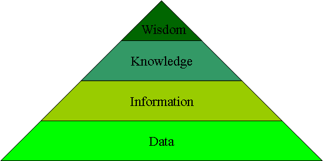
Figure 1 - The Knowledge Pyramid
The pyramidal structure indicates two things: that each level is based on the lower one; and that, as we move up the abstraction scale, quantity decreases (wisdom is rarer than knowledge that is rarer than information that is rarer than data).
What is the conceptual difference among these levels? A common answer is that they correspond to “know-nothing”, “know-what”, “know-how” and “know-why”. To make this more concrete, think of a game like chess. With respect to chess, data would be the knowledge of the positions of the pieces on the check-board during a given game; information would be the knowledge of the rules of the game, and therefore of the state space, the set of all admissible game states; knowledge would be knowing how to play, the strategies and tactics; and, finally, wisdom would be knowing why we play, how this act fits into the context of human society and in the players’ life.
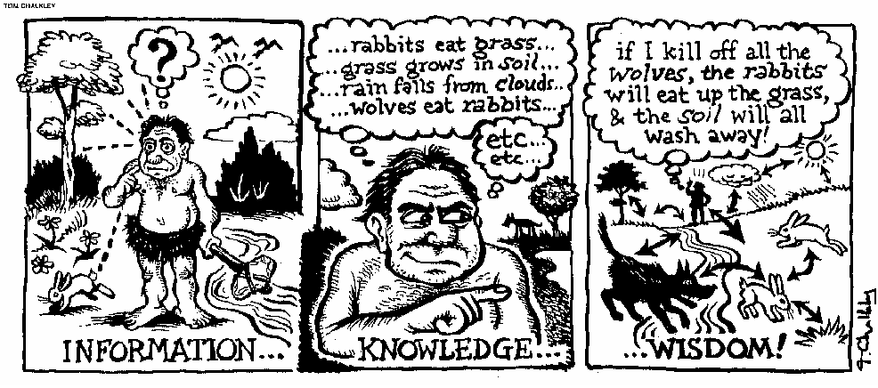
Figure 2 – The Meaning of Information, Knowledge and Wisdom13
The “knowledge” in social knowledge applications refers in general to all these levels. Specific applications will usually operate at just one or two of these levels. A project to create an open content map of roads and other geographical features would operate at the Data level. A general encyclopedia, like Wikipedia, at the Information level. A Wiki dedicated to debating software design patterns, at the Knowledge level. A site dedicated to the collective definition of a new European Constitution at the Wisdom level.
SKAs have significant cultural, social, political and economical repercussions because they change:
The nature of the process by which informational goods, that are increasingly central to our economy, are produced.
The relationship between consumers and producers of knowledge, progressively removing the barrier between the two.
The relationship between intellectual capital and intellectual labour, shifting power from capital to labour.
As Karl Marx pointed out over a century ago, the economic structure, or mode of production, is the basic framework into which social, political and intellectual activities take place:
In the social production of their existence, men inevitably enter into definite relations, which are independent of their will, namely relations of production appropriate to a given stage in the development of their material forces of production. The totality of these relations of production constitutes the economic structure of society, the real foundation, on which arises a legal and political superstructure and to which correspond definite forms of social consciousness. The mode of production of material life conditions the general process of social, political and intellectual life. It is not the consciousness of men that determines their existence, but their social existence that determines their consciousness.14
The world economy is still dominated by the mode of production that Marx witnessed and that dates back to the Industrial Revolution, but at its core a major change is taking place, the shift from the production of physical goods to that of informational goods:
… ideas and innovations have become the most important resource, replacing land, energy and raw materials. As much as three-quarters of the value of publicly traded companies in America comes from intangible assets, up from around 40% in the early 1980s. “The economic product of the United States”, says Alan Greenspan, the chairman of America's Federal Reserve, has become “predominantly conceptual”. 15
And in the production of informational goods another major shift is taking place, from commercial to cooperative production. We can see it clearly in the Web where the capacity of extracting and integrating social knowledge already plays a major role. Two out of three of the most popular Web sites are already “powered” by social knowledge. Among the 15 more popular Web sites in English16, five publish professionally produced content (Microsoft, AOL, Go, BBC, CNN), eight are social knowledge integrators or refineries (Google, Ebay, Myspace.com, Alibaba, Blogger, Craigslist, Xanga, The Internet Movie Database) and two (Yahoo and Amazon) have a mixed model where professionally produced and cooperatively produced knowledge complement each other.
We are entering the age of the collective production of information. And just as the mass-trained workers of the Industrial Revolution could produce more, and more sophisticated, goods than the skilled artisans of yore, the unwashed, but Internet savvy, masses of the Knowledge Revolution might reveal themselves more productive, in many domains, than the knowledge artisans of today: academics, journalists and assorted experts.
Power is of those who own, or otherwise control, the essential means of production of their age. Who will control the essential infrastructure of the knowledge age? Currently, the vast majority of intellectual property is in private hands and most cooperatively produced content is also privately appropriated. Increasingly, however, the products of the collective intellectual toil are been released under open content licenses. The pool of communally owned knowledge goods, the “Creative Commons”17, is growing quickly.
This radically alters the relationship between capital and (intellectual) labour. If tomorrow all employees of Microsoft were to walk out and leave, Microsoft would still be a very valuable company as it owns the intellectual property that underlies most of the current computing infrastructure. If all the employees of Red Hat, an open source company, left the company, Red Hat would be worthless. The value of Red Hat is entirely in the skills of its employees. Remembering Marx’s comment that “Capital is dead labour, which, vampire-like, lives only by sucking living labour, and lives the more, the more labour it sucks.”18, we might also say that, in the Knowledge Age, power shifts from dead to live labour.
To summarize:
The economic system is increasingly centred around informational goods.
Knowledge is increasingly cooperatively produced.
Cooperatively produced knowledge is increasingly collectively owned.
Depending on their position in the economic food chain, different observers look at these developments with feelings that range from fear and disdain19 to exultation20, but few doubts that such a tectonic shift in the mode of production on which our society is based will not have major consequences.
In approaching the study of social knowledge applications we need to take in account two factors:
The complex and multidisciplinary nature of the object of analysis that combines social, economical, political, knowledge management and computer science issues and therefore the absence, indeed the impossibility, of a single underarching explanatory theory.
The different requirements of the two professional communities that are interested in these phenomena: on one side, social scientists that are interested in understanding existing social knowledge applications and their wider impact on our society and economy; on the other, software designers and social and commercial entrepreneurs that are interested in designing novel and successful social knowledge applications.
A principled but flexible approach is required to accommodate these varied and somewhat contrasting requirements.
These problems are not unique to SKAs. The study of the urban space is another area where a multidisciplinary approach is required, where no single underarching theory exists and where the needs of scientists and those of practitioners and designers have to be balanced.
The English architect Christopher Alexander21, in a series of popular books 22 23 has introduced an interesting methodological approach to formulate, organise and share architectural and urban planning knowledge: the pattern language. The idea has been later adopted in computer science, leading to the development of sophisticated software design pattern languages 24 25.
Alexander explains the concept of pattern as follows:
Each pattern is a three-part rule, which expresses a relation between a certain context, a problem, and a solution.
.. As an element in the world, each pattern is a relationship between a certain context, a certain system of forces which occurs repeatedly in that context, and a certain spatial configuration which allows these forces to resolve themselves.
As an element of language, a pattern is an instruction, which shows how this spatial configuration can be used, over and over again, to resolve the given system of forces, wherever the context makes it relevant.
A pattern language is a set of related patterns that can be combined either to create new architectural and urban configurations or to explain the success or failure of existing configurations.
The basic methodological assumption that will be adopted in this work builds on and extends Alexander’s proposal and can be expressed as follows: social knowledge applications can be understood, and new applications designed, by combining a set of patterns that operate in the context of some basic principles.
Principles and patterns are both necessary to form a complete picture of these phenomena.
A principle is a universal proposition, an assertion that it is true for all the elements of a certain (usually very large) set. Principles come under different labels: laws, theorems, principles, rules, maxims, according to the extension of the set to which they apply and the level of formalization and precision with which they are expressed. Examples range from mathematical principles such as the principle of recursion to folk philosophy maxims such as “money cannot buy happiness”.
Principles explain how the world works but they don’t specify how to make the world work for us. For example, the knowledge of the principles of thermodynamics is a necessary but not sufficient precondition to inform the design of a working internal combustion engine.
Still, principles are essential because they provide a conceptual framework that limits and orientates our search for working solutions to concrete design problems. If, for example, you were to wake up one morning with the idea of designing a perpetual motion machine, a quick check of the principles of thermodynamics would inform you that such a machine is impossible and save you a lot of unnecessary effort.
Informing us on how to make the world work for our own ends is the job of patterns. Patterns are the conceptual building block that designers use to build new solutions and that researchers use to make sense of existing ones.
The structure of the text reflects the methodological approach adopted. It is divided into three parts: applications, patterns and principles.
The first part is an analysis of a significant social knowledge application. The analysis is rather brief, as its main objective is not so much to describe in detail the inner workings of the system but rather to show the utility of patterns and principles as an explanatory device for the application behaviour and performance. The case study examined is Wikipedia, the cooperatively edited and open content online encyclopedia. Wikipedia, because of the ambitiousness of its objective of creating a summary and a gateway to all knowledge, is one of the best examples of large-scale knowledge integration.
The second part is a catalogue of some of the patterns that play an important role in SKAs and that are used in the case study analysis. Patterns are grouped according to the key issues that SKAs have to solve in order to operate successfully and efficiently (see Patterns).
In the third part, we look at SKAs as economic networks and analyze the key principles:
Of networks utility: examining how the value of networks is affected by their topology (see Principles of Network Utility). This is followed by a discussion of some of the main implications of the same principles (see Some Implications of the Principles of Network Utility).
Of network evolution: explaining how the topology of network evolves in time (see Principles of Evolution of Network Topology).
Wikipedia is an open-content online encyclopaedia cooperatively authored and edited by a team of international volunteers. Participation is completely open, with anyone, including anonymous users, allowed to edit every article (except for a few pages that are particularly sensitive or frequently subject to vandalism that are modifiable only by a restricted number of administrators). The English version of Wikipedia was launched on January 15 2001 by Jimmy Wales and Larry Sanger of Bomis, a small American Internet company26. The first international editions of Wikipedia, of which currently over 100 are active, appeared in May 200127.
Primitive boats come in two basic shapes: the canoe, that can be made out of hollowed-out tree trunks using only the simplest tools, and the raft, that can be built even more easily by binding logs. The advantage of the canoe is that it is fast and manoeuvrable, the disadvantage is that it has a very limited living space and carrying capability. The raft has opposite characteristics: slow and difficult to manoeuvre but with a lot of space and great carrying capacity.
Canoes and rafts have been around for thousand of years but, apparently, it was only in the 5th century28 that some unknown genius realised that by combining these two totally opposite designs – by putting a raft on top of two canoes – a new kind of boat could be created that had all the best characteristics of its two components: fast and easy to sail and still able to carry a great quantity of goods. This new boat, the catamaran, opened completely new possibilities for seafaring and was instrumental to the colonisation of the Pacific.
As its name indicates, Wikipedia is also a blend of two very different, if not all together opposite, technologies: the online encyclopedia and the Wiki.
A Wiki is essentially a Web site that can be easily edited by remote users. Wikis are designed to minimise the effort of editing Web pages. Users do not need to install any special software, apart from a standard Web browser, and they write text into a ‘shorthand’ notation that it is designed to be easier to learn and to use than the full HTML language (the language in which Web pages are written). The other striking feature of Wikis is that they usually have a very open access policy, often allowing anyone to edit any page. Online systems usually defend themselves from intrusions and attacks by giving the right of modifying contents only to a few trusted users. Wikis take a different approach: anyone can create a new version of a page and the last created version immediately becomes the ‘official’ version that users see by default. However, all the previous versions of the page are preserved and they can be easily accessed and reinstated as the ‘official’ version making it easy to reverse the effects of vandalism or inconsiderate editing. It might sound like a paradox, but Wikis can afford to be open to unrestricted, unsupervised, editing precisely because, literally speaking, they cannot be ‘edited’ at all: you can add information to a Wiki but you cannot remove or modify existing information29.
After seeing the great success of Wikipedia, the idea of using a Wiki to build a encyclopedia might seems fairly natural. This was definitely not the case, as it is proven by the chronology of the appearance of these technologies. Both online encyclopedias and Wiki systems predate Wikipedia by a number of years. The first Wiki system was launched in 1995 30 31 and the Encyclopaedia Britannica was already available online as early as 199432 while Wikipedia was launched only in 2001. So, it has taken no less than 6 years, an eternity in Internet time, for someone to realise the explosive potential of the combination of these two technologies.
In effect, the editing process of a Wiki and that of a traditional encyclopedia could hardly be more different. Wikis usually accept contributions from everybody while traditional encyclopedias rely only on distinguished experts. In a Wiki, editing and publishing are a single process with new edited versions being immediately visible to the public while in a traditional encyclopedia the processes of editing and publishing are completely separate activities. Finally, Wikis are often used as a debating ground as much as a way of collecting knowledge with single voices maintaining their independence while one of the distinguishing features of an encyclopedia is that, though by necessity it is always the product of the work of hundreds of authors, it speaks with a single, “objective” voice. Having combined the openness and productivity of the Wiki with the requirements of objectivity and adherence to the facts of an encyclopedia was therefore far from evident and can indeed be considered a bold and inspired design choice.
The declared aim of Wikipedia is33:
…to create and distribute a free, reliable encyclopedia in as many languages as possible — indeed, the largest encyclopedia in history, in terms of both breadth and depth. 34
Has Wikipedia achieved its declared goal? To answer this question we need to examine separately a number of different aspects relative to the format as well as the quantity and quality of Wikipedia contents.
First of all, is Wikipedia, an encyclopaedia at all? Encyclopaedias are a specific literary genre with their own structure and rules. In particular we would expect a encyclopaedia to:
Provide a very wide coverage (encyclopaedic in fact) of its subject. In the case of a general encyclopaedia such as Wikipedia that means coverage of the totality of human knowledge.
Be structured as a collection of entries relative to specific objects or concepts.
Be written in a formal, “objective” style.
Even a quick browse of Wikipedia should be sufficient to reassure anybody that it easily matches the first two criteria: its coverage is indeed encyclopaedic and it is broken down in a high number of entries, each meant to illustrate a particular object or concept. The third criteria, though, is harder to assess. While most articles in Wikipedia are clearly written in the formal style typical of a reference work, it is possible to find counter examples of articles containing personal comments as well as colloquial, humorous or possibly even offensive language.
This high variability in style and quality is naturally due to the dynamic nature of Wikipedia. Being subject to continuous editing from thousands of authors, not all of the same quality and experience, as well as to the attacks of vandals and spam spreaders, there is always a certain fraction of Wikipedia content that is of sub-standard quality. A fair assessment of the degree of formality of Wikipedia language therefore would have to take in account the dynamic nature of the media and be measured in statistical rather than absolute terms.
A first study of this kind has been conducted by Emigh and Harring35 that have measured, using automatic text processing techniques, the degree of formality of the language of Wikipedia and other online encyclopaedias based on a random sample of articles. Their conclusion is that:
[A]long the formality dimension, … Wikipedia and the Columbia Encyclopedia are not significantly different from one another. Statistically speaking, the language of the Wikipedia entries is as formal as that in the traditional print encyclopedia. 36
We can then reach a first conclusion: at least from a formal, “syntactical”, point of view Wikipedia has succeed in creating a real encyclopaedia.
The second aim of Wikipedia is that of creating the largest encyclopedia ever assembled. This also seems to have been achieved:
As of August 29, 2005, the English Wikipedia alone had over 700,000 articles of any length, and the combined Wikipedias for all other languages greatly exceeded the English Wikipedia in size, giving a combined total of 1.4 million articles in 187 languages. The English Wikipedia alone has over 220 million words, almost 4x the largest English-language encyclopedia, Encyclopædia Britannica, and more than the largest printed encyclopedia on record, the enormous Spanish-language Enciclopedia universal ilustrada europeo-americana, and 90% of that work's volumes haven't been updated since 1933. 37
The objective of supporting a wide range of human languages has also been largely met with active versions of Wikipedia in over 100 languages of which at least 7 seem to have reached a useful size, each having more than 100,000 entries38.
If Wikipedia coverage is extremely wide, its depth, that is to say the amount of information available on each subject, is still relatively limited with an average of 345 words per article. This compares well with other online encyclopedias such as the Columbia Encyclopedia with 130 words per articles or even the Britannica Online at 370 words per article but less well with the printed version of the Britannica (well known for its in-depth coverage of subjects) with around 650 words per article39. The average length of Wikipedia articles is anyway growing steadily and might well, in time, reach a level comparable with that of the best printed general encyclopedias40. Even if this were not to happen, it is likely that, given the extraordinary growth in the total number of articles and the fact that the percentage of longer articles with respect to the total is fairly stable, the absolute number of detailed articles in Wikipedia will eventually be greater than the total number of articles of any other existing encyclopedia.
Width and depth are however of little relevance if the information provided is not reliable. Can we really rely on Wikipedia as a reference work? Certainly an encyclopedia that can be edited by anyone, including many incompetent and malicious users, cannot be really trusted. The elitist point of view, according to which only bona fide experts can produce a reliable encyclopedia, has been majestically expressed by Robert McHenry, former chief editor of the Britannica, in this widely cited extract from his paper on Wikipedia entitled "The Faith-Based Encyclopedia":
[h]owever closely a Wikipedia article may at some point in its life attain to reliability, it is forever open to the uninformed or semiliterate meddler... The user who visits Wikipedia to learn about some subject, to confirm some matter of fact, is rather in the position of a visitor to a public restroom. It may be obviously dirty, so that he knows to exercise great care, or it may seem fairly clean, so that he may be lulled into a false sense of security. What he certainly does not know is who has used the facilities before him. 41
McHenry’s evident horror in witnessing the entrance of the unwashed masses in the hallowed temple of encyclopedic knowledge, traditionally reserved to the restricted circle of tenured professors, might seem farcical but the point he makes is a reasonable one42 43: given that we have no guarantee that the contributors to Wikipedia are really knowledgeable of the subjects they are writing about and given that anyone can easily corrupt existing entries, how can a reader trust the Wikipedia contents?
Larry Sanger, the co-founder and previous editor of Wikipedia, has also argued 44 45 that Wikipedia tends to marginalise and put off experts and tolerates beyond reason low-quality or biased contributions.
Finally, Wikipedia itself admits the dangers that its radically open authoring model poses to its accuracy and reliability:
Credibility of information is open to question because information on the provenance of the text in an article is not readily available…
Credibility of sources can be dubious because of the anonymous nature of the wiki…
Dross can proliferate, rather than become refined, as rhapsodic authors have their articles revised by ignorant or biased editors.
Anyone can add subtle nonsense or accidental misinformation to articles that can take weeks or even months to be detected and removed.
The very nature of Wikipedia makes it possible for someone to change and/or rearrange an article in any way, resulting in lost information or to the point that the article no longer makes sense. 46
So, how reliable, accurate and authoritative is the average Wikipedia article? And, even more importantly, is Wikipedia overall quality decaying or improving with time? After all, as Wikipedia is still in its infancy and it is evolving at an incredibly fast rate, the direction in which it is heading is of much greater consequence that its current state.
One thing that can be excluded is a progressive massive deterioration of the quality of existing articles. Though articles can be occasionally vandalised or mutilated beyond recognition, the fact that all previous versions of Wikipedia articles are preserved by the system and can be very quickly reinstated and the presence of an active group of editors that continuously check the most recent changes makes Wikipedia very resilient to malicious attacks47. Viégas, Wattenberg and Dave have conducted a first study of the patterns of evolution of Wikipedia articles. One of their results is that vandalism is normally repaired very quickly48. in fact, the more egregiously vandalic the attack and the easier and faster it is to detect and fix it. As mentioned in the previous extract from Wikipedia, much more problematic to spot are subtler modifications, like the change of a date or of other detailed aspects of an article.
Occasionally, however, major slippages can occur and remain undetected for a long time. This has been the case of the Wikipedia entry on John Seigenthaler Sr. 49, a respected American journalist, that contained for a period of over four months a number of libellous allegations 50. The author of the libel was an anonymous user, that has later been identified, whose intention was to play a prank on a colleague that was a personal acquaintance of the Seigenthaler family. The page was not referenced by any other Wikipedia page and probably received close to no traffic and therefore escaped the attention of Wikipedia’s watchdogs. When Seigenthaler has discovered the existence of his doctored biography, he has published a very critical article that has been widely cited and that has significantly damaged the image of Wikipedia. As a result of this incident, anonymous users have been barred by creating new articles, though they can still edit existing entries. It has also rekindled the long running discussion in the Wikipedia community on how to provide an explicit assessment of the quality of an article51.
Seigenthaler’s case is interesting for two reasons. On one side, it provides a vivid illustration of the risks involved in a system like Wikipedia. On the other side, the fact that Mr Seigenthaler has felt the need to write an article on a major newspaper to refuse the allegations of the fake biography and to denounce the unreliability of Wikipedia is, paradoxically, a proof of the growing importance of Wikipedia as a reference work. Certainly, if the allegations had appeared on an unknown Web site, his reaction would have been quite different. His case is a harbinger of a not too distant future when, as the default World Wide Encyclopedia, Wikipedia’s influence will be so great that individuals, corporations, and even nations will want to keep a continuous watch on what it says about them. This might both improve its accuracy, as factual errors will be more likely to be corrected, as well as stultify its contents as an army of PR people descends on Wikipedia to fix its contents to their clients’ advantage. A taste of what might be happening is given by the recent incident where Adam Curry, one of the inventors of podcasting (a system to automatically download audio and video programs to Apple’s iPods and similar portable players), logged in anonymously to Wikipedia and edited the podcasting entry52 to remove references to the role played by another podcasting pioneer53. In this case, Wikipedia’s editorial process worked admirably well, Curry’s biased alterations were quickly detected and undone and his identity traced obliging him to apologise.
If the self-defence mechanisms present in Wikipedia guarantee that the quality of an article cannot significantly decrease in time, it is reasonable to assume that the only direction left is up. Lih54 has implicitly adopted this point of view, by measuring the quality of an article as a function of diversity, defined as the number of unique editors, and rigour, defined as the total number of edits. If we accept this approach then clearly, with time, the overall quality of Wikipedia can only increase. This line of reasoning, though, feels uncomfortably like a petition principii, we are assuming as premises our own conclusions. To address properly our questions, we need an external measure of information quality that does not rely on assumptions on the relationship between the nature of the editorial process and the quality of its output.
The most direct way of assessing accuracy and overall quality is to have a team of professional librarians or domain experts to check the facts contained in a statistically significant sample of Wikipedia articles with respect to known reliable sources. One such study has been recently carried out by Nature, in the form of a peer-review of equivalent entries on scientific subjects in Wikipedia and the Encyclopaedia Britannica. The main conclusion is that the accuracy of Wikipedia is only slightly inferior to that of its more illustrious competitor:
The exercise revealed numerous errors in both encyclopaedias, but among 42 entries tested, the difference in accuracy was not particularly great: the average science entry in Wikipedia contained around four inaccuracies; Britannica, about three.
… Nature's investigation suggests that Britannica's advantage may not be great, at least when it comes to science entries.
… Only eight serious errors, such as misinterpretations of important concepts, were detected in the pairs of articles reviewed, four from each encyclopaedia. But reviewers also found many factual errors, omissions or misleading statements: 162 and 123 in Wikipedia and Britannica, respectively. 55
Wikipedia articles, however, were criticised for their poor readability and structure. This suggests that the aspect of encyclopedic writing more impervious to a distributed mode of editing is not the collection and checking of facts but rather the integration of facts in a coherent whole. This is not surprising, while adding new facts to an existing article is a relatively low cost operation reorganising the contents of an article is a much greater task and, critically, a task that can not be easily parallelised (see Modularisation).
Unfortunately, peer reviews are extremely time consuming and no regular series of such studies, that might reveal how the quality of Wikipedia is changing in time, has been conducted yet. Luckily, an automatic and usually reliable indirect measure of the authoritativeness of Web resources, such as Wikipedia entries, is available in the form of search engines ranks. Many search engines, and in particular Google, use ranking algorithms that attribute a higher score to the Web pages that are more widely cited (linked) by other pages. So, the Google rank of a Wikipedia entry can be seen as an assessment, performed by a high number of independent agents, of the value of that entry with respect to all the other Web pages that discuss the same subject 56 57 . Measuring how the Google ranks of a significant subset of Wikipedia articles evolve in time should then give us a good idea of the overall evolution of the quality of Wikipedia58. The anecdotal evidence is that Wikipedia pages appear ever more frequently near the top of Google’s result lists but proper statistics, a comprehensive Wikipedia “Google-index”, is not yet available. A less refined – as unlike the Google PageRank algorithm, it does not take in account the authoritativeness of the Web sites citing Wikipedia – but still useful statistics is the number of mentions of Wikipedia on other websites. As the following graph shows, they have been increasing extremely fast59.
Figure 3 - Mentions of Wikipedia on Websites outside Wikipedia60
Authoritativeness is a major, but not the only, component of the overall quality of a reference work. Another important aspect of quality, which is not mentioned explicitly among the Wikipedia goals but that certainly has great importance for the user of any encyclopedia, is how up to date the encyclopedia contents are. Even in areas of knowledge, such as philosophy, that evolve relatively slowly and that are less influenced by recent events and technical advancements the glacial update pace of traditional encyclopedias has been a major problem. Indeed, the necessity of an updated encyclopedia was the main justification for the creation in 1997 of the online Stanford Encyclopedia of Philosophy61, currently the most distinguished open-content academic encyclopedia. From this point of view, Wikipedia scores much better than any other existing encyclopedia, either printed or online. Wikipedia articles are continuously updated and entries on current events are created and maintained in real time. Lih, that examines Wikipedia as an example of participatory journalism, observes that:
Participatory journalism presents a major change in the media ecology because it uniquely addresses an historic “knowledge gap” – the general lack of content sources for the period between when the news is published and the history books are written. Traditional encyclopedias have typically served in this role, but their yearly publishing cycles and prohibitively high cost make them ill-suited for the task. Even conventional online encyclopedias, such as Britannica.com, work on six month to one year cycles for the creation of their articles.
A good measure of the overall value of a Web resource is its traffic rank, its position in the list of the most popular Web sites. As there is no reason to believe that people use Wikipedia as anything but an encyclopedia, an increase in Wikipedia traffic rank, in particular with respect to other reference sites, can reasonably be interpreted as a vote of confidence in its overall usefulness as a reference work. The statistics shown in the following graph, provided by the independent ranking site Alexa, are very clear: the growth in Wikipedia traffic has been exponential and Wikipedia is the most popular online encyclopedia by far 62.
Figure 4 - Alexa Traffic Ranking for Wikipedia 63
We are now in a position to answer our initial question: has Wikipedia achieved its goal? The conclusion can only be positive: Wikipedia has succeed, in just a few years, in creating an authentic encyclopedia whose breadth is unprecedented, whose depth is reasonable and improving, whose reliability is hard to measure but apparently also improving and whose overall usefulness as a reference work for the general public, if not necessarily for academic or specialised audiences, is unequivocally attested by the exponential growth of its popularity.
We are now ready to start examining some of the principles and patterns that underlie Wikipedia amazing success.
The exponential growth in Wikipedia’s usage and size is the hallmark of systems whose utility grows with usage. At the core of Wikipedia’s growth there is a virtuous cycle: the greatest the quantity of information it contains, the greatest its usefulness and the number of readers-authors that it can attract, leading in turn to further growth in content. Once the virtuous cycle has started, it is virtually unstoppable and it leads to logistic growth, that is to say essentially exponential growth till it approaches the saturation point (see Principles of Network Utility). As Wikipedia is still in its infancy, we can expect its explosive expansion to continue for a long time.
The difficulty lies entirely in starting the virtuous cycle. At the time of their launch, systems whose value depend on their usage are at a serious disadvantage as, inevitably, they have no users. This lead to a vicious, rather than virtuous, cycle: no users mean no value and therefore no way of attracting more users. The risk is that, rather than growing, the system will stagnate, unable to “bootstrap” itself (see Networks Have a Bootstrapping Problem).
On this regard, it is instructive to compare Wikipedia’s success with the failure of Nupedia, a previous attempt of the team behind Wikipedia to create an online open-content encyclopedia 64. The key difference between Nupedia and Wikipedia was in their editorial model. Nupedia tried to emulate the traditional encyclopedic editorial model. Authors were expected to have demonstrable experience in their assigned subjects, mainly by holding a relevant academic position, and the articles went through a lengthy, multi-staged, editorial process of revision and checks. This complex and selective process drastically reduced the number of potential authors (see Out of Mediocrity Excellence) and imposed a significant burden on prospective authors. Unfortunately, as the value of Nupedia in its initial stage was very low as the encyclopedia lacked in both contents and prestige, there was very little incentive for authors to join the project. Costs being greater than rewards, the inevitable result was that Nupedia was able to complete only a negligible number of articles before being superseded by Wikipedia and abandoned.
On the contrary, Wikipedia has successfully managed to solve its bootstrapping problem by a combination of extremely low adoption costs and a modest amount of “start-up capital”. Everything in Wikipedia is geared to attract as many contributors as possible and to reduce to the minimum the cost of participation. In Wikipedia, authorship is literally just one click away. The start-up capital was provided by “seeding” Wikipedia with the contents of existing open-content reference works and by exploiting part of the editorial team that had gathered around Nupedia (see Seeding).
The value of an economic good does not reside uniquely in its intrinsic value, in what it is worth when used on its own, but also on its extrinsic value that is produced by the combination of the good with others to create more complex and valuable goods (see Principles of Network Utility). Wikipedia itself is a very successful combination of two ideas: the online encyclopaedia and the Wiki cooperative authoring system. The combination of these two ideas has a value that goes well beyond that of its separate components. Wikipedia is vastly larger and more valuable than any existing non-Wiki online encyclopaedia or any non-encyclopaedic Wiki.
Wikipedia is particularly good at enhancing the value of its contents by making them available in a way that it is favourable to recombination. It does so by favouring:
internal recombination through interlinking
external recombination, thanks to its open content license that permits both the referencing and the replication of its contents
One very evident peculiarity of Wikipedia is the enormous amount of self-reference. Wikipedia articles contain an extraordinary number of references to other Wikipedia articles, on average there is one internal link every 16 words. This is due both to the encyclopedic nature of the work, that provides endless opportunities for cross-reference, and to the low cost of creating internal links. Creating a link to another Wikipedia article is as simple as typing the article name in double brackets, as for example in “[[Italy]]”. It is even possible to create links to entries that do not yet exist. These are displayed in a different colour than links to existing articles and act as reminders of articles that should be written.
Many users discover Wikipedia through search engines like Google, while looking for information on some specific subject. Once they have landed on their first Wikipedia article, however, they are likely to start a much longer journey. In fact, one of the reasons why Wikipedia can become so addictive is the incredible ease by which, thanks to its dense interlinking, one can endlessly flow from one subject to another. The feeling is that of navigating through a huge collective associative memory rather than a loose assembly of articles as in a traditional encyclopedia:
Wikipedia articles tend to be shorter (than classical paper encyclopedia articles) and extensively linked one with each other. As a set, they look closer to Vannegar Bush's dream in “As you may think” that anything else that I have seen.65
Wikipedia is also very widely cited from external sites. External citations are facilitated by the very simple and predictable naming conventions of Wikipedia (see Addressability). References to Wikipedia are also more valuable, and therefore more likely to be created, than references to commercial encyclopedias. While a link to an article in a commercial online encyclopedia is useful only to those who own a subscription, a reference to a Wikipedia article is useful to everybody.
References, either internal or external, increase the exploitable value of Wikipedia by:
increasing the extrinsic value of the referencing page or article, that depends on the number of additional resources accessible through it
reducing the access cost of the referenced article, making it easier to find (see Limits of the Preferential Attachment Model).
Wikipedia’s value is also multiplied by its many clones. Wikipedia is widely replicated, with tens of integral copies available on the Internet 66 plus an unknown but certainly significant number of partial copies and derived works.
Another factor that ensures the long-term growth of Wikipedia’s value is the flexibility of its technical platform. This flexibility has allowed the emergence of the many different mechanisms by which the contents of Wikipedia are structured and made easily accessible. As a result, Wikipedia is probably the encyclopedia that offers the widest variety of classification mechanisms, ranging from a variety of lists and taxonomies to specialised portals (see End-to-End Intelligence).
Coordinating the activities of a huge community of volunteer readers-authors, Wikipedia has around half a million registered users67 plus an unspecified number of anonymous contributors, working on hundred of thousands of potentially contentious subjects, is no mean task.
As in all organisations, coordination depends on communication and control. The solutions adopted, however, are quite original and very unlike those typical of formal organisations.
Wikipedians have at their disposal a wide array of one-to-one and one to many communication mechanisms. Each registered user has a personal page where messages can be left. A number of informal online “associations”68 connect likely-minded members of the community. Many “core” Wikipedians know each other identity so they can also communicate directly using e-mail or other communication tools. Finally, a series of national and international face-to-face meetings, including an international conference, have been organised.
Direct communication, however, does not scale well and it would be fanciful to believe that it could provide a suitable foundation for coordination on such a large scale (see Coordination). The hallmark of Wikipedia’s coordination is indirect communication. Coordination mainly takes place by “working on the same page”, editing articles and reacting to edits made by other participants. In a way not dissimilar to ants that coordinate their foraging activities by reacting at chemical markers left on the trails by their comrades, Wikipedians coordinate each other by monitoring the flow of edits on the pages that concern them most (see Stigmergy).
It is only when this mechanism fails, when a conflict arises that cannot be solved indirectly, that direct communication kicks in. The first port of call are the “Talk” pages, of which one exists for every entry. The “Talk” pages are a forum to debate the contents of the corresponding encyclopedic entry. Talk pages absorb and modularise conflict. Though there might be extremely controversial views on certain subjects, the modular nature of the Wikipedia debating system ensures that these conflicts remain localised. If consensus cannot be reached, third parties can be called in to settle the dispute in an amiable way69. If even these mechanisms fail, the case can be brought to the attention of the Arbitration Committee70, that has the power to issue binding decisions.
When we reach the level of the Arbitration Committee we leave the realm of peer communication and enter that of power and control.
An essential function of power structures is that of establishing who can do what and under what circumstances. In the context of an online encyclopaedia, power mainly translates into authoring and editing power: who has the right to create new articles and to modify existing ones.
Aaron Krowne distinguishes two different authority models for collaborative authoring:
The first, and default model of authority, we term owner centric. In this paradigm, the creator of an entry (the owner) controls all modifications to the entry, and revisions by others must be done by way of corrections (which are only suggestions as far as the owner is concerned) … Clearly this model resembles the familiar academic environment, where a single author, or a group of authors (with a first author) creates and revises the document, and is subject to external review from a community of peers. This review takes the form of commentary which is then integrated by the author or authors; the reviewer makes no direct changes …. Some of the explanation for why this “hands-off” paradigm is desired may be the high value placed on uniformity and style of presentation as a distinct, unitary work.
The second model we call free-form. This model has gained popularity through the Wiki family of collaborative content management systems. The crux of this paradigm is that anyone may spontaneously make changes to any object, but the creator has the ability to roll back changes to protect against malicious or low-quality edits … The philosophy behind this model is that communal is best: allowing people to instantly make changes to a document they come across will (allegedly) lower the barrier of content creation to its optimal level, raising the net productivity of the content management system. The owner in this paradigm is merely an “administrator,” asserting an a posteriori sanity check on the content. 71
Krowne’s observations capture the essential differences between these two models. In the case of the traditional academic model, the link between authorship and authority is established a priori. Authorship implies ownership and therefore absolute authority on the contents. Authority is exercised actively and continuously, no changes can be made to the content unless the author directly applies them. In the case of the Wiki model, as adopted by Wikipedia, authorship and authority are disjoint as authorship does not imply ownership. Authority is exercised only a posteriori, reactively and discontinuously, when the checks and negotiations on the contents carried out by the readers-authors fail to produce an acceptable outcome.
Wikipedia’s model of authority can be seen as a radical application of the principle of subsidiarity (see The Principle of Subsidiarity). The principle states that, in a hierarchical organisation, each level of the hierarchy should perform only those functions that cannot be efficiently performed at a lower hierarchical level.
Wikipedia has developed a rather elaborate power structure that would be lengthy to analyse in detail. In essence, however, it consists of just four levels:
At the lowest level we find the unprivileged users, both registered and anonymous. All users have the right to edit existing pages. Registered users can also create new articles. Unprivileged users provide the bulk of Wikipedia’s contents, acting both as authors and editors of other users’ contributions.
The second level is composed by a modest number of administrators72 (and other administrator-like figures73) that are chosen among seasoned and proven Wikipedians. They operate as watchdogs and shepherds, intervening against vandalism, providing guidance and helping to settle conflicts.
The third level is the Arbitration Committee, that as we have seen, operates as a court of last instance in case of conflicts that cannot be amicably resolved.
Ultimately, power rests in the hands of the Wikipedia Foundation's Board of Trustees and of Wikipedia’s founder and benevolent constitutional monarch Jimmy Wales (see Benevolent Dictatorship). It is at this level that the informal, trans-national and “virtual” power structure of Wikipedia connects with a formalised, specific, “real world” legal system (that of the State of Florida, U.S.A.).
So far, Wikipedia’s management by exception model seems to have achieved the right balance between fostering large-scale participation and maintaining coherence and quality. A balance that has often eluded previous social knowledge applications. As Clay Shirky has remarked:
Members are different than users. A pattern will arise in which there is some group of users that cares more than average about the integrity and success of the group as a whole. And that becomes your core group, Art Kleiner's phrase for "the group within the group that matters most."
… in all successful online communities that I've looked at, a core group arises that cares about and gardens effectively. Gardens the environment, to keep it growing, to keep it healthy.
…The Wikipedia has a similar system today, with a volunteer fire department, a group of people who care to an unusual degree about the success of the Wikipedia. And they have enough leverage, because of the way wikis work, they can always roll back graffiti and so forth, that that thing has stayed up despite repeated attacks. So leveraging the core group is a really powerful system. 74
Power comes in two forms: the “negative” power of limiting what people may do and the “positive” power of stating what people must do. In Wikipedia, as in all volunteer-powered open content applications, only the “negative” form of power is available as nobody can assign a volunteer to at task that she does not enjoy.
Therefore, social knowledge applications have been obliged to develop alternatives to managerial or market-driven allocation of human resources (see Allocation). Two allocation patterns that play a key role in Wikipedia are: the self-allocation of tasks by authors and administrators (see Self Allocation) and the merging of the roles of producer and consumer in the single figure of the reader-author (see Prosumer).
Wikipedia is certainly not the first example of the exploitation of non-expert knowledge to create a work of reference. As early as 1857, the Oxford English Dictionary called for volunteers to mail in examples of early known word usages. 75 It is however, and by a large margin, the most successful so far. In fact, one of the things that amazes first-comers to Wikipedia is the sheer quantity of information available. Why is Wikipedia so productive?
The ability of Wikipedia to harness an unprecedented quantity of volunteers’ contributions depends on a number of factors:
The free-for-all authoring model that allows everybody to contribute. While the contributions of the mixture of laymen and experts that compose the ranks of Wikipedians might be on average rather modest, when aggregated they can easily outperform the output of the greatest team of experts ever assembled by a commercial publisher (see Out of Mediocrity Excellence).
The fact that, being an universal encyclopedia, anyone who is knowledgeable in any field is a potential contributor. This is in contrast with other open content projects, and in particular open source projects, that require a high degree of specialist knowledge.
The offer of tasks of all sizes and degrees of difficulty, to suit anybody’s availability of time, ranging from the occasional contributor to the compulsive Wikipediholic76. As all encyclopedias, Wikipedia is broken into entries that can be edited independently and it is therefore inherently modular. Its editing process is even more so. The minimum effort required to contribute to Wikipedia is incredibly small. Entries are divided into sections that can be edited independently and there is no minimum acceptable size for edits. You can contribute to Wikipedia by fixing the spelling of a word or a misplaced comma. Indeed, it is so small that (minor) editing becomes a natural aspect of the process of using Wikipedia: you are reading an article, you spot a mistake, you fix it and move on with your reading. For seasoned Wikipedians, proof-reading becomes almost a subliminal activity. At the other end of the spectrum, the creation of new articles is a task of sufficient difficulty to challenge even the most motivated contributors (see Modularisation).
The knowledge integration problem faced by Wikipedia consists in filtering out incorrect and biased information while, at the same time, representing all legitimate points of views, independently from their political, religious, or cultural origin.
The methodological answer of Wikipedia to this problem is the Neutral Point of View (NPOV)77 policy. The policy is considered "absolute and non-negotiable" so playing in Wikipedia the role of a constitutional rule.
The policy provides guidance on how to deal with conflicting point of views and it is stated as follows:
articles should be written from a neutral point of view, representing all views fairly and without bias.
.. unbiased writing presents conflicting views without asserting them. Unbiased writing does not present only the most popular view; it does not assert the most popular view is correct after presenting all views; it does not assert that some sort of intermediate view among the different views is the correct one. Presenting all points of view says, more or less, that p-ists believe that p, and q-ists believe that q, and that's where the debate stands at present. Ideally, presenting all points of view also gives a great deal of background on who believes that p and q and why, and which view is more popular (being careful not to associate popularity with correctness). Detailed articles might also contain the mutual evaluations of the p-ists and the q-ists, allowing each side to give its "best shot" at the other, but studiously refraining from saying who won the exchange.
In the impossibility of asserting the “objective truth”, Wikipedia takes the stance of considering as “knowledge” the current state of the discussion on a certain topic at a given stage.
The policy, in principle, guarantees fairness but having a well defined policy is not the same thing of being able to enforce it. What permits its implementation, and therefore the long term viability of Wikipedia as an encyclopedia are two factors:
The sheer number of the contributors, that provides an effective first line of defence against acts of vandalisms, gross misrepresentations and nonsense (see Redundancy).
The presence of a “core team” of administrators and dedicated users that have been socialised into the NPOV ethos and that transmits it to new comers.
The number and dedication of the true believers having so far proven stronger that the ever present attempts at commercial and political exploitation, Wikipedia continues to prosper and gets everyday a bit closer to its aim of building the “greatest encyclopedia in history”.
This part of the thesis describes and classifies a set of patterns that play an important role in the design and operation of social knowledge applications. It does not pretend to be an exhaustive catalogue as the number of relevant patterns is vast and it would be impossible to capture all of them.
The patterns are grouped according to the key issues that SKAs have to solve in order to operate successfully and efficiently.
SKAs are complex objects and to understand them we need to consider their different aspects as economic, social and knowledge producing systems.
If we think of SKAs as economic networks, the major problem is how to maximise their economic value. If we examine this problem in the context of the lifecycle of a SKA, we can subdivide it into two separated issues:
Bootstrapping: ensure that the value of the network reaches the minimum level, the critical mass that will permit its further expansion (see Bootstrapping).
Valorisation: maximise the network value in the long term (see Valorisation).
From an organisational point of view, the key issue is that of achieving the required degree of coordination across communities that are usually extremely large and geographically distributed (see Coordination).
A specific kind of coordination that, for its economic importance, warrants a separate analysis is the optimal allocation of the factors of production. We will examine some patterns that help SKAs allocate their human resources so as to maximise the social value of their knowledge products (see Allocation).
Finally, as SKAs are essentially “knowledge factories”, we need to examine the different phases of the knowledge production workflow: the creation and sharing of knowledge (see Knowledge Generation and Collection) and the integration of separate individual contributions into a coherent whole (see Knowledge Integration).
Bootstrapping networks by assuring that they reach their critical mass.
The value of a networked information system for a user often depends from the total number of users and/or the total quantity of content made available through the system. So, for example, the use value of the telephone system depends on how many people are contactable through the system. Similarly, the value of a newsgroup, a mailing list or a wiki depends on the quantity of accessible information and the number of reachable users. When a new system is launched, it typically will not contain a significant quantity of information or enjoy a significant user base. Lacking users and content its value to prospective users is therefore zero. As new users have no incentive to join the system the system will never be able to grow (see Networks Have a Bootstrapping Problem).
The bootstrapping problem can be overcome by patterns that:
Increase the size of the network till it reaches the critical mass: either directly (see Seeding) or indirectly by connecting it with a pre-existing network (see Backward Compatibility).
Reduce the critical mass level:
As they increase the users’ capacity to exploit the network value (see Valorisation patterns)
Or they reduce the network adoption cost by:
Offering discounts or incentives in order to keep the adoption cost lower than use value (see Commensurate Cost).
Creating the expectation that the network will eventually reach critical mass (see The Shadow of the Future).
Insuring users against the losses deriving from the possible failure of the network to reach critical mass (see Pledge Banks).
The new system is ‘seeded’ with an initial set of users and/or content in order to make it more attractive to additional users. As new users join the system, its use value increases so leading to further growth of the user base.
We can find examples of seeding in all kind of processes (physical, biological or social) that are dominated by strong positive feedbacks. Crystals’ (e.g. snow crystals or snow flakes) formation is one process that requires a seed to get started78.
A combination of informational and human capital was instrumental to the take off of Wikipedia. Wikipedia was initially seeded with the contents developed by Nupedia, the previous attempt of the team behind Wikipedia to create an online encyclopedia79. Just as importantly, the editorial team of Nupedia started contributing to the new encyclopedia providing the initial core of the Wikipedia user base. At a later time, the freely available contents of the 1911 edition of the Encyclopedia Britannica and other content from publicly available reference works such as the Free On-line Dictionary of Computing, the Internet Movie Database and the USA Census Bureau statistics80 were also added to Wikipedia. Even if some of these contents were outdated or of modest entity they provided a honey pot that proved effective to attract further contributions.
Seeding is just a form of startup capital and can be provided in a number of ways. The Stanford Encyclopedia of Philosophy was started thanks to an initial grant and, probably just as importantly, to the social capital provided by Stanford University.
A user base can also be created by political fiat when public administrations or large companies define or adopt technological standards. For example, the recent decision of the U.S. State of Massachusetts and other governmental organisations to adopt the Open Document format will create an initial user base for the new standard and might be instrumental to its success81.
Seeding requires the availability of pre-existing informational, social or economical capital.
Provide backward compatibility with an existing network in order to get access to an existing user community.
Communication networks, whose value entirely depends on the number of connected users, are usually backward compatible with previous networks. Mobile phones are compatible with fixed phones and 3G mobile phones are compatible with 2G ones.
Computer CPUs and software, are also often backward compatible. This is particularly true for business-oriented and mission-critical architectures (e.g. IBM’s mainframes).that are often able to run programs that are decades old.
Web browsers provided support for non-Web protocols such as FTP or Gopher to entice the existing user base of these systems to move to the Web.
Existence of one or more systems that provide a function that is similar or complementary to the one performed by the new system.
Simple things should be simple. Complex things should be possible. (Alan Kay)
In the context of network systems, the commensurate cost pattern consists in keeping the adoption cost of a network lower than its utility. As the network utility is mostly extrinsic and it is initially very low this means that the adoption cost must also start from a very low level, though it might increase later as the network gets momentum.
A commensurate cost can be achieved by providing discounts or incentives, by building the network around open standards or by making the network technology extremely easy to use for new comers.
We are all familiar with the discounted introductory prices offered by new telephone networks or online network services. By manipulating prices, commercial operators can “follow the utility curve” allowing the creation of an initial user base and progressively raising the price of the network services as their utility increases. This strategy obviously requires very deep pockets as operators might have to sell services under cost for quite a long time.
Systems, such as open source software, that are available for free have, ceteris paribus, a permanently lower adoption cost with respect to equivalent commercial systems. Networks that are based on open standards will usually also have free implementations giving them an edge on networks based on closed proprietary standards. Permanently low costs are also necessary for widespread adoption as they constrain the maximum size reachable by the network (see Networks Have a Bootstrapping Problem). This explains why many of the most widely adopted Internet-based networks such as e-mail, the WWW, instant messaging systems and the Voice on IP system Skype, are available for free.
The Web is a successful and prominent example of a system that is both extremely easy to use for new end users and that, at least in its initial stage, was also very straightforward for information producers to adopt. Web technology has progressively grown in sophistication and complexity, keeping in step with the increase in the usefulness of the Web and therefore of the costs that publishers are willing to sustain in order to have access to this new medium82.
Another element that affects early adoption and therefore the possibility of overcoming the bootstrapping problem is the effect of users’ expectations. So far, we have assumed that utility was a function of the current level of usage of the network. Users, however, do not take their decisions exclusively on the base of the current situation but also on the base of their expectations regarding the future83. So, if a user has a good reason to believe that the system will eventually reach a certain level of use this will influence its utility function.
When Microsoft launched its first Xbox game console, many software companies had already invested in creating games for the new platform and gamers had reserved in advance the new console. Users were flocking to join the new network even before it existed because they anticipated that the market penetration of a product backed by a company as powerful as Microsoft would have been very significant.
Expectations can have also a more complex structure. A compelling recent example is The Million Dollar Homepage. Launched in August 2005 by Alex Tew, an English university student, to raise money for his studies, the site consists in a single 1000*1000 pixels image. The one million pixels are on sale to advertisers at US$1 each, since the name The Million Dollar Homepage. The value of the site to advertisers depends on its ability of attracting eyeballs. The intrinsic value of the site for people derives from the curiosity for a novel and bold idea, the extrinsic value from the presence of advertisement in an unusual and amusing format. For the virtuous cycle of more advertisers leading to more users leading to more advertisers to get started, some advertisers had to make the first move. But why would early advertisers buy space on the site? They could naturally see that, had the site caught up, it could have been a very valuable advertising space. But, why not waiting for it to gather momentum, so avoiding the risk of investing in a potential failure? Had they done so, however, the popularity of the site would have never surged. They invested because they expected the advertising value of the site to spike but then to quickly decrease as the novelty effect wore off and the arrival of more advertisers diluted the advertising impact. This made it compelling for advertisers to buy space as soon as possible. This solved the bootstrapping problem, and .. has made its clever inventor quite rich in a matter of a few months.
Investing time and money to join a budding network involves a significant risk: if the network fails to reach critical mass it will unwind and lose all its value making the investment worthless.
Pledge banks are an insurance against the “adoption risk”. Prospective customers pledge to buy a certain quantity of the network good at an agreed price, provided that the network reaches its critical mass and therefore the good is made available84. The bank collects the investors contributions and invest them in the network if a prefixed minimum level of investment is reached. Otherwise it returns the money to the investors.
International treaties usually take the form of a conditional pledge: they become operational only if a minimum number of countries ratify them. The reason is that international treaties often involve significant costs for the adherent countries and are ineffective unless a critical mass of countries participate. Consider a treaty on measures to stop global climate change. If only a few countries were to put in practice the required pollution curbing measures, they would sustain a significant economic costs for no good reason as the global climate would change anyway.
PledgeBank.com is an experimental pledge ‘bank’ that allows everybody to promise to make a (good) deed provided that a minimum number of other people agree to do the same. Pledges are non-monetary and there is no mechanism to enforce compliance. Nevertheless, the system is very popular and seems to be effective as a tool to rally support and raise awareness about good causes.
Can be applied also in situations where the expectation of reaching critical mass are low.
Maximise the long term value of a social knowledge application.
Social knowledge applications can, from an economic point of view, be considered as a network. The value of an economic network depends on the number of potential combinations of its elements. Therefore, to maximise the value of a social knowledge application, we need to increase its ‘recombination potential’, that is to say the capability of its elements to be recombined in new and valuable combinations.
Network value can be maximised by patterns that:
Facilitate the reuse of the network elements by making them individually accessible (see Addressability).
Future-proof the application, making it able to deliver additional functionality and to accommodate technological advancements that are unpredictable at the time the application is designed. (see End-to-End Intelligence).
It is 1980 and you are using your Apple II computer to connect to an online bulletin board system. The board stores messages, divided by subject into a number of areas and sub-areas. You spend a long time browsing a number of these areas and eventually locate a message that it is particularly interesting. A few days later, you would like to read that message again. To find it, however, you need to replay again the lengthy sequence of commands that had led you to the message in the previous occasion.
It is 2005 and you are visiting a Web site and, after a lot of browsing, you eventually find a page whose contents are particularly interesting. You click on the ‘Bookmark this page’ button on your Web browser, enter an easy-to-remember name for the page and move on with your reading. A few days later, you revisit that page by simply clicking on the corresponding bookmark. You also send the address (technically, the Uniform Resource Identifier85) of the page to a friend by email and add it as a reference on your own Web site.
The difference between the two systems, that makes one so much more convenient and valuable of the other, is the fact that the Web has an addressing system that is both much wider, as it spans multiple sites scattered all over the world, and much finer, as it allows to individually address sub-sections of each site, than the ones available on older online systems.
Addressability is a design pattern that consists in making as many network resources as possible directly accessible in order to facilitate their reuse. Addressability maximises the value of a network by increasing the total number of network elements available for reuse and by reducing the cost of accessing them.
An addressing system is essentially a recipe to assign unique identifiers to a set of resources. The quality of the system, as a way of maximising network value, depends on different factors:
Extent: how wide is the range of top-level (composite) resources addressable.
Resolution: how finely can the system address sub-components of the top-level resources.
Persistence: an address is said to be persistent when the resources that it points to, at different moments in time, are equivalent. As there are many possible definitions of equivalence, mainly depending on the level of abstraction adopted, and their suitability depends on the specific objectives of the users of the system, the concept of persistence is not absolute.
Predictability: how easy is to deduce the address of an object on the base of the knowledge of some of its properties, such as the name of the object in a pre-existing language or addressing system.
Thanks to its addressing system, that assigns a persistent and predictable identifier to any possible subject, Wikipedia effectively proposes itself as a gateway to all knowledge. Wikipedia identifiers are persistent, “http://en.wikipedia.org/wiki/Moon” will always indicate the article on the Moon in the English version of Wikipedia. Identifiers are also highly predictable, being based on the terminology of existing human languages. The extent of the Wikipedia addressing system is the set of all possible encyclopedic subjects. This assumption is reinforced by the fact that Wikipedia will respond to a request for an entry that doesn’t exist with an input form to enter the contents of the new entry. It is therefore considered good practice, when writing a Wikipedia article, to create links to all related entries that should be part of the encyclopedia, irrespectively of the fact that they already exist or not.
Addressing systems are at the core of all networks, the following table lists some significant examples.
|
|
Extent |
Resolution |
Persistence |
Predictability |
|
Web |
Anything |
Down to, at least, page section level |
Partial (resources can be renamed or disappear) |
Low |
|
Wikipedia |
Encyclopedic Entries |
Down to, at least, entry section level |
Yes |
High |
|
|
All queries expressible in the Google query language |
Down to a set of online resources |
Yes (always return the most relevant hits though not necessarily the same ones) |
High |
|
Blog permalinks86 |
Blog entries |
Blog entry |
Partial (addressable resources might disappear) |
Low |
Table 1 - Examples of Addressing Systems
Addressability subdivide a system is a set of individually accessible parts, this is a form of Modularisation.
Future-proof a communication system, making it flexible enough to deliver additional functionality and to accommodate technological advancements that are unpredictable at the time the system is designed.
End-to-end intelligence is a design pattern for communication systems87 that consists in keeping the system as assumption-free and application-independent as possible. The intelligence required to implement specific applications is located at the edges of the system rather than in the system itself.
Networks that do not conform to the end-to-end intelligence pattern are unable to deal with unexpected technological changes and are eventually replaced by more flexible networks. Compare the different fates of the telephone network and the Internet. Topologically, the two networks are essentially identical, as both of them support N-to-N communication on a world-wide scale. The telephone network, however, is on its way out and it is being progressively replaced by the Internet. What is the essential difference between the telephone system and the Internet that explain the demise of one and the success of the other? It is the fact that the Internet is a generic network while the telephone network is specialised for the transfer of voice.
The technical assumptions and optimisations that make the telephone network so efficient at carrying voice traffic make it quite unsuitable for any other purpose. Indeed, the rigidity of the network is such that even simple improvements in its voice carrying capability can prove tricky:
I contrast the flexibility of a Stupid Network with my experience as a member of AT&T's True Voice technical team. AT&T True Voice was a valiant attempt to improve circuit switched voice quality as much as possible in the context of current network architecture. If we had not been constrained by network architecture, the easiest way would have been to increase the sampling rate or change the coding algorithm. But to actually do this, we would have had to change every piece of the telephone network except the wires. So we had to work within the designed 64 kbit/s data rate. An astute AT&T perceptual psychophysicist … determined that voice quality could be substantially improved by boosting the bass part of the signal, that part of the audio spectrum between 100 and 300 cycles per second. But as we set out to implement this conceptually simple improvement, we kept running into the problem that there were too many places in the network that had built in "intelligent" assumptions about the voice signal - echo cancellers, conference bridges, voice messaging systems, etc. - and too many devices that depended on these acoustic assumptions for their correct operation - modems, fax machines, and a surprising number of strange devices with proprietary analog protocols. After about two years of intense effort, we made a noticeable difference, one that most listeners preferred (if asked explicitly), but it was not as large as it could have been. There was too much "intelligence" intertwined with the basic transport. 88
In contrast, the Internet is a ‘stupid’ network, in the sense that it simply moves bits around without making any particular assumption on their usage and meaning and without providing any specialised service. The intelligence, and therefore the value89, of the Internet is on its borders, in the network end-points. It is embedded in specific applications like the Web, email or peer-to-peer file distribution, rather than in the network itself. The Internet “stupidity” makes it less efficient for the transfer of some kind of information, such as voice, but has also made it into the ultimate ‘recombination’ technology, allowing the unregulated and unconstrained development of an open-ended set of useful applications. In the words of Vint Cerf, co-inventor of the Internet network protocols:
The remarkable social impact and economic success of the Internet is in many ways directly attributable to the architectural characteristics that were part of its design. The Internet was designed with no gatekeepers over new content or services. The Internet is based on a layered, end-to-end model that allows people at each level of the network to innovate free of any central control. By placing intelligence at the edges rather than control in the middle of the network, the Internet has created a platform for innovation. This has led to an explosion of offerings – from VOIP to 802.11x wi-fi to blogging – that might never have evolved had central control of the network been required by design. 90
Wikis are a prime example of the application of the end-to-end intelligence pattern to social knowledge applications. Wikis have no embedded “business logic”, the intelligence of the system is provided by its users. Wikis are extremely simple, almost primitive, shared text editing systems whose main components are just pages and links. All that an user can do is to create new pages or edit existing ones and create or remove links across pages. The Wiki ‘communication protocol’ is therefore utterly simple, indeed simplistic if compared with most commercial Knowledge Management systems. In its simplicity, however, lies its strength as this basic protocol can be used to implement just about any application. Wiki pages have been turned into articles, encyclopedia entries, personal home pages, calendars, debating systems, voting systems, scratchpads, classifications, thesauri, dictionaries and much more.
In time, the patterns that emerge from the Wiki users’ activities can be formalised and facilitated by the system. An example are the many tags that Wikipedia has developed to mark pages that ‘require editing’ or ‘whose neutrality is disputed‘ or those used to describe specific kind of entities such as movies or biological species. Another example are the many different mechanisms by which the contents of Wikipedia are structured and made easily accessible. They range from the ‘horizontal’ links that connect equivalent articles in different languages to the “vertical” lists or taxonomies, or even dedicated portals, that organise the material by subject, time and a variety of other criteria. Commercial sites like Amazon are also trying to take advantage of ‘bottom-up’ classifications and clustering, encouraging customers to create their own personal lists of favourite products.
End-to-End intelligence is related to the principle of subsidiarity (see The Principle of Subsidiarity) as it shifts power and responsibilities – including legal responsibility as carriers are legally responsible for the contents that they transport – from the owners and administrators of the network to the end-users.
Efficient and robust coordination across a high number of agents in a geographically distributed and mutable environment.
Large scale coordination is a key challenge for social knowledge applications. SKAs typically involve large numbers of individuals: Wikipedia, Linux, the Open Directory Project and other similarly successful projects, have tens of thousands of collaborators. With a vast community come an equivalently-sized coordination problem: how are all these people that, in their large majority, have never met each other and that are not bound by the constrains of any traditional form of organisation, cooperate efficiently to realise a common goal?
The most direct answer to coordination problems it to increase communication among the parties involved, but this is not likely to work for large scale social knowledge applications. Communication technology has naturally made huge advances in recent years and without it SKAs would not even be conceivable. Direct communication, however, does not scale well. With N agents communicating there are N2 possible connections, a number that grows uncomfortably, indeed unmanageably, large very quickly.
SKAs require scalable coordination mechanisms. The solution is to replace direct and explicit N-to-N communication with forms of mediated communications, centred around a set of hubs (see Scalability in Content Production and Distribution: from Broadcasting and Grassroots to Hub-and-Spoke Networks).
Mechanisms that can operate as communication hubs are:
Markets (see Allocation patterns)
The environment (see Stigmergy)
Organisational hierarchies (see Benevolent Dictatorship)
Well defined standards and objectives (see Tailgating)
Stigmergy91 is a behavioural pattern of social insects, such as termites or ants, that coordinate their work activity by modifying their environment and reacting to these modifications according to a few simple rules. Social insects do not coordinate by obeying orders from a superior authority, such as the nest Queen, or by direct communication. They build their nest, or forage for food, by reacting to signs that they themselves leave on the environment, for example by following a pheromone-marked path to a source of food, or by carrying more food to an existing food repository. Stigmergy allows social insects to get scalable coordination without the need for explicit communication92 93. The term was introduced by the French biologist Pierre-Paul Grassé94 in 1959. It derives from the Greek words stigma, meaning a tattoo, sign or mark and ergon meaning work, indicating the idea of coordinating work activities through signs and marks left on the environment.
Foraging ants use stigmergy both to optimise their search for food as well as to identity the shortest path from the food source to the nest.
Imagine a group of ants leaving their nest to forage. As they move around they leave a trail of pheromone. The concentration of pheromone will be higher near the nest and on well threaded paths. Ants can therefore explore the surrounding environment in the most efficient way by aiming for areas that contain lower quantity for pheromone. When an ant has located a source of food it can find its way back home by moving in the direction where the pheromone is stronger. While the ants carrying food make their way home they also release a second kind of pheromone. Ants that cross the path where the food-marking pheromone has been laid will start moving in the direction where it is stronger so locating the food. Ants carrying food back to the nest might initially follow a number of different paths but as the shortest path between the food and the nest it is the one that will be more frequently threaded it will end up collecting more pheromone so attracting more ants that, by laying additional pheromone, will make it even more attractive. The result is that ants will, in a short time, end up selecting and following en masse the shortest possible path from the food to the nest.
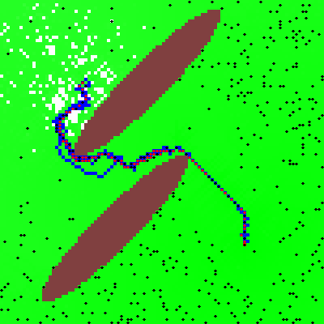
Figure 5 - Ants Locating and Bringing Home Food using Stigmergy95
We can see the mechanism in action in the previous snapshot from a computer simulation of ants foraging behaviour. Ants are represented by black points when they are not carrying food and red points when they are. Their nest is located in the lower right area. The food source is located in the upper left area and is separated by the ant nest by two obstacles, drawn in brown. We can see that there are two food carrying paths, marked in blue, a shorter one that is being used by the ants and a longer that has been abandoned and it is progressively fading.
Though this simulation model is not biologically accurate, it captures the gist of the stigmergy pattern showing how very simple agents can successfully overcome their individual sensorial and data-processing limitations and engage in large scale cooperation by transforming their environment in a powerful collective memory and computing device.
Stigmergy, as practised by social insects, has inspired a family of novel algorithms, known as Ant Colony optimisation algorithms or ACOs96 97, to solve hard combinatorial problems of great practical relevance such as optimising packet routing on the Internet. The routing problem consists in determining dynamically, as the network structure and level of congestion change continuously, the fastest route between two given network hosts. The AntNet routing algorithm uses “software ants” that cross the network, continuously updating routing tables stored on the networks hosts they traverse and using them to identify the most efficient paths.
The coordination language Linda98 supports large scale parallel processing through manipulation of a shared distributed memory (known as the tuple space) rather than by direct communication.
The collaborative Web search engine Eurekster99 uses a, very primitive, form of stigmergy whereby whenever a user selects one of the results returned by a search the rank of the selected result is increased. In time this should lead to the identification of the most useful Web resources.
Wiki sites such as Wikipedia also use stigmergy. Though Wikipedia supports direct communication across its users, most of the coordination takes place through direct modification of the encyclopedia entries.
An obvious precondition of stigmergy is a modifiable environment.
As other cooperation patterns described in this section, stigmergy is particularly useful whenever the great number of agents involved or their limited computing and communication capabilities preclude the use of direct communication.
You are driving down a country road when suddenly it starts snowing. You are unfamiliar with the road, whose features are quickly disappearing under the snow anyway. What are you to do? You spot a car at some distance in front of you. Hoping that the driver in front knows the road better than you do, you get closer and start tailgating it. Soon other cars start following you, forming a long queue of vehicles that move in unison following each other.
Tailgating consists simply in coordinating by referring to an external reference point such as:
An existing product or service. For example: a commercial software package as the Windows or Unix operating system or the Windows Office application suite or a Web search service.
A recognised standard. For example: the Web languages and protocols, HTML, HTTP, XML, etc.
A well-known conceptual model or pattern. For example: the encyclopedia, as a particularly literary form with a specific structure, style and well-understood requirements of quality and reliability.
Tailgating has been particularly relevant for open source projects that, especially in the past, have mainly consisted in re-implementations of functionality available in commercial software or in implementation of recognised standards. The most notable example being GNU/Linux, a wide ranging and successful attempt to create an open source version of the Unix system, including both its kernel as well as its hundreds of additional tools.
The advantages of tailgating for open software development are pretty evident. The hardest part of every software development project is in deciding what functionality should be implemented and how it should be broken down into a set of manageable modules. Cloning an existing product, whose design is proven and well documented, hugely reduces both the development effort and the need for explicit coordination. In the case of the GNU/Linux project, there are hundreds of teams that operate largely independently from each other as the modules that they develop interoperate through the well-known interfaces defined in the Unix standard.
Tailgating has indeed been such a prominent feature of early open source projects that some have suggested that it might be also its limit, that the open source movement might be unable to go beyond replicating existing work:
The easiest way to get coordinated behavior from a large, semi-organized mob is to point them at a known target. Having the taillights provides concreteness to a fuzzy vision. In such situations, having a taillight to follow is a proxy for having strong central leadership. Of course, once this implicit organizing principle is no longer available (once a project has achieved "parity" with the state-of-the-art), the level of management necessary to push towards new frontiers becomes massive. This is possibly the single most interesting hurdle to face the Linux community now that they've achieved parity with the state of the art in UNIX in any respects. 100
The previous quote comes from an unusual source, an internal confidential Microsoft memo on open source leaked to Eric S. Raymond, the well known open-software evangelist, that has made it publicly available on the Web together with an accompanying commentary101.
Raymond’s refutation of this particular point is quite swift:
Nonsense. In the open-source world, all it takes is one person with a good idea. Part of the point of open source is to lower the energy barriers that retard innovation. We've found by experience that the `massive management' the author extols is one of the worst of these barriers. In the open-source world, innovators get to try anything, and the only test is whether users will volunteer to experiment with the innovation and like it once they have. The Internet facilitates this process, and the cooperative conventions of the open-source community are specifically designed to promote it. The third alternative to chasing taillights or strong central leadership (and more effective than either) is an evolving creative anarchy, in which there are a thousand leaders and ten thousand followers linked by a web of peer review and subject to rapid-fire reality checks. Microsoft cannot beat this. I don't think they can even really understand it, not on a gut level. 102
Raymond is certainly right in refuting the idea that open source creativity is limited to cloning. There are by now endless examples of open software, as well as other kinds of SKAs, that are highly innovative. Tailgating, however, has historically been a very important cooperation pattern for distributed communities and it will remain so for the foreseeable future at least in the form of implementation of recognised standards.
Social knowledge communities are rarely managed by complex, multi-layered, hierarchies but they often group around an authoritative figurehead, usually the founder of the community. This can be seen clearly in the case of open source projects like the operating system Linux or the programming languages Ruby and Python or open content projects as Wikipedia. In all these cases, the founders have stayed on as “benevolent dictators”, continuing to steer the communities that have gathered around their creations103.
The advantages of benevolent dictatorship are numerous:
It solves the “design bootstrap” problem. The founder makes the essential initial choices that will guide and constrain the future development of the project. The project blueprint not only need to be inspired and consistent but it also crucially depends on value judgements that, for the subjective nature, are more easily made by a single individual or by a small, co-located, group. As Raymond puts it: “It is fairly clear that one cannot code from ground up in bazaar style. One can test, debug and improve in bazaar style, but it would be very hard to originate a project in bazaar mode” 104.
It provides continuity and consistency to the project. This is particularly important for technically demanding projects, as it is the case of many software products, or for projects built around a strong ethos like Wikipedia.
It provides a mechanism to solve internal conflicts by acting as a “judge of last resort”.
The potential disadvantage is that if the dictator turns nasty or senile the further development of the project might be endangered. In open software and open content projects, however, despotism is kept at bay by the possibility of a secession of a part of the community.
The right of secession is the ultimate guarantee against despotic power. When irresolvable conflicts emerge in a political community, separation might be the only way out. Secession, in the real world, is no easy matter and often leads to war as the holders of power are usually in a position to at least attempt to physically enforce their supremacy on the secessionists.
In the world of online communities, however, secession, or more commonly the threat of secession plays a more important role:
Dans un projet donné, il y a une grande liberté de choix entre une structure très hiérarchique et une structure très décentralisée. Ce qui compte, à ce niveau, c’est la possibilité pour toute personne de faire sécession du projet en utilisant son état actuel pour fonder un nouveau projet. Ce droit de sécession – rarement utilisé – fait que, si la hiérarchie ou la coopération décentralisée aboutissent à des orientations qui ne plaisent pas, une porte de sortie existe, moyennant un effort certes souvent important.105
The fact that in open content projects, thanks to the threat of secession, the authority of the leader depends only on his competence and continuing ability of inspiring and keeping together his community should be seen as another significant advantage of public vs. private ownership of intellectual property.
Wikipedia has known an important secession when a group of contributors to the Spanish version, reacting to what they perceived as internal censorship and the threat of commercial exploitation of Wikipedia by its original owners, decided to create their own online encyclopedia106. Following this secession, though not necessarily because of it, the legal status of Wikipedia has been clarified with the transferring of the management of the project to a not-for-profit foundation.
Benevolent Dictatorship is a form of Tailgating.
Heaven is a place where: the lovers are Italian, the cooks are French, the mechanics are German, the police are English and it is all organised by the Swiss. Hell is a place where: the lovers are Swiss, the cooks are English, the mechanics are French, the police are German, and it is all organised by the Italians. (Anonymous)
Socially optimal allocation of the factors of production of goods and services.
As the “heaven and hell” story reminds us, it is critical that human resources and tasks are correctly matched. The production of good and services relies on the ability of harnessing sufficient resources, human or otherwise. But having sufficient resources is no guarantee of success. If resources are incorrectly combined the result will be sub-optimal. The question then is: what is the allocation procedure that provides the best results? Making sure, for example, that Italians are employed as lovers rather than organisers and Germans as mechanics rather than policemen? The problem is not restricted to human resources, it applies to all resources that can be used as inputs of a production process. Consider, for example, the problem of determining if coal should be used to produce energy, as in a thermoelectric plant; or to heat houses in winter; or to produce plastics and other hydrocarbons-based chemicals.
The allocation problem is composed by two sub-problems:
On the supply side: determining the production possibility frontier, that is to say all the combinations of goods that can be efficiently produced given the available factors of production and the current state of production technology.
On the demand side: determining the social indifference map, that is to say the combinations of goods that provide the same utility to consumers.
The optimal allocation is then given by the intersection of the production possibility frontier with the indifference curve with the highest possible utility. In other terms, the allocation is optimal when the factors of productions are used in the most efficient way and they are used to produce the combination of products that maximises the benefit for the consumers.
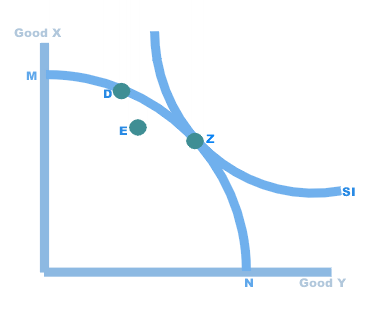
Figure 6 – Maximisation of Social Welfare 107
The diagram shows how this work for a simple economy with only two goods. Each point on the diagram corresponds to a possible combination of the two goods. MN is the production possibility frontier and SI the social indifference curve. The point E is below MN and therefore corresponds to an allocation of the factors of production that is not optimal, as it is technically possible to produce more of both goods with the same resources. D is on MN but not on the highest possible SI, indicating that, while production is efficiently done, social utility is not maximised. Z is the perfect solution to the allocation problem: at this point production is efficient and social utility is maximised.
The theory is neat and simple, the real problem is to determine a concrete mechanism to collect the necessary information and calculate the optimal allocation. The allocation problem is central to both economical theory and business practice and at least two different solutions have been devised: centralised and market allocation.
In planned or command economies, a central planning board allocates resources. In order to do so efficiently, it needs to collect detailed information about: all the available factors of production, the production function of all possible production processes and the indifference map of every consumer.
Unfortunately, the very nature of centralised organisations makes it very unlikely that they might be able to collect and process all the required information. Centralised organisations are, by necessity, hierarchical and a hierarchical organisation is like a game of Chinese Whispers where information is progressively lost and, worse, distorted when it passes from one level to the other up to the point where informed decisions might become impossible108.
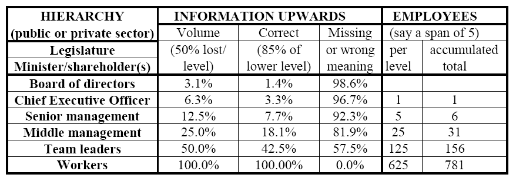
Table 2 - Loss and Distortion of Information in a Hierarchical Organisation109
The previous table illustrates the problem. If we assume that, moving from a hierarchical level to the next one up, 50% of the information is preserved and 85% of it is transmitted correctly then, in an organisation with 6 hierarchical levels, only 1.4% of the information available at the lowest level reaches the top hierarchical level.
What is more, even the modest amount of information that would be available to the central planners is unlikely to be of much use. For information to flow to the higher hierarchical levels it has to be filtered and aggregated but, as Hayek had already remarked over half a century ago, “knowledge of the particular circumstances of time and place” is necessary for the proper allocation of economic resources:
.. is knowledge of the kind which by its nature cannot enter into statistics and therefore cannot be conveyed to any central authority in statistical form. The statistics which such a central authority would have to use would have to be arrived at precisely by abstracting from minor differences between the things, by lumping together, as resources of one kind, items which differ as regards location, quality, and other particulars, in a way which may be very significant for the specific decision. It follows from this that central planning based on statistical information by its nature cannot take direct account of these circumstances of time and place and that the central planner will have to find some way or other in which the decisions depending on them can be left to the "man on the spot”. 110
The historic failure of centrally planned economies, that Hayek had so clearly foreseen, has discredited the idea of planned allocation of resources at the macro-economic level. However, explicit planning is still applied almost universally, though on a much smaller scale, in commercial companies and other formal organisations where managers, relying on their knowledge of the resources under their control and of the nature of the production process, decide how resources should be allocated111. If the products are not traded on a market as it is the case, for example, of services delivered by national health services, they also need to explicitly determine the social indifference map, making their task analogous to that of a central planner112.
In markets, allocation decisions are not centralised. Consumers individually assess what the different products on offer are worth to them, producers individually assess their production costs and the market provides a way for those exchanges that are mutually advantageous to take place.
Notwithstanding their apparent simplicity, competitive markets are the most reliable and scalable mechanism for resource allocation. It can indeed be proven that, under certain conditions, they lead to an optimal allocation of resources113. Though real markets only approximate the allocation efficiency of perfectly competitive markets, it is fair to say, paraphrasing Winston Churchill, that “market is the worst form of allocation except for all those others that have been tried”.
In real economies, markets and managed allocation are often intertwined. For example, commercial companies will get the factors of production from a competitive market, will then usually allocate them internally managerially and will then compete in a market that will direct production to its most useful uses and weed out inefficient production choices.
The two mechanisms for resource allocation that we have briefly examined are not easily applicable to the peer production model, that is adopted by most open source and open content projects. These project rely on the contribution of volunteers and produces goods that are free for everybody to use. Volunteers cannot, by definition, be coerced into working on specified projects so the planning option is not available. Market allocation will not work either, as the most important factor of production, human creativity, is not bought on the market and the final products are not for sale.
Even if planning and market allocation could be used, they would be unlikely to produce optimal results as they are not particularly effective at allocating human resources. Both the managerial and market solutions rely on a critical assumption: that the value of a resource as input for a given production process can be accurately and objectively estimated. This might be true for coal114 but is not necessarily the case for human resources, in particular when they are employed in production processes that require creativity:
Given the high variability among individuals and across time in terms of talent, experience, motivation, focus, availability, etc., human creativity is an especially difficult resource to specify for efficient contracting or management.
… human intellectual effort is highly variable and individuated. People have different innate capabilities, personal, social, and educational histories, emotional frameworks, and ongoing lived experiences. These characteristics make for immensely diverse associations with, idiosyncratic insights into, and divergent utilization of, existing information and cultural inputs at different times and in different contexts. Human creativity is therefore very difficult to standardize and specify in the contracts necessary for either market-cleared or hierarchically organized production. 115
As a concrete, if admittedly extreme, example of how hard it can be to correctly value human creativity think of Albert Einstein. As a young graduate he was not able to secure a teaching post and became a clerk at the Berne Patent Office. Who could have predicted that, just three years later, he would have had his Annus Mirabilis, during which he wrote three papers (on Brownian motion, the photoelectric effect, and special relativity), each of them worth a Nobel prize? An year later, he was still working at the Patent Office and was promoted to “technical examiner second class”116, not exactly a fair estimate of his worth. He had to wait two more years to get a modest academic position. In the next fifteen year, he would produce the general theory of relativity and Bose-Einstein statistics. He then embarked on the search for an unified field theory. As the greatest scientist of the century and the prototypical genius, nobody would have been considered more likely to reach this goal. Tragically, he died thirty years later, his quest unfulfilled. To summarise: if you had bet on his future achievements, based on the value that had been assigned to him in the different phases of his life, you would have certainly lost your house.
Markets and well-designed organisational hierarchical organisations share one common trait: they are both applications of the principle of subsidiarity117.
The principle states that, in a hierarchical organisation, each level of the hierarchy should perform only those functions that cannot be efficiently performed at a lower hierarchical level. It was introduced in economical and political theory by Catholic social teaching, as a part of an attempt to define a third way between unbridled capitalism and communism.
The principle of subsidiarity underlies many important political and economical institutions. It is a fundamental principle of the European Union, limiting the scope of concerted EU action only to those matters that cannot be satisfactorily tackled at the national level. It appears in modern macro-economic management, where governments and central banks control some of the basic economic parameters such as the interest rate and taxation, but otherwise do not directly intervene in the daily running of the economy. It also plays a role in modern manufacturing systems as in the famous Toyota Production System118, where every worker has the authority of stopping the production line if he detects an anomaly and where many productivity gains arise from localised improvements, and in recent developments in organisational theory119.
Subsidiarity has both informational and motivational advantages. By delegating the responsibility to take a decision to the lower organisational level that can do so sensibly, it minimises the need for information to travel through the hierarchy, so reducing information loss. It also increases commitment as decisions are taken by the same persons that have to carry them out or, at least, as close as possible to them.
The principle of subsidiarity plays a key role in many open content system. In Wikis, most functions that in traditional publishing companies would be subject to strict managerial supervision, such as authoring content and protecting the system against malicious attacks, are largely delegated to the users themselves. Wiki’s administrators manage by exception, stepping in only in the most extreme circumstances.
We will now examine two simple patterns, based on the principle of subsidiarity, that help peer production to operate efficiently in absence of managed or market allocation. One, self-allocation, operates on the supply side guaranteeing an efficient allocation of human resources. The other, prosumer, operates on the supply side, directing production where it matters.
Self-allocation, or self-identification to use Benkler’s terminology, is the process by which workers, and in particular creative workers, choose on their own what tasks to work on. This is the usual way in which open content projects get staffed, people will simply join the projects that they prefer. Self-allocation exploits an unique advantage of human resources: while coal can only be traded or allocated by officials and managers, humans can decide for themselves what is the most productive usage of their time.
Self-allocation leads to an optimal allocation of creative resources. It does so by aligning skills and motivations with the specific nature of the tasks at hand. Consider the case of a software developer that joins a team working on an open source program. The enjoyment that he can get from this activity will be largely dependent on how passionate he is about the program and on how well his technical skills match the software requirements. If he is motivated but incompetent, or competent but uninterested, it is unlikely that he will get anything valuable out of this activity and he will eventually quit. Also, if another open source project, that provides an even better match for his personal aims and skills, appears, he is free to switch. In time, therefore, only those that are both motivated and competent, and whose skills cannot be better used elsewhere, will tend to stick with a given project.
As the best information available about the motivations and skills of individuals is the one hold by the individuals themselves, self-allocation can be more efficient than managerial or marker allocation. Benkler sees it as strategic advantage of peer production over management and market-driven models of production:
I suggest that the primary source of gains — which may be called information gains — that peer production offers is its capacity to collect and process information about human capital. 120
Self-allocation is not limited to non-commercial projects. Some commercial firms encourage their employees to spend a percentage of their time to work on their own projects, therefore practicing a sort of in-house self-allocation. In the case of Google’s engineers, this is a sizable 20% of their work time. Apparently some of the most innovative Google services have been started this way121, a further indication of the benefits of self-allocation. However, in-house self-allocation might not be as efficient as the peer production version, as the pool of available resources and tasks will be smaller.
While self-allocation might be the best way of allocating creative resources, there is no guarantee that it will always produce correct results. Self-delusion is not uncommon, people can be over-optimistic about both their skills and the time and energy that they can afford to allocate to a certain task. Self allocation is also highly prone to manipulation, fake or malevolent contributions are a constant threat.
The solution is to “embed” self-allocation in a system of external checks. These can be ‘market-like’, as in the cooperative news site Slashdot where everybody can propose a news item but the value of the contributions is then assessed by the other users through a sophisticated reputation system. Or they can be ‘managerial’ in nature, as in most open source projects where new contributors are allowed access to the common source repository only after having demonstrated their competence and motivation, for example by providing patches or extension to the software, and can have their privileges revoked at any time by the project administrators.
As previously mentioned, self allocation works on the supply side, determining what is the most efficient combination of resources to produce something, but not on the demand side, to determine what should be produced and in what quantity. In other words: it guarantees that the people who are best suited to work on a certain project will do so; it does not, however, guarantee that, from a social welfare point of view, the amount of effort invested in the project will be optimal. Imagine a group of brilliant software developers with a mathematical inclination that come together to write a program to calculate a very large prime number. Though this might be a lot of fun for them and their skills might be perfectly suited to the task, that does not imply that this is time well spent. Unless the developers preferences reflect those of the larger public, the time that they will dedicate to a task might bear no relationship to the social utility of the resulting product.
Therefore, to provide a complete allocation solution, self-allocation needs to be coupled with a demand-side allocation mechanism. A solution is for the production outputs to be traded on the market, as market demand will provide the necessary information on the output desirability. Another solution is the prosumer pattern.
The prosumer122 pattern consists in abolishing, or at least reducing as far as possible, the separation between producers and consumers. Prosumers are consumers that steer the process of production directly, rather than through the intermediation of a market, by either being producers themselves or by influencing the producers activities.
As customers influence the production process, they can lead it in the direction that will provide more utility for them. A classical example is that of a wealthy person who can get a personal architect to design a house that perfectly matches his tastes.
The pattern is of great relevance to open content projects. In the case of a Wiki, where everybody is both a reader and an author, the amount of work spent working on an entry will be proportional to the number of readers-authors that access the entry and to the importance that they assign to the subject. In other terms, the amount of effort invested in every entry will be proportional to its social utility. In the case of open source projects that produce tools for programmers, the developing team (or rather the user-developers team123) will closely match the profile of the customer base and it is likely to create a high quality and useful product. Not so if the project produces software meant for the general public. Indeed, the most common complain about open source software is its low usability124 125.
Customers participation do not need to be explicit or even conscious. Consider the case of search engines like Google, that order Web resources by relevance on the base of an analysis of the Web page contents and the distribution of Web links. Web pages and links have been created by a very large number of authors, that in aggregate are likely to reflect rather closely the preferences of the whole online community. As Google rankings are based on this information, in them we see the reflection of our own collective mind.
The prosumer pattern appears prominently also in commercial production. Marketing is largely about figuring out what customers want, and how badly they want it, before the product appears on the market or it is even designed. Multiplying the customisations options available for products has the same function.
When consumers become prosumers, they obviously greatly increase the number of producers. This amplifies the effect of what Benkler sees as the other major advantage of peer production, the allocation gain that derives from access to a wider array of factors of production:
Peer production has an advantage over firms and markets because it allows larger groups of individuals to scour larger groups of resources in search of materials, projects, collaborations, and combinations than is possible for firms or individuals who function in markets. Transaction costs associated with property and contract limit the access of people to each other, to resources, and to projects when production is organized on a market or firm model, but not when it is organized on a peer production model. Because fit of people to projects and to each other is variable, there are increasing returns to the scale of the number of people, resources, and projects capable of being combined. 126
The pattern can realise its full potential only in cases where there isn’t a strong asymmetry of information between producers and consumers or, in other terms, in those cases where the consumers, or a significant sample of customers, have the know-how to participate to the production process.
Knowledge generation is the process by which new knowledge is created. Knowledge collection the one by which distributed knowledge is collected in order to be made available as an integrated whole. The patterns in this section can be used to foster both so we won’t explore in detail the differences between the two processes.
There are two main factors that affect the efficiency of the knowledge generation/collection process:
How extensive, varied and independent are the sources of knowledge, be them human beings or knowledge bases (see Out of Mediocrity Excellence and Converting Latent to Formalised Knowledge).
The surplus generated by providing information, that is to say the difference between the benefits and costs of information provision (see Modularisation).
When the World Wide Web started its explosive expansion people soon realized that it would have been impossible to keep track of the growing quantity of content made available by the new medium. Early Web surfers, therefore, greeted with relief and enthusiasm the appearance of Yahoo, the first professional directory of Web resources. For a while, Yahoo was the unofficial gateway to the Web.
While human-edited directories still play an important role in providing access to Web resources they have been replaced by search engines such as Google as the preferred information-finding tool. 127
At first glance, this might seem rather surprising. The entries in the Yahoo directory are high-quality material, carefully hand-picked by experienced evaluators. Search engine like Google, on the contrary, rely on automatic ranking algorithms to separate the wheat from the chaff of the Web. Certainly, automatic page ranking algorithms, for all their sophistication, are less precise of a human expert.
To understand what is going on, it is useful to shift our attention to the more familiar world of physical, rather than virtual, resources. Many important physical resources (e.g. precious metals or oil) are normally found in deposits at very different degrees of purity. Take gold, for example. Small quantities of gold can be found in almost pure form as gold nuggets. A much greater quantity of gold, though, is stored in gold ore where the concentration of the precious metal is barely between 1 and 5 parts per million. This concentration is so low that you could walk through a whole gold mine and never be able to see, with your naked eye, a single speck of the metal. Even greater quantities of gold are dissolved in sea water at concentrations of a few parts per billion. A similar situation holds for oil. According to current estimates, around two thirds of known reserves are in low-grade tar sands rather than in high-grade oil fields. The underlying principle seems to be that:
The lowest the concentration of a resource the greatest the overall quantity.
This principle has a very important practical consequence: as our technology improves and we are therefore able to exploit lower-grade deposits, the total quantity of resources available increases by leap and bounds. The importance of this fact can be hardly overstated. Human population has been growing rapidly, for a period almost exponentially, and this has been possible only because of a correspondingly fast growth in the availability of key resources. The economic history of mankind is, in fact, largely the history of our increasing ability of exploiting lower-grade resources.
Data, information and knowledge, just like precious minerals or oil, are also not distributed uniformly. A university textbook on physics is certainly a higher-grade resource of knowledge than an email exchange on Britney Spears. What applies to written records also apply to human experts. Experts are the “gold nuggets” of the knowledge world, concentrating in their brains large quantities of the precious stuff. Laymen are the low-grade gold ore.
But, does the principle that “the lowest the concentration of a resource the greatest the overall quantity” applies to knowledge? It is hard to say, as knowledge cannot be so readily measured as a physical resource. If the principle holds, we would expect 'knowledge refineries' that exploit lower-grade deposits to produce a higher output of those who rely on higher-grade sources.
This is precisely what we observe in the human-edited directory vs. automatically-build indexes battle. Both human-edited directories and search engines ultimately rely on human-created links. The difference is in the informational value of those links. The Yahoo directory is a collection of high-quality editorial links (the “gold nuggets”). Google’s PageRank algorithm128, on the contrary, operates on a much lower-grade kind of material: links found in pages all over the Web, created by all kinds of users for all kinds of purposes. What Google does is to refine this low-grade informational ore into a reliable estimate of the relevance of a Web resource. As there is much more information embedded in low-quality sources than in high-quality ones, Google is eventually able to produce a “Web Map” that is more extensive and useful than any human-edited resource could ever possibly be.
The “out of mediocrity, excellence”129 pattern therefore consists in exploiting the lowest grade but overall richest sources of knowledge. Another clear example of the pattern in action is the case of online encyclopedias, as we can see by briefly comparing the open-content Wikipedia with the Britannica. The Britannica is the prototypical high-brow professionally edited encyclopedia. Its contributors are leading authorities in their fields (Einstein and Freud have contributed articles) and their output is carefully checked by a little army of keen-eyed editors. On the contrary, everybody is welcome to edit and contribute articles on Wikipedia. The Britannica is, like an old-styled gold prospector, after gold nuggets. Wikipedia, on the contrary, is after the gold ore. It is a modern “knowledge refinery” that churns great quantities of often minor and imperfect contributions into good quality articles.
The greater efficiency of Wikipedia as a knowledge refinery with respect to the Britannica can be easily verified. In a few years and at trivial cost, the English version of Wikipedia has become by far the most extensive encyclopedia ever assembled with over 800.000 articles (an additional 1.000.000 articles are available in the Wikipedia editions in other languages) vs. the about 120.000 of the online version and the around 50.000 of the printed edition of the two hundred years old Britannica.130
Many social knowledge applications rely on automatic or semi-automatic collection and processing of information. As machines are not good at dealing with fuzzy and under-specified information, an important consideration is the degree of formalisation of the information that the SKA is called to process. From this point of view, we can split the information universe in four main sets:
Latent: information that has never been ‘written down’ in printed or electronic format, as it is the case of most of the private knowledge that humans hold about themselves and their surroundings.
Unstructured: information in electronic form, in free format, e.g. textual documents.
Structured: information whose syntactical structure is well-defined, e.g. a database table or an XML document structured according to a given DTD (Document Type Definition).
Semantic: information whose meaning is well-defined.
For the purpose of knowledge collection, these different classes of information can be ordered along two main dimensions: the total quantity of information available and the cost of converting the information to a form that can be easily machine-processed.
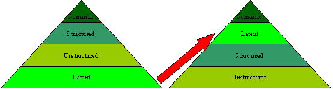
Figure 7 – Relative Abundance and Processing Cost of Information at Different Levels of Formalisation
The previous figure illustrates these two points. On the left, we have an information pyramid that represents the relative abundance of the different kinds of information. The rule is that there is a relationship of inverse proportionality between degree of formalisation and abundance. This is hardly surprising, capturing and formalising knowledge is an expensive process and therefore we would expect most information to be either latent or captured in the least formal way. On the right, we have another pyramid that shows the costs involved in processing the different kinds of information. The general rule here is that the highest the degree of formalisation, the easiest it is to process it automatically.
There is one exception, though, that it is worth noticing and that in the diagram is shown by the red arrow: there are some kinds of latent information that are quite easy to capture and convert to a form that it is suitable for processing. This specific capability of online systems to quickly capture distributed latent knowledge underlies many successful social knowledge applications. Consider for example the case of eBay, that elicits and collects knowledge about all kind of marketable goods. Most of this information is latent, private and informal knowledge hold by millions of people about the most obscure contents of their cupboards and garages. eBay can, quite easily and cheaply, capture and formalise the few properties of these goods that are required for the purpose of selling them (category, reserve price, etc.) and uses this information to build a huge online market. Another example is LinkedIn, that captures and concentrates largely latent knowledge about social networks. As latent knowledge is the most abundant form of knowledge, systems that can capture it efficiently are, potentially, the most valuable type of social knowledge applications.
Modularisation consists in breaking a task in sub-tasks that can be executed in parallel. The smallest the size of the sub-tasks, the greater the granularity of the project and the faster and easier it is to carry it out in a distributed environment.
As Benkler, among many others, has remarked, modular peer-production systems have a distinct advantage in knowledge collection:
when a project of any size is broken up into little pieces, each of which can be performed by an individual in a short amount of time, the motivation to get any given individual to contribute need only be very small. This suggests that peer production will thrive where projects have three characteristics. First, they must be modular. That is, they must be divisible into components, or modules, each of which can be produced independently of the production of the others. This enables production to be incremental and asynchronous, pooling the efforts of different people, with different capabilities, who are available at different times. Second, the granularity of the modules is important and refers to the sizes of the project’s modules. For a peer production process to pool successfully a relatively large number of contributors, the modules should be predominately fine-grained, or small in size. This allows the project to capture contributions from large numbers of contributors whose motivation levels will not sustain anything more than small efforts toward the project. Novels, for example, at least those that look like our current conception of a novel, are likely to prove resistant to peer production. In addition, a project will likely be more efficient if it can accommodate variously sized contributions. Heterogeneous granularity allow people with different levels of motivation to collaborate by making smaller- or larger-grained contributions, consistent with their levels of motivation.131
Modularity has always been a key concern in software development. Indeed, many of the major advancements in programming languages technology arise precisely from the desire of increasing software modularity. Procedural programming, object-oriented programming and aspect-oriented programming, among others, can all be seen as successive steps in the long march toward greater software modularity132. For software development, modularity has three many advantages: it speeds up development by increasing the amount of programming effort that can be applied in parallel; it simplifies the verification of the correctness of a software program, as small modules can be tested more easily; it increases the possibility of software reuse.
These advantages, already critical for large-scale commercial software development, have become salient in open source software development. Coordinating a large open source development, such as the Linux operating system, that involves thousands of geographically and organisationally distributed developers, without the support of a professional project management team would be unthinkable unless there were ways of reducing the organisational complexity. Consequently, Weber, in his analysis of the principles that underlay Open Source development, stresses the importance of modularity as a way of reducing both the technical and organisational complexity:
The key to managing the level of complexity within the software itself, is modular design…This reduces the complexity of the system overall because it limits the reverberations that might spread out from a code change. Obviously, it is a powerful way to facilitate working in parallel on many different parts of the software at once, since a programmer can control the development of a specific module of code without creating problems for other programmers working on other modules. It is notable that one of the major improvements in Linux release 2.0 was moving from a monolithic kernel to one made up on independently loadable modules. The advantage, according to Torvalds, was that "programmers could work on different modules without risk of interference … managing people and managing code led to the same design decision. To keep the number of people working on Linux coordinated, we needed something like kernel modules.133". Torvalds' implicit point is simple: these engineering principles are important because they reduce organizational demands on the social/political structure. 134
Integrate contributions from different sources in a unique coherent whole, filtering out malevolent content and sorting legitimate content according to its relevance for a given task.
Knowledge integration in a open network environment might seem an utterly hopeless task: how can a social knowledge application successfully integrate contributions that are bound to be of greatly variable quality and that will certain include a more than fair amount of frivolous or malevolent content?
What saves the day is the great amount of redundancy available in these systems. Redundant contributions can be weighed against each other or clustered, filtering out the outliers. The result, provided that certain preconditions relative to the statistical independence of the contributions and the absence of systematic biases are satisfied, can in many cases be of superior quality to the output of more traditional content producing processes that do not have access to the same variety of inputs (see Redundancy).
While traditional publishers tend to follow a carefully controlled sequential waterfall model135, SKAs contents are usually integrated continuously and asynchronously, a process fraught with pitfalls but that can lead to huge gains in productivity (see Continuous Integration).
SKAs whose contents are freely available have one additional and very significant advantage with respect to commercial content producers: unencumbered by licensing restrictions and incompatible marketing policies they can freely integrate their contents on a much larger scale creating composite informational goods of great value (see Large-Scale Aggregation).
Continuous integration is the process by which the inputs to a social knowledge application are, as soon as they are available, integrated into a coherent whole that is then immediately made available for inspection.
In open software development projects, the source code can be freely downloaded at any stage of its development and alpha and beta versions, that is to say incomplete or not fully tested early versions, are built and made available to prospective users at frequent and regular intervals, typically daily. This “Release Early, Release Often” pattern is widely considered as a key advantage of open source vs. commercial software as, by maximising users’ feedback, it leads to a faster and more responsive development process:
User-developers need to see and work with iterations of software code in order to leverage their debugging potential. Commercial software developers understand just as well as do open source developers that users are often the best testers, so the principle of release early release often makes sense in that setting as well. The countervailing force in the commercial setting are expectations: customers who are paying a great deal of money for software may not like buggy beta releases, and may like even less the process of updating or installing new releases on a frequent basis. Open source user-developers have a very different set of expectations. In this setting, bugs are more an opportunity and less a nuisance. Working with new releases is more an experiment and less a burden. The result is that open source projects typically have a feedback and update cycle that is an order of magnitude faster than commercial projects. 136
The same pattern is applied in an even more radical way in Wikis where there is usually no distinction between tentative and final versions of the contents and any modification is immediately committed and made visible to everybody. Compare this with a traditional publishing process where the full authoring, editing, publishing cycle can take – depending of the degree of formality and complexity of the publication – days, months or even years. Even longer is the time for corrections and users’ feedback to be incorporated in subsequent versions of the product. In the case of a typical printed encyclopedia, usually years if not decades.
The advantages of continuous integration need to be balanced with its costs, in particular the greater burden that the process imposes on the final user: the greatest the costs, as in the case of software products where a mistake can have very expensive consequences, the lower the frequency of the updates and the more likely that a clear separation between tested and untested versions will be enforced.
I simply hate, detest, loathe, despise, and abhor redundancy. (Oscar Wilde)
One of the greatest achievements of information theory is the discovery that outputs of arbitrarily high reliability can be obtained from elements of arbitrarily low reliability if the redundancy factor is sufficiently large137. Redundancy is defined as:
The variety in a channel that exceeds the amount of information actually transmitted.
Its most common forms: (1) repetitive transmission of the same message over one channel, (2) duplication of channels, of which each could handle the transmission by itself, (3) restrictions on the use of characters or on the combinations of characters from an alphabet to form proper words or expressions (see language), (4) communicating something already known to its addressee. In the process of communication redundancy is essential to combat noise, to assure reliability and to maintain a communication channel. English writing is estimated to be 50% redundant which accounts for the ability of native speakers to detect and correct typing errors. Parity checks, which are common in communication within computers, enhance reliability but only at the expense of using additional channel capacity. The amount of information actually transmitted is not increased by this device. Similarly, Indian governments of the Mogul period are known to have used at least 3 parallel reporting channels to survey their provinces with some degree of reliability, notwithstanding the additional efforts.138
Social knowledge applications have both the need and the means to use redundancy. The need arises from the highly variable quality of the inputs, that are often inconsistent or incorrect. The means are provided by the great quantity of inputs, vastly superior to those available to the traditional publishing industry. Redundancy is therefore the key factor that allows knowledge integration to be reliably performed in a large scale and uncertain environment.
Open software and open content applications are heavily reliant on redundancy. In open source, testing in particular relies on the “power of the sheer numbers” 139. Eric Raymond refers to this as the “Linus's Law'' (from Linus Torvald, creator of the Linux operating system): “Given enough eyeballs, all bugs are shallow … Given a large enough beta-tester and co-developer base, almost every problem will be characterized quickly and the fix obvious to someone.” 140. A similar process is at work in open content systems like Wikipedia, where poor or malicious contributions are weeded out by redundant checks performed by a multitude of readers-authors, or like Slashdot where the most relevant news are selected on the base of a joint assessment that integrates the opinions expressed by thousands of individuals.
Redundancy has also been used to create large formal semantic knowledge bases. In a recent experiment, volunteers were asked to provide statements about simple semantic relationships among everyday objects. For example, “part of” (meronymy) relationships as in “a wheel is a part of a car”. The correctness of the entries was later verified by an experts panel. As the volunteers were unaware of previous entries, many statement were entered more than once. The correctness of the entries increased with the number of redundant contributions with entries that had been entered 5 times or more being practically always correct 141.
The procedure by which reliable outputs can be produced from unreliable but redundant inputs depends on the expected distribution of the inputs.
If the inputs are expected to be identical, as in the case of the result of a mathematical calculation or the contents of a memory location in a computer, the reliable result is the one returned by the majority of inputs. Outliers, that is to say results that differ from the majority, are simply thrown away. This is what happens in fault-tolerant computing systems where every operation is performed by more than one processor. The results are then compared in order to identify and deactivate faulty computing units.
In the case of inputs that are supposed to be normally distributed and independent, as it usually the case of measurements of physical quantities, multiple results can be averaged out to produce a result that, according to the Law of large numbers142, will be progressively closer to the real value as the number of inputs increases. Outliers, that in this case would denote values that are at an excessive distance from the centre of the distribution, would also be discarded. The result of the averaging will often be closer to the true value than even the best individual assessments 143.
There are also cases where the expected distribution of inputs is bi-modal or even multi-modal. Consider for example an encyclopedic entry on a controversial political figure such as President W. Bush or Osama Bin Laden. Opinions will differ widely and it is not possible in general to establish a ‘correct’ value. In these cases, we need to break down the distribution in its components, cluster the inputs and then average out the clusters separately. Wikipedia’s neutral point of view policy144 can be conceived as a procedure to perform precisely this operation, preserving the different point of views of the main clusters of public opinion on certain subjects. Collaborative filtering systems, such as Amazon’s recommendation system, also operate on the base of this principle. They first connect the current user to a cluster of similarly minded people and then produce recommendations on the base of the cluster’s preferences.
If enough people predict something, it won't happen. (J.G. Ballard)
In information markets, traders exchange assets whose payoffs depends on the truth value of statements whose value is currently unknown but that can be ascertained at some time in the future. In simpler terms, information markets trade in predictions. Examples of predictions that have been traded on informational markets are the re-election of U.S.A president Bush, the spread of avian flu to the U.S.A and the ratification of the Iraqi constitution by referendum 145.
In the simplest kind of information market, the assets being exchanged are contracts that give their owners the right to receive a payment if a certain statement is eventually found to be true or nothing otherwise. An example would be a contract stating: “Pays €1 if Berlusconi is elected as Italian Prime Minister in 2006, nothing otherwise”.
The value of such a contract reflects the probability of the event to take place, as assessed by the market. If, for example, the contract value is €0.20 (assuming, as in previous example, a payoff of €1 in case the event takes place) the probability would be 20%. This can be readily demonstrated. Say that p is the probability that a trader assigns to the event taking place and that π is the price at which the contract is being sold. If the trader is rational, he will buy a contract only if, by doing so, he expects to realize a gain. To calculate the gain expected from buying the contract, notice that if the event takes place the trader will earn €1-π while if the event does not take place it will lose π. As he expects the event to take place with probability p, the expected gain will be:
EG = p * (1- π) - (1-p) * π
The trader will buy only if EG > 0 and therefore only if p > π:
EG > 0
p * (1- π) - (1-p) * π > 0
p – p π - π + p π > 0
p > π
The equilibrium price is therefore p = π as, if p > π the trader will keep buying contracts causing the price to rise till p = π and if p < π, he won’t buy forcing the price lower till p = π 146 147.
Information markets are a simple and efficient mechanism to aggregate dispersed and private information, hold by a great number of individuals, relative to the likelihood of some future event. The result of this aggregations are forecasts that are, on average, as good or better of those produced by any other known forecasting mechanism:
A few studies have presented field data on this question, directly comparing real world speculative markets with other real world institutions for aggregating information. For example, racetrack market odds improve on the prediction of racetrack experts ... Florida orange juice commodity futures improve on government weather forecasts. Betting markets beat major national opinion polls 451 out of 596 times in predicting U.S. presidential election results …. Finally, betting markets beat Hewlett Packard official forecasts 6 times out of 8 at predicting Hewlett Packard printer sales. 148
Information markets appear to be more efficient than other forms of information aggregation for at least three reasons: access to a wider pool of information, greater independence of judgment and a bias in favour of the most informed agents. In more detail, information markets:
Have access to a wider pool of information than most alternatives (e.g. individual experts or small teams or committees) as they are open to contributions from anyone willing to “put their money where their mouth is”. Also, as trading is anonymous, traders can use information that they would not be allowed, or willing, to openly admit to possess.
Favour independent judgement. Traders operate independently, (partially) free from the biases deriving from close interaction with others. Though markets can occasionally succumb to ‘herding behaviour’, when traders follow the market trend rather than their own judgment, this is a far more common problem in small groups where ‘group-thinking’ often prevails over independent judgment. While the utility function of an independent expert or a committee member making a forecast includes the need of defending one’s own reputation and the costs of displeasing powerful people or contradicting the opinion of the majority, traders face a much simpler dilemma: guess it right and make money or guess it wrong and lose it.
Favour the best informed traders. Given that there are monetary payoffs associated with success or failure, those that repeatedly fail to guess correctly will be progressively wiped out of the market while the most experienced and successful traders take over:
how can betting markets beat opinion polls when they use the same fallible human sources? A study of election betting markets found that traders overall suffered from standard biases such as expecting their favored candidate to win, and seeing that candidate as having won debates. “Market makers,” however, were found to be unbiased on average. These were traders who made offers that others accepted, rather than accepting offers made by others. Compared to other traders, market makers invested twice as much, traded more, earned higher returns, and made one sixth as many errors. They also tended to be more highly educated, and experienced at trading ... Betting markets seem to beat opinion polls and other competing institutions in part because of the disproportionate influence such markets give to more rational and informed traders. 149
As detailed in the following table, there are different types of information market contracts that can be used to estimate different kinds of probabilities and quantities.
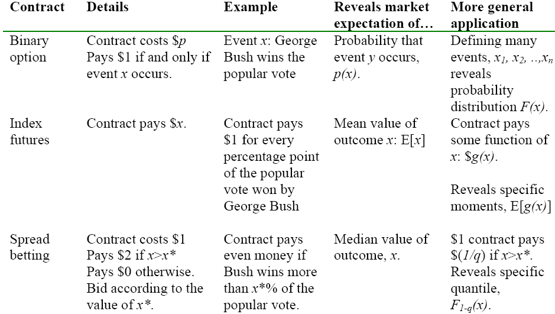
Table 3 - Contract Types: Estimating Uncertain Quantities or Probabilities 150
Information markets can also be used to estimate the value of alternative courses of actions. Consider for example the problem of determining what opposition candidate is more likely to defeat the incumbent Prime Minister. We can estimate the conditional probability of a candidate winning the election P(V|A), where V is the statement “the opposition wins the next election” and A is the statement “candidate A wins the opposition party primaries” by defining a series of contracts, one per candidate, with the following structure:
Pay €1 if candidate A wins the opposition party primaries and then wins the general election.
Return the money invested if A does not win the primaries.
Pay nothing otherwise.
The opposition party could then select the candidate that, according to the market, has the best chances of victory.151
The possibility of using information markets to assess the value of different courses of action has led the economist Robin Hanson to propose a new form of democratic government, that he has named ‘futarchy’, where citizens would be called to “vote on values but bet on beliefs”. In practice, this would mean that voters would elect public officials whose task would be to define a normative measure of social welfare (for example, the Gross National Product). It would then be left to information markets to determine what concrete policies should be adopted to maximise welfare:
Futarchy’s Basic Rule: When a valid market clearly estimates that, conditional on approving a certain valid proposed policy versus not approving it, national welfare as defined today would be higher, and if no valid market clearly vetoes this by estimating that, conditional on approving this policy versus not approving it, national welfare as defined a certain delay later (e.g., a year) would be lower, then that proposal immediately becomes law, at one level removed from this basic rule, and overrides any conflicting non-constitutional laws. 152
Information markets work because they reward accuracy with concrete monetary incentives. If these incentives are missing, we would expect both participation and accuracy to decay. A serious limitation of most current information markets is that they are restricted to operate with ‘play money’. Under the legislation of most countries, a real money information market is considered as a form of gambling and consequently subject to expensive regulations or even forbidden. Luckily, the loss of accuracy seems to be modest with some ‘play money’ markets, such as the Hollywood Stock Exchange, being demonstrably able to produce accurate predictions 153.
Information market, because of their novelty and the almost infinite number of predictions that can be potentially traded, are also more likely to suffer from lack of liquidity. Market that are illiquid have poorer performance than liquid markets and can be more easily manipulated by investors with deep pockets.
Finally, information markets are affected by the usual limits and problems of all markets such as, for example, the “long shot bias,” that is to say the tendency of over-estimating the chances of low probability events. 154
You just got a new computer and it comes with a pre-installed copy of Microsoft Windows. You happily start exploring it but you soon realise that, apart from a few simple applications like a basic word-processor, a calculator and a couple of little games there isn’t much into it. So you start scouring the Internet for applications. After reading a lot of reviews and visiting many different e-commerce Web sites you end up selecting and buying an office applications suite, a few cool games and a picture retouching application. That was definitely not cheap, in terms of time and money. Also, if you want to keep your applications up to date, you will now have to figure out the relevant policies of the different software publishers who provides your software. Some of them will ask you extra money for an update, other won’t. Some programs will happily self-update, others will require a manual procedure, possibly involving entering some obscure code printed on a manual that you would have handy, hadn’t your dog shown his enthusiasm for technical literature by chewing it to shreds.
In the meantime, your best friend has been installing the open source operating system Linux on his machine. At installation time, she is asked to select what applications she would like to use. She can choose among a few thousands development tools, games and office and home applications. In an hour or so, she installs everything she needs and then some. Not all the free applications are as good as their commercial equivalents but then they cost nothing and she didn’t have to waste days to locate them. Another advantage is that she can update all of them at a press of a button. A single, integrated, upgrade procedure works for all applications.
This little story points out one key advantage of open content, the possibility of large scale aggregation and integration. Private ownership of intellectual property is a major barrier to integration. When the barrier is removed, things get repackaged in all kind of different ways and often end up as parts of large integrated software or information bundles.
Large-scale aggregation is very appealing to customers as it dramatically reduce acquisition and maintenance costs. It is also appealing for content producers. A small application or chunk of content, that might not be particularly valuable on its own, when combined with hundreds of others can see its extrinsic value, and therefore usage, greatly increased.
Imagine being a salesman and being given the task of selling two newly invented products: sushi and the telephone. Which one is going to be the toughest sale?
Selling sushi should be a relatively straightforward business. Even people who have never seen it before would quickly agree that sushi tastes good, it is nutritious and it pleases the eye. Selling it should be mostly a matter of advertising well so that an ever increasing number of people get to appreciate its qualities.
Now, what about the telephone? Imagine approaching your first customer and explaining how, by using a telephone, he would be able to easily communicate with … ahem, whom exactly? Being your first potential customer, there is nobody else that owns a phone and therefore nobody else for him to call. At this stage, the telephone is just as useful as a brick. Sounds like a very tough sale. On the other hand, now that the telephone has been widely adopted, selling telephones does not seem to be difficult at all with hundreds of millions sold every year.
Clearly sushi and the telephone behave in a very different way. Sushi is a product that gets easily adopted and, presumably, experience steady and linear growth. The telephone, on the contrary, has a very slow take off followed by a surprisingly rapid and extensive uptake. And what it is true of the telephone applies also to many other communication technologies, including the telegraph, computers, paging systems and mobile phones and the Wold Wide Web:
In 1844, Samuel Morse couldn’t convince a skeptical US Congress to fund long distance lines, as the new communication system was seen by lawmakers more as a curiosity than as a powerful communication medium. By the time the first transatlantic cable was laid in 1858, the situation had ascended to the opposite extreme, with the press and influential figures openly declaring that the telegraph would embrace the whole world, bringing with it peace and prosperity…Thomas Watson, Sr., Chairman of IBM from 1914 to 1956, is credited with having said in 1943 that there might be a world market for around five computers. In 1960, Motorola had created a paging system that it believed was revolutionary, but it struggled for years to convince the regional phone companies to buy paging equipment as well as to convince the Federal Communications Commission (FCC) to allocate spectrum for paging networks. Motorola had the same experience with the creation of cellular networks. After successfully testing a portable cellular system in 1973, the company had to wait until 1983 for regulators to award the first cellular operator license. 155
Clearly, for a user to buy a product, it must provide some advantage. The difference between the sushi and the telephone is to be found in the way this advantage, or utility, is provided. In the case of sushi, the utility is intrinsic. Sushi literally carries its utility with it. It is valuable because of its chemical composition that makes it tasty and healthy. On the contrary, the utility of a telephone is mainly extrinsic. It is a function of the number of users reachable through it rather than of its intrinsic characteristics156 157.
To better understand these two different components of the total utility of a good, let’s start by observing that goods can often be combined with other goods to produce composite goods or services. When two telephones are connected through a telephone switchboard, they produce a valuable service that could not be produced by a telephone on its own: a communication channel. When a music CD is inserted in a CD player connected to a loudspeaker, the combination of these three elements produce a new good that could not be produced by each of these elements in isolation: loud music. Goods that can be combined to produce a composite good without additional expense are said to be compatible158 and a set of compatible goods is said to constitute a network. The elements that constitute a network, in our case economic goods, are also known as vertices or nodes.
In many networks, the nodes combine by communicating, that is to say by exchanging information. But communication is not the only way by which elements can be combined. So, for example, a set of Lego blocks is still a network, even if Lego blocks do not exchange any kind of message, because Lego blocks can be mechanically matched to create more complex shapes that have an entertainment value. Similarly, languages can be seen as networks as they are collections of elements (words) that can be combined to create valuable composites (phrases, sentences and complete texts159). They are not, however, in themselves, a communication network – even if languages are naturally essential for any form of communication – as words do not communicate with each other.
Naturally, composite goods can also enter into further combinations. If we combine multiple telephone channels we get an even more valuable good, a teleconference. If we combine loud music with a dancing floor we have a dancing party. So the economic network is actually multilayered with goods at each layer being both a combination of simpler goods and a building block for more complex goods higher up in the hierarchy.
We can now see intrinsic and extrinsic utility as products of the same combinatorial mechanism. The intrinsic utility of a good is the utility produced by the combination of lower-level goods that created the good itself. The extrinsic utility is the additional utility that can be produced by further combinations of the good with compatible goods to create higher-level goods.
The distinction between intrinsic and extrinsic utility is important because it affects how the value of a good changes in time. The intrinsic utility of a good is a fairly stable and context-independent quantity while the extrinsic utility can be dramatically affected by changes in the number and nature of compatible goods.
An extreme example of these swift variations in value is a lottery ticket. The intrinsic utility of the ticket, as a little printed piece of paper, is negligible. The ticket utility is entirely extrinsic and it is given by the possibility that the number on it might match the number extracted in the lottery in order to create a highly valuable composite good: the legal right to collect the lottery price. When the lottery is over, and therefore the ‘combinational potential’ of the ticket disappears, the ticket is left only with its insignificant intrinsic utility and probably discarded.
The role that recombination plays in creating economic value has been long recognised. Scientific and technological innovation, as well as all other forms of creativity, largely depends on the power or recombination:
… innovation in the economic system—and indeed the creation of any sort of novelty in art, science, or practical life—consists to a substantial extent of a recombination of conceptual and physical materials that were previously in existence. The vast momentum in scientific, technological, and economic progress in the modern world derives largely from the fact that each new achievement is not merely the answer to a particular problem, but also a new item in the vast storehouse of components that are available for use, in ‘new combinations,’ in the solution of other problems in the future. 160
Though the idea of the lone creative genius that produces new stunning inventions starting from first principles is romantically appealing, even the greatest inventors and scientists critically rely on their ability of recombining existing knowledge. A point that has been driven home by Andrew Hargadon161 in his analysis of Edison’s creativity, where he stresses the role of Edison as a technology broker, skilled in connecting people and ideas to create “recombinant inventions”.
Such is the importance of this process, that industrial societies have developed sophisticated systems to favour the recombination of ideas. Patents and copyright systems has been setup precisely to stimulate creativity by making inventions available for public inspection and scrutiny and for future inventors to build upon. Economist Paul Romer calls these systems meta-ideas, “ideas about how to support the production and transmission of other ideas”162, and attributes them a crucial role in economic growth.
In principle, economic networks can be quite complex, potentially involving goods of many different kinds combining in a variety of ways. Many goods, however, combine only, or mostly, with goods of the same kind. Telephones do mostly communicate with other telephones rather than with microwave ovens or umbrellas; Lego blocks are designed to combine only with other Lego blocks and so on.
If a good exclusively or preferentially combine with similar goods then its extrinsic utility will depend almost entirely on the good total consumption. Economists use the term ‘network effect’163 to refer to this relation between the level of consumption and the value that a good has for its consumers.
The strength and direction of the network effect varies widely for different goods, it can either increase or decrease the value of the good, be an irrelevant or dominant factor. Let’s see a few examples:
Let’s start with sushi. Does the utility of sushi for consumers increase if the consumption of sushi increases? Not really. If I am a sushi lover it is because I enjoy its taste, not because my neighbour eats it as well. Similarly if I am a sushi hater. The utility of sushi is a fixed quantity, it does not significantly vary depending of the total level of sushi consumption. This is the case of most of the physical goods that we utilise in our daily life.
Tickets of a lottery with fixed prices have a steeply decreasing extrinsic value. The more tickets are sold the less the chances of a ticket holder to get the price.
Human languages, on the contrary, have an increasing extrinsic value: clearly the more people know and use a language and the more useful the language becomes. This explains, for example, why there are many more people trying to learn English rather than, say, Croatian. The effort needed to learn Croatian or English, as well as their intrinsic utility as communication media, is roughly the same. The huge difference in the number of students of English language vs. students of Croatian is entirely due to the difference in its extrinsic utility: very high in the case of English and pretty low in the case of Croatian.
More complex cases are possible:
Consider what happens when the number of automobile users increases. When cars are still thin on the ground, an increase in the number of cars means greater road assistance, more refuelling points and the appearance of better roads. But when cars become widespread their utility starts to decrease. The more cars on the street and the less valuable my own car becomes as I will find increasingly difficult to drive around and find parking. Therefore, cars have an increasing extrinsic utility for low levels of consumptions and a decreasing extrinsic utility for higher levels of consumption.
Something similar happens for Prada’s handbags (or any similar high-fashion item). They are sought after not because of their intrinsic utility (any cheap handbag can carry the same amount of stuff than a Prada’s one) but because of the aura of exclusivity and wealth that they transmit. When a new fashion brand is discovered and adopted by an increasing number of cinema stars and other jet-set characters, the brand chic factor, and therefore its extrinsic utility, increases. But, as cheap imitations make these fashionable goods available to an increasing number of lower-class people, they lose exclusivity. In economic theory this is known as the snob effect: preference for an exclusive good decreases as the number of people buying it increases. So, just like cars, high-fashion items have an increasing extrinsic value for low levels of consumptions. And, as all goods that compete for access to a limited pool of compatible goods (parking space, lottery prices, association with members of the high society) they have a decreasing extrinsic utility for higher levels of consumption164.
In slightly more formal terms, the utility of any good can be expressed as its intrinsic utility multiplied by its extrinsic utility where the extrinsic utility is a function of the level of consumption of the good:
U = I * E(C)
Where:
U is the (total) utility of the good
I is the intrinsic utility of the good
C is the total consumption of the good
E is the extrinsic utility, expressed as a function of C
For many goods the level of consumption is directly proportional to the number of users and therefore the utility can also be expressed as:
U = I * E(N)
Where N is the total number of users of the good or system.
As we have seen from the examples, E(N) or E(C) can have a value:
Constant and ≈ 1, for goods such as sushi whose utility is not significantly affected by the number of people consuming them.
> 1 and increasing, for goods such as communication networks whose utility increase as the number of users increases.
< 1 and decreasing, for goods such as cars whose utility decreases with consumption.
The precise nature of the extrinsic utility function E(N) depends on the nature of the good. In the case of communication systems, such as human languages, the Web, TV, email, or the telephone, the key factor is the network typology as this is what constrains their “recombination potential”.
Communication networks can be represented as a graph composed of:
A set of nodes or vertices to represent the entities or agents that communicate using the network
A set of edges or links that represent the communication channels that connect the nodes. Communication channels can allow information to flow in only one or both directions.
In theory, there is an almost infinite number of different graphs and therefore of possible network typologies but most concrete communication networks have a regular, repetitive, structure of which there are only a few types. Some common examples of network topologies are:
One to Many (broadcasting networks: e.g. TV or radio networks)
Many to Many (Internet, e-mail, telephone)
Many to One to Many (Web search engines and portals)
We will now examine how the extrinsic utility of different networks typologies varies as a function of the number of their nodes.
A broadcasting network is composed by a limited number of emitters (broadcasters) that distribute information to a high number of receivers (users). Information flows in one direction only: from the emitters to the receivers. As broadcasting networks are, by their very nature, asymmetric we need to distinguish between the utility that the network has for the broadcasters (the emitters) and the utility that the network has for the end users (the receivers).
Let’s start to consider the network from the point of view of a broadcaster. Using the network, the broadcaster can potentially connect to any of the network users. These connections have a value as they can be either sold to the users themselves, in the form of a channel subscription fee, or to advertisers. If we assume that each user has the same value for the broadcaster, then the extrinsic utility of the network for a single broadcaster is proportional to the number of end users:
E(N) = K * N
Where:
N is the number of users
K is a constant factor that expresses the value that the broadcaster can extract from each user (by advertising, subscriptions, etc.).
Substituting in the utility expression we get that the value of the network for a broadcaster is:
U = I * K * N
Or, in words:
The utility of a broadcasting network, for a single broadcaster,
is proportional to the number of end users.
This proposition is known as Sarnoff's Law, from David Sarnoff, the legendary first General Manager of Radio Corporation of America (RCA).
Now, what happens if an additional broadcaster appears on the network? Sarnoff’s Law would still hold, the value of the network for the new broadcaster would still be proportional to the number of users, but the proportionality factor (K) would likely be lowered for both broadcasters. After all, it is unreasonable to suppose that there is no limit to the value that additional broadcasters can extract from a fixed user base. People have only so much time to dedicate to broadcasts and, even more importantly, only so much money to spend on advertised products and broadcaster’s subscription fees.
So what happens? Let us switch to the user point of view and see if that can help clarify things. Clearly, the appearance of new broadcasters does increase the value that the network has for the end user. Say, for example, that a user is interested in both sport and news but initially there are only news channels available on TV. When a new broadcaster of sport programs appears, the TV network will have more value for the user and broadcasters will consequently be able to extract more value, for example in the form of an additional subscription, than previously possible. The appearance of additional channels will not further improve the situation though, as our hypothetical user is already satisfied by the existing offering.
So, an increase in the number of broadcasters leads to an increase in the end users utility but the additional gain obtained by adding new broadcasters quickly declines. As a rule of thumb, we can suppose that the utility is proportional to log (B+1)165. The total extrinsic utility of the network for all end users then becomes:
Eusers(N,B) = Y * N * log(B+1)
Where B166 is the number of broadcasters/emitters and Y is the factor of proportionality.
As broadcasters cannot extract from the end users more value than the users attribute to their services, the total extrinsic utility of the network for all broadcasters must be less or equal than the total utility for end users, so:
Ebroadcasters(N,B) = X * N * log(B+1) where X ≤ Y.
This formula still relies on the assumption that all users are of equal value to the broadcasters. This might be true for certain purposes such as political propaganda in democratic countries, where every adult can vote, or to advertise low-cost items that are widely and uniformly consumed. Not so to advertise high-value items such as luxury cars or to sell expensive channel subscriptions that are accessible only to a minority. If we assume that the most valuable users join the network sooner and that their value decreases according to the same logarithmic function that we have previously hypothesised for the broadcasters, we get:
Ebroadcasters(N,B) ∝ log(N+1) * log(B+1)
As the total utility depends on both the number of broadcasters and the number of users, this suggests a question: what is the optimal ratio, the one that optimises the value that users or broadcasters can extract from the network? The question becomes particularly interesting if we assume that the number of broadcasters and end users are inversely correlated (so that an increase in the number of broadcasters results in less users and vice versa). This is likely to be the case as there are clearly costs associated with both starting new broadcasting channels as well as in enrolling new users. For example, a broadcasting corporation might use its budget to either start a new TV channel, radio station or Web site or to extend its chain of terrestrial repeaters so that more people can access its existing programs. The ratio between broadcasters and end users in a broadcasting network can, at least in theory, vary widely: from a network with a single broadcaster and many users (as it was often the case in the past in many countries where TV and radio broadcasting were state monopolies) to a network with many broadcasters and a single users (for which it seems harder to find concrete examples).
From the point of view of a single user, the optimal network is clearly that with the greatest number of broadcasters, though the marginal utility of adding more quickly diminishes:
Euser(B) ∝ log(B+1)
The situation is quite different, though, if we consider the social value of the network, that is to say the aggregated value of the network for all users. In this case the value is:
Eusers(N,B) = Y * N * log(B+1)
As N grows faster than log(B+1), adding new users will generally more valuable than adding new channels. So the social value will be optimised by universal access. This does not take in account the cost of adding new users (and broadcasting channels). Adding new users is likely to be increasingly more expensive, making the optimal value somewhat less than universal access.
There is therefore a conflict between the interest of the users who can already receive the broadcasts and the collective interest. So, for example, city dwellers have nothing to gain from having people in the countryside get TV reception, they would much rather see the cash spent on additional channels, while it would be socially more valuable to do precisely the opposite: bring TV to the areas that do not receive it rather than add new channels.
What is the situation from the point of view of the broadcasters? That depends on our assumptions on the marginal utility of end users. If users are all equally valuable the utility of the network for a single broadcaster and for all broadcasters, as we have seen is:
Ebroadcaster(N) ∝ N
Ebroadcasters(N,B) ∝ N * log(B+1)
In both cases, the value of the network for broadcasters increases faster by adding new users rather than new channels.
The situation changes if, on the contrary, we assume that the marginal utility of users for broadcaster diminishes, in this case we would have:
Ebroadcaster(N) ∝ log(N+1)
Ebroadcasters(N,B) ∝ log(N+1) * log(B+1)
In this case, there will be a point where adding new channels will bring more benefit than adding new users. Broadcasters will prefer to extract more value from their existing users by introducing a new thematic channel or developing a more customisable interface for their Web sites rather than investing in further expanding their user base.
In a many to many network, like for example the telephone system or e-mail, every network user can communicate with any other network user. Unlike broadcasting networks, every user is both an emitter and a receiver of information.
As shown in the following figure – that represents networks of 2, 5 and 12 nodes – the number of potential connections increases quite spectacularly when the number of nodes increases.

Figure 1 - Metcalfe's Law167
In fact, the number of possible connections is proportional to the square of the number of nodes:
C(N) = N * (N-1) ≈ N2
Where:
C is the total number of (unidirectional) connections
N is the number of users/network nodes
Assuming that all potential connections carry the same utility, the total extrinsic utility of the network for the users is also proportional to the square of the number of users:
E(N) ∝ N2
This is knows as Metcalfe’s Law, from Robert Metcalfe, the well-known American technologist and inventor of the Ethernet, who first proposed it in 1995168.
Andrew Odlyzko and Benjamin Tilly169 have recently criticised the basic assumption of the Metcalfe’s law: that all potential connections are equally valuable. They argue that, just as for any other resource, communication has a decreasing marginal utility. Adding more network end points is less and less useful as the size of the network increases. There are a number of reasons why this is likely to be the case, in both broadcasting and many-to-many networks:
More ‘objectively’ valuable network resources tend to appear sooner. Well-connected people are likely to appear online sooner than less connected ones. Similarly for broadcasting networks where major generic channels, that are of interest to most people, are likely to start broadcasting sooner than more specialised channels that cater for small minorities.
More ‘subjectively’ valuable resources also tend to appear sooner. The value that a resource (a Web site, or a person) has for a user largely depends on how closely it matches the user’s profile. If, for example, you are getting your first telephone number or Internet connection, chances are that the people that you are more likely to be interested in communicating with (people from the same background, company, geographical area, etc.) are doing the same thing at roughly the same time. People who join the network later are likely to be less closely related and therefore less valuable to you as they probably come from different countries, social classes or organisations.
The marginal utility of most resources decreases with consumption. If you are hungry, for example, a slice of bread has great utility but, as you become sated, the utility of additional slices quickly diminishes. Similarly, the first Web sites or TV channels to appear on a network provide great utility but the utility of subsequent sites and channels will be reduced as it becomes progressively difficult to provide unique content and users’ capacity to absorb and exploit information reaches its natural limits.
On the base of both theoretical and empirical observations, Odlyzko and Tilly suggests that a more accurate estimate for the total utility of a many to many network would then be:
E(N) ∝ N * log N
This is the same logarithmic correction that we have applied in the previous section to broadcasting networks170.
In the previous brief analysis of broadcasting and many-to-many networks we have made the implicit assumption that only dyadic communication channels were possible: either between a broadcaster and an end user or between two users. In principle, however, more complex combinations are possible, involving many more than two elements. In 1999, David Reed made precisely this observation, noticing that networks like the Internet are used not only to broadcast information (1-to-many networks) or for users to communicate with each other (many-to-many networks) but also to form social groups171 172:
In networks like the Internet, Group Forming Networks (GFNs) are an important additional kind of network capability. A GFN has functionality that directly enables and supports affiliations (such as interest groups, clubs, meetings, communities) among subsets of its customers. Group tools and technologies (also called community tools) such as user-defined mailing lists, chat rooms, discussion groups, buddy lists, team rooms, trading rooms, user groups, market makers, and auction hosts, all have a common theme — they allow small or large groups of network users to coalesce and to organize their communications around a common interest, issue, or goal. Sadly, the traditional telephone and broadcast/cable network frameworks provide no support for groups. What I found that's surprising and important is that GFNs create a new kind of connectivity value that scales exponentially with N. Briefly, the number of non-trivial subsets that can be formed from a set of N members is 2N-N-1, which grows as 2N. Thus, a network that supports easy group communication has a potential number of groups that can form that grows exponentially with N.
Assuming that each of these groups carries the same utility, the extrinsic utility of a network that allows for group formation will also be proportional to 2N:
E(N) ∝2N
In the literature, this is usually refereed to as Reed’s Law (as we will see in Networks Evolve from Content-Driven to Interaction-Driven to Recombination-Driven, Reed himself has a slightly different take on this).
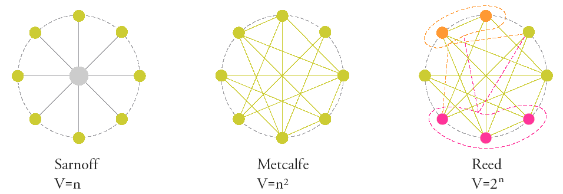
Figure 8 – Network Types and Value Laws173
While there is no doubt that recombination produces value, what is less clear, and probably very difficult to determine in general is the exact quantity of this value. In particular, it is not certain, or even likely, that, as Reed assumes, every combination has the same value.
A simple counter example comes from Modern Portfolio Theory. The theory states how rational investors can reduce investment risks by using diversification. The basic idea is that, by combining more assets, that are not perfectly correlated, it is possible to create portfolios (a weighted combination of assets) that offers the same expected return of an average share but with lower volatility. The number of possible portfolios grows very quickly with the number of assets. Actually, as you can combine assets in different proportions it grows even faster than 2N (with N being the number of assets). But what is the actual utility provided by all these possible portfolios? In this context, utility means risk reduction. The risk of a portfolio is given by its standard deviation so what we want to measure is how standard deviation decreases when more assets are combined. As we can see in the following diagram the reduction in the standard deviation that can be obtained by diversifications quickly tapers out. After 20 assets or so, further improvement is almost non-existent:
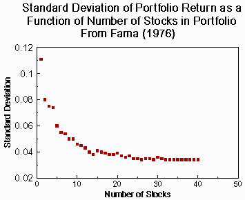
Figure 9 - Standard Deviation of Portfolio Returns as a Function of Number of Stocks in Portfolio174
So, at least in the case of portfolio design, the availability of multiple assets is certainly valuable but the utility for each investor, far from being 2N, is approximately log1.11 N, that is to say not even linear in N.
The example suggests two factors that limit the value generated by the recombination of different elements:
Input Variability: the more diverse the inputs to the recombination process, the wider the array of possibilities producible. In the portfolio case, the less stocks are correlated and the more risk can be removed by combining them.
Output Range: the value of the optimal solution of a problem is normally finite. In the portfolio return example, in the best possible case we could get a portfolio with zero risk. Whatever the number of combinations available we cannot go beyond this limit.
In itself, this example does not tell us anything about the utility generated but social groups. It is, indeed, hard to find data that might. Simple common sense observations, however, are sufficient to suggest that the growth in value cannot be as rapid as Reed expects. Let’s consider a typical social grouping such as a commercial company. Certainly having more people in a company adds value, as more ideas, more knowledge and more workforce is made available. If the value of the organisation were to grow by 2N , though, adding a new member should make the organisation twice as valuable. But would we expect, for example, the value of General Motors to double when a new worker is added to its 317.000 strong work force? Or the value of the English language to double when a new word is invented?
We can get a more reasonable estimate of the value of group-forming network if we apply the same logarithmic correction to Reed’s Law that we have used for the Metcalfe’s and Sarnoff’s laws.
Assuming that each user can group with any combination of the other N-1 users we get:
Eusers(N) ∝ N * log2(2N-1) ∝ N * (N-1) ∝ N2
When a new network good is made available it has no user base. Not having users, its utility is also very low or non existent. However, as the good has an adoption cost – that includes both its price, if any, as well as any other expense, such as training, required to integrate the product into the user’s workflow – there is no incentive for anyone to adopt it as its cost would be necessarily greater than its non existing utility. So, even if the good might be viable, in the sense that there are positive value of consumption for which it would produce both consumers and producers surpluses, the good can never reach these levels and will therefore never be produced.
The problem is represented in the following graph. The function in blue (a logistic curve) is the network value of the good. It is zero when the number of units in the network (users and/or content, depending on the nature of the network) is zero and it increases rapidly when the number of units increases till it starts reaching saturation point. The region in red is the one for which the good’s value is inferior to its cost and therefore consumption will not take place. The system has two attractors: zero and its saturation point. When the system is in the red region it will tend to lose users till none is left. When on the right of it, consumption will grow till saturation. The number of users for which the system pass from one attractor to the other is the critical mass or “tipping point” of the system.
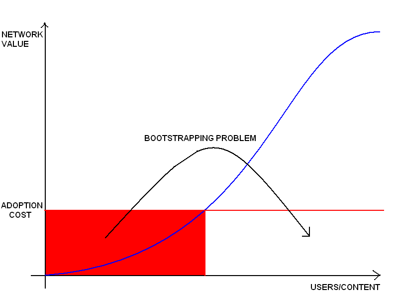
Figure 10 – The Bootstrapping Problem in Networks
The bootstrapping problem consists therefore, as indicated by the black arrow, in finding a way to ‘kick’ the system out of the red region and into the growth region.
We can examine the problem in more detail by using a slightly more formal model of the demand for network goods for many-to-many networks.175
We start by determining under what conditions a user would acquire a network good.
If users are rational, they will use the network only if the utility that they get from it, that we will indicate with Uu, is greater or equal to the cost that they have to bear to use it, that is to say the adoption cost. For simplicity we will assume that the adoption cost is equal for all users and we will represent it with c.
The utility Uu that a user gets from using the network depends on two factors: his capacity of extracting value from the network and the actual size of the network.
We will represent the capacity that a user has of extracting utility from the network as wu. It is reasonable to suppose that wu differs among users. For example, a flower shop owner that receives most of its orders by telephone or a person with a health condition that relies on the telephone to call the emergency services in case of a heart attack will have a greater capacity of extracting value from the telephone network than, say, a person who is deaf. The exact nature of the distribution of wu is dependent on the specific features of the network. As a first approximation, we will assume that wu is uniformly distributed in the population with the user less able to exploit the network value having wu= 0 and the most capable one having wu = 100.
We express the size of the network with a variable f that is equal to the proportion of users that have adopted the service with respect to the total population (the value of f therefore ranges from 0 to 1).
The utility of the network for user u is then given by:
Uu = wu * f
We can now define the demand curve for the network as the locus of all the points (c,f) for which there is equilibrium between price and utility:
Uu = c = wu * f
The users that will join the network first are clearly those with a higher wu. If we order the users by decreasing wu then the wu for the marginal user, that is the user with the minimum value of wu that will still join the network will be:
wu = 100 (1 – f)
We can therefore express the demand curve as:
c = wu * f = 100 (1 – f) f
The demand curve shows how the utility of the network for the marginal user, and therefore the maximum acceptable cost of the network, varies for different levels of demand. As we can see from the following diagram, as more users join the network the marginal utility increases till a maximum when half of the population uses the network and decreases afterwards as the increase in the utility of the network due to its greater popularity is overwhelmed by the reduced ability of new users to exploit its value.

Figure 11 - Demand Curve for an N to N network
If we integrate the network demand curve we can derive the network adoption curve, that describes how the network would be adopted in the ideal case of zero adoption costs.

Figure 12 - Network Adoption
We can now use the demand curve to study how the usage of the network evolves in time. First of all, we can see that, for the network to be viable, its adoption cost must be less then its maximum utility, in this example 25. Suppose now that the cost of joining the network is equal to 16. The minimum fraction of users that would give the network a marginal user utility of 16 would then be 20%, in correspondence of point C in the diagram. If the users are less than this fraction, say for example that the system is initially in position A, then the system is not in equilibrium as there are some users for which the network is less valuable than its cost. These users will drop out of the network further reducing its utility till the network has no more users. This is true for all points at the left of the intersection C between the cost and the demand curve. Therefore, C determines the critical mass of the network, that is to say the minimum usage level for which the system will be in equilibrium for a given cost. If we manage to increase the usage of the system beyond the critical mass, say to point B, we are again in a situation of disequilibrium as the utility of the network is greater than its cost. Additional users will then join the network till we reach point D, the maximum equilibrium value for the given cost (the Pareto optimal stable network size). So, for a given cost c and corresponding fc and fd, respectively critical mass and maximum usage level, the system has two attractors: (0,0) for all points with f<fc, and (fd,c) for all points with f>fc (plus an unstable equilibrium point at (fc,c) for f=fc).
So in conclusion, network goods have a bootstrapping problem as initially they lack the critical mass that is required to get them growing. Once they have reached critical mass, they will grow quickly till they reach their maximum equilibrium point. The higher the adoption cost, or the lower the capacity of the users to exploit the network value, the higher the critical mass that will be required to get the network started and the lower the final number of network users.
The bootstrapping problem plagues all networks and, as networks are everywhere, it appears in the most unlikely contexts. Have you, for instance, ever tried to learn a foreign language? And failed? A language, as we have mentioned before, is also a network. The value of a language derives from the fact that its words can be combined to form meaningful utterances. If we think of words as elements of a network we can use the previous analysis to explain why learning a new language is such a hard job and why therefore most people will fail at it (I should know, having tried, and eventually failed, to learn at least four or five different languages). Every time we learn a new word our language network increases. The value of a word depends on two factors: its capacity of being combined with other words (wu) to produce useful meanings and on how many other words we already now (f). Just as in the previous model, we can assume that we will start by learning the words with the highest recombination potential (highest wu) and that such potential progressively decreases as we move from the most common to the most specific and infrequently used words. Learning a new word has a cost (c), that we can assume to be constant. Learning a new language is therefore akin to getting a network started and is subject to the usual bootstrapping problem: given a certain average cost in adding a new word to our vocabulary, there is a critical mass of words that have to be learned before the cost of learning the language starts being paid back by the utility that we get from it. Languages are therefore not the kind of thing that you can learn just a little bit of. Learning a few words is more a pain than it is worth, in the very precise sense that the learning cost is higher than the resulting utility, and if you fail to put together the required critical mass of words your knowledge will start to unravel just like a network being fled by its users. If, on the contrary, you manage to reach the critical mass you will be in a completely different regime where learning new words is more than worth the effort. You will then continue learning till you reach your optimal equilibrium level. This final level is, again, dependent on the learning cost. So, for example, despite having spent much more time in England than in France, my French vocabulary is still more extensive than my English one as the average cost of learning new French words – that, as for my native Italian vocabulary, are mostly derived from Latin – is, for me, much lower than learning new English words, with their unfamiliar Germanic roots.
What can be done to solve the bootstrapping problem? If we look at the demand curve, we see that there are only two ways to reduce the critical mass: either decrease the adoption cost or increase the capacity of exploiting the network value. These efforts can never be totally successful, however, as costs cannot be completely eliminated and the network utility function cannot be infinitely steep. There will always be a residual critical mass that will need to be provided to get the network started. The Bootstrapping and Valorisation patterns address these issues.
One of the most striking aspects of networks is that, in many cases, there is only one of a kind. There is a single world-wide telephone network that connects all telephones in the world; there is a single e-mail system (Internet e-mail) and there is a single world-wide system to publish documents online (the World Wide Web). The functions performed by these systems could have been performed just as well by networks based on different technologies and standards. Indeed, if we look at the early stage of development of these networks we invariably find that many different alternatives where available. Eventually, however, all the alternatives disappeared and a single network was left.
This process can take place in only two ways, either networks merge, creating a greater network, or less fortunate networks disappear all together.
Let us start by One of the most evident of expect to We can observe here two phenomena; in the long run networks that provide similar or identical functions tend to merge in a single network. Examples are the telephone networks in the U.S. and e-mail systems that started as disconnected or incompatible systems and eventually merged into a single network. In the short term, however, networks often resist interconnection:
historically there have been many cases of networks that resisted interconnection for a long time. For example, a century ago in the U.S., the Bell System and the independent phone companies often competed in the same neighbourhood, with subscribers to one being unable to call subscribers to the other ... Eventually interconnection was achieved (through a combination of financial maneuvers and political pressure), but it took two decades. In the late 1980s and early 1990s, the commercial online companies such as CompuServe, Prodigy, AOL, and MCIMail, provided email to subscribers, but only within their own systems, and it was only in the mid-1990s that full interconnection was achieved. More recently yet, AOL for many years resisted interconnecting its IM system with those of its competitors, and it is only in 2004 that an agreement, at least in principle, was reached to carry this out. 176
The long term tendency of networks to interconnect and merge in bigger networks can be explained by observing that, if the utility of a network increases more than linearly with the number of users (or, in general, network elements), merging two networks will produce a new network whose utility is greater than the two separate networks. Broadcasting network when they merge do not provide a greater utility as their utility grows only linearly (or less than linearly).
In the case of N-to-N networks, such as the telephone and e-mail, if we apply Metcalfe's Law we find that by merging two networks of equal size we double the value of the networks. According to Metcalfe's Law, the value of a network with N users is N2 so the value of two separate networks with N users each would be 2*N2. If they merge, the new single network will have 2*N users and a value of (2*N) 2 = 4*N, twice the value of the separate networks.
Even if, we accept the logarithmic connection proposed by Odlyzko and Tilly 177 to Metcalfe's Law, merging networks still generate substantial value. As Odlyzko and Tilly note, however, there is an important difference: according to the Metcalfe’s law the gain from interconnection is equal for both network, independently of their relative size. On the contrary, the corrected law predicts that the interconnection gain will be greater for smaller networks so creating a conflict of interests that would inevitably slow down the interconnection process. The Odlyzko/Till Law then allows us to explain both the long term tendency to interconnect and the short term reluctance in doing so:
Let us assume that Metcalfe's Law holds, and we have two ISPs, call them A and B, with m and n customers, respectively, and that on average the customers are comparable. Then interconnection would provide each of the m customers of A with additional value n (assuming the constant of proportionality in Metcalfe's Law is 1), or a total added value of mn for all the customers of A. Similarly, each member of B would gain m in value, so all the customers of B would gain total value of nm from interconnection. Thus aggregate gains to customers of A and B would be equal, and the two ISPs should peer, if they are rational. However, the incentives are different if our nlog(n) rule for network valuation holds. In that case, each of the m customers of A would gain value log(m+n) - log(m) from interconnection, and so all the customers of A would gain in total m(log(m+n) - log(m)). On the other hand, the total gain to to customers of B would now be n(log(m+n) - log(n)). If m and n are not equal, this would no longer be the same as the total gain to customers of A. As a simple example, if m=220=1048576, and B has 8 times as many customers as B, so n=223=8388608, then (again taking logarithms to base 2) we find that interconnection would increase the value of the service to A's customers by about 3,323,907, while B's customers would gain about 1,425,434. Thus the smaller network would gain more than twice as much as the larger one. This clearly reduces the incentive for the latter to interconnect without compensation. 178
There are cases, however, where merging is not really an option. A good example are hardware architectures. Each hardware architecture can be considered as a distinct network as it sets different, and usually incompatible, rules for the interconnection of components such as CPUs, memory and storage and communication devices. Many hardware architectures, and in particular motherboard-level interconnection standards and CPUs instruction sets, cannot be easily merged or converge. And that is not for want of try, witness the countless efforts to emulate, by hardware of software means, alternative PC architectures, for example to run Windows/Intel software on Apple’s hardware or vice versa. The high cost of hardware emulation and the massive loss of efficiency of software emulation have made these attempts almost invariably unsuccessful.
Wherever merging is not possible, alternative networks will simply disappear. In the late seventies and early eighties there was a wide array of incompatible PC architectures with Apple, CP/M compatible PCs, Commodore, Atari, Radio Shack, Sinclair Research and others competing for the home and small office computing market. In 1981 the IBM PC was launched and, shortly after, the situation changed quite dramatically. While some alternatives architecture, such as the Commodore C64, managed to survive in the home PC market for another decade179, the office market was almost completely taken over by the IBM/Intel PC with the only residual exception of Apple (though this also seem to be destined to disappear by 2006, when the planned porting of Apple OS to Intel based systems is expected to be complete).
Networks have “monopolistic” tendencies because they are “increasing returns” goods. Goods have increasing returns if either their cost of production decreases or their user value increases when the production level increases. Increasing returns good have only recently appeared on the radar of economists. Brian Arthur is the economist that, in the last two decades, has more than anyone else stressed the need to develop an economic theory for increasing returns goods. According to Arthur, classical economists had focused almost exclusively on decreasing returns goods not just because most manufactured goods are of this kind but also because they have a much more predictable behaviour that was much easier to analyse formally with the mathematical tools available at the time classical economy was developed180. Increasing return goods were considered, at most, an unlikely anomaly but Arthur noticed that a whole economic sector, that of high technology, was dominated by increasing returns. He identified three reasons for that181:
High up-front costs.
Information and high-tech products have very high fixed development costs combined with modest or negligible (in the case of information goods) marginal costs of production. Therefore, average costs of production follow a downward path.
Network effects
Goods become increasing valuable as they are adopted more widely.
Customer groove-in
It is expensive to learn how to use sophisticated high-tech products (for example: a computer operating system or office automation software). Because of these high adoption costs it is difficult for a user that has opted for a product to opt out of it.
Networks share these features. Most of them are knowledge-intensive with high fixed costs of development and low marginal costs of production. They naturally exhibit networks effects. And most of them have significant customer adoption costs.
Networks have therefore strong monopolistic tendencies on both the demand and the supply side. On the demand side, as we have seen, they exhibit network effects. On the supply side, at least those networks whose components are informational, are natural monopolies182, as their production cost decreases as production output increases. What is more, their marginal manufacturing costs are essentially independent of the complexity and therefore of the user value of the produced good. This is not usually the case for the manufacturing of physical goods. Producing a Ferrari is always going to be more expensive than producing a Fiat Panda. Increased performance and sophistication does usually reflect in higher marginal costs of production. And this is naturally the reason why not everybody goes around in Ferraris or BMWs. Not so for information goods. It doesn’t cost more to produce a new copy of a New York Times article than one from a lesser newspaper or to produce a copy of the best software game rather than one of the worst. But, naturally, these goods have a very different value for their prospective users that, given the option of acquiring them at the same price, will always opt for the most valuable option. If Google, say, is even by a modest margin the best search engine and it does not cost more than its rivals, the vast majority of users will choose it, hugely amplifying the practical consequences of what might be just a minor technical advantage. Under the reasonable assumption that the quality of informational goods depends on the investment made to create them, we can say that the information economy has a built-in bias in favour of those organisations that can afford to shoulder the greatest investment in content creation.
The result of these factors is that “the winner takes all”. Increasing returns favours larger network that see their advantage with respect to smaller network magnified till the lesser alternatives become economically unviable. Therefore, for each technical function, only one network will eventually survive. Investing and therefore betting on the ultimate success of a network is definitely not for the faint of heart as the outcome is drastic: either a network is totally successful, completely filling its market niche, or is totally unsuccessful. There is no middle ground.
It is a platitude to say that the present depends on the past. The relationship between past and present, however, is far from plain. The way in which the past influence the future varies widely. We can examine this relationship more closely by considering a few examples. Take first the case of a seismograph. Earth tremors and movements are, after a little delay, converted in movements of a stylus that leaves a trace on a moving roll of paper. The stronger the movement, the greater the displacement of the stylus from its rest position. In the case of the seismograph, the final state of the system is linearly correlated with its past. Information is preserved, by looking at the trace left by the stylus we can see what happened at any moment in the past. Consider now a glass that is progressively filled with water. There are an infinite number of ways in which this process can take place. We might pour the water in the middle of the glass, or more on one side; we might fill it at a continuous rate or discontinuously. Once the glass is filled, however, the result will look pretty much the same. The system, in converging to a simple attractor state, has ‘forgotten’ much about the details of its past. It preserves the information regarding the total quantity of poured water but has forgotten about the exact sequence of “pouring events”. Consider finally the case of a stone in precarious equilibrium on top of a mountain. A minor accident happens, maybe it starts raining and a rain drop hits a stone on one side altering its equilibrium and causing it to fall in a certain direction. If the rain drop had hit the stone on a different point, the stone would have fallen in a different direction and it might have ended in a completely different place. A minor accidental variation in the past has been hugely amplified leading to completely different final state. A random fluctuation in a critical moment of the system history has given rise to a stable feature. If the fluctuation is so small to be imperceptible to an external observer, we have got what seems an effect without a cause. The system appears to have created new information from nothing.
Human history records many minor accidents that are censed having caused major events. The assassination of Franz Ferdinand, the heir to the Austro-Hungarian throne, by the Bosnian Serb student Gavrilo Princip lead to the First World War and Rosa Park's refusal to give up her bus seat to a white man lead to the Montgomery bus boycott183 and subsequently to the development of a major civil rights movements in the United States. The fact that relatively minor accidents were able to lead to much greater consequences indicates that the underlying systems were in an unstable state. The important question is if the system could have evolved in different directions. If the unstable equilibrium point was encircled by the attraction basin of a single attractor, or in other words if the system could evolve only in a single direction, the specific nature of the accident is of little consequence, only its timing has any importance. If, on the contrary, more than one outcome was possible then more of the nature of the accident is preserved in the future system state. By path dependency184, we mainly indicate this last case: systems that are, at critical junctures in their evolution, sensitive to small fluctuations that might lead to permanently and qualitatively different outcomes.
The concept of path dependency has become popular in economics in the last decade, with a number of economists suggesting that the evolution of increasing returns goods – of which, as we have seen, networks are a special case – are path dependent. This is in stark contrast with classical economy, where there is no place for path dependency. Markets of ‘traditional’ decreasing returns goods converge to equilibrium and in so doing, just as in the case of the glass being filled with water, they “forget” about the details of their past. A competitive market will eventually clear at a price given by the intersection of its supply and demand curves. The specific sequence of buying and selling acts that leads there is of no consequence.
A possible case of path dependency in increasing return goods, that is particularly relevant to networks, is that of competition among different technologies. In the words of Brian Arthur:
When two or more increasing-return technologies "compete" then, for a "market" of potential adopters, insignificant events may by chance give one of them an initial advantage in adoptions. This technology may then improve more than the others, so it may appeal to a wider proportion of potential adopters. It may therefore become further adopted and further improved. Thus it may happen that a technology that by chance gains an early lead in adoption may eventually "corner the market" of potential adopters, with the other technologies becoming locked out. Of course, under different "small events"– unexpected successes in the performance of prototypes, whims of early developers, political circumstances – a different technology might achieve sufficient adoption and improvement to come to dominate. Competitions between technologies may have multiple potential outcomes. 185
Arthur proposes a simple model that shows how technological lock-in might take place. Imagine having two technologies, A and B and two kinds of agents R and S. The gain enjoyed by an agent for choosing a technology depends on two factors:
Its own preference for the technology, with R agents’ preference for technology A being greater than their preference for technology B and inversely for agents S.
By the number of agents that have previously chosen the technology (the increasing returns effect).
This payoff structure makes so that R agents will choose technology A and S agents will choose B unless the difference in the number of adoption of the two technologies becomes too unfavourable to their preferred choice. At every time step, either an agent of type R or type S enters the market and makes its choice. The situation is represented in the following diagram where axis Y is the difference in adoption between the two technologies and axis X is the time.
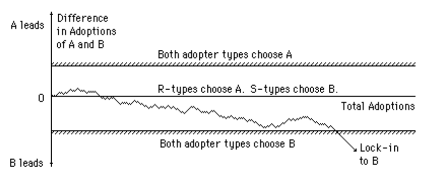
Figure 13 – Increasing Returns Adoption, Random Walk with Absorbing Barriers 186
The system evolves following a random walk that, eventually, will necessarily187 stray outside the central area where both technologies have their own supporters and in the lock-in area where both type of agents will choose a single technology.
The model shows two things: with increasing returns the only possible outcome of competition is the final triumph of one technology and that random factors, such as the particular order in which agents with different preferences make their entry in the market, can sway the outcome. What is worrying in this scenario is that, if the choice is due to purely random factors, there is no guarantee that it will be the correct one. If the internal logic of increasing returns goods lead to the possible demise of preferable but less sponsored or simply unlucky technologies we have a market failure in allocating resources in the best possible way:
The usual policy of letting the superior technology reveal itself in the outcome that dominates is appropriate in the constant and diminishing returns cases. But in the increasing returns case, laissez-faire gives no guarantee that the "superior" technology (in the long-run sense) will be the one that survives. 188
The fact that an inferior technology prevails, however, it is not in itself proof that path dependency has lead to an economically inefficient outcome. As Liebowitz and Margolis have observed, we can really talk of economic inefficiency only if the outcome is both inferior and “remediable” in the sense that, at the time their choice were made, the observers had a way of recognizing what the best outcome would have been and the possibility of acting on the base of that information. Following this observation, Liebowitz and Margolis have distinguished three degrees of path dependence:
There are three possible efficiency outcomes where a dynamic process exhibits sensitive dependence on initial conditions. First, this sensitivity might do no harm. That is to say, initial actions, perhaps insignificant ones, do put us on a path that cannot be left without some cost, but that path happens to be optimal (although not necessarily uniquely optimal). For example, a capricious decision to part one's hair on the left may lead to a lifetime of left-side parting, but the initial urge to part on the left might capture all there is to be taken into account … We will call instances in which sensitivity to starting points exists, but with no implied inefficiency first-degree path dependence. Where information is imperfect, a second possibility arises. Where this is the case, it is possible that efficient decisions may not always appear to be efficient in retrospect. Here the inferiority of a chosen path is unknowable at the time a choice was made, but we later recognize that some alternative path would have yielded greater wealth. In such a situation, which we will call second-degree path dependence, sensitive dependence on initial conditions leads to outcomes that are regrettable and costly to change. They are not, however, inefficient in any meaningful sense, given the assumed limitations on knowledge. Related to this second type of path dependence is third-degree path dependence. In third-degree path dependence, sensitive dependence on initial conditions leads to an outcome that is inefficient – but in this case the outcome is also "remediable." That is, there exists or existed some feasible arrangement for recognizing and achieving a preferred outcome, but that outcome is not obtained. 189
Is there any empirical evidence of ‘strong’ third-degree path dependence that has actually lead to persistently inferior technological choices? Arthur and other authors have cited examples of products that have become de facto standards even if they were considered technically inferior to other options that they have managed to obliterate. Some of the most commonly cited are the VHS video-recording standard (considered technically inferior to Sony’s Betamax) and the QWERTY keyboard (considered inferior to the Dvorak keyboard). These cases, are, however, hotly disputed 190. The technical superiority of Betamax, for example, is disputed as, while it was well regarded for its better reproduction quality, it had shorter registration times that made it less suitable for TV programs recording. More importantly, technical features are only one of the components of the user value of a product. Usability, availability and price being other obviously important aspects 191.
Even if actual examples of path dependence are not forthcoming, it is easy to imagine cases in which it might happen. Consider a slightly idealised example, based on an actual case: the adoption of Microsoft’s Disk Operating System as the default PC operating system. When the IBM PC was released three operating systems where available, Microsoft’s MS-DOS, the UCSD’s p-System and CP/M-86. Consider now the decision that end users and software companies were facing at the time. We can model this as a game between each agent and the market as a whole where there are three optimal choices (Nash equilibria) corresponding to the agent making the same choice as the market. But how would the agents know what the market choice would be? The agents might have looked at the intrinsic value of the available choices and they might have agreed, in their majority, that one of the option was technically preferable. Most likely this would have been CP/M-86, a derivation of CP/M, a mature and well regarded operating system. Unfortunately, technical brilliance was not the only consideration. They also had to take in account the extrinsic value of the available options. In other terms, they had to estimate which option was most likely to be successful and would therefore have enjoyed the advantages of greater software availability and a larger user base. Now, Microsoft’s DOS was promoted by IBM as the default choice, with the others available as an extra-cost option. The initial decision of IBM to put its weight behind one of these options altered the situation. Everybody knew that everybody would eventually have gone for the most popular option and everybody thought that, given IBM support, the option most likely to be would have been MS-DOS. So, though on purely technical grounds, most people might have preferred CP/M, the less intrinsically valuable MS-DOS ended to prevail. In itself, this is just a coordination failure, but, if we add to this that, as it was suggested at the time, the choice of IBM to back up Microsoft was quite accidental192, we then might have an example of third-degree path dependence.
There are two important factors, however, that significantly reduce the practical importance of lock-in by path-dependence. First of all, even in Arthur’s model of technology choice, the best technology is still more likely to succeed. If the agents’ initial preference for one of the technologies is greater than for the alternative, the difference in adoption between the two technologies that is required to make the less preferred technology the best choice will be greater than the corresponding difference required for the preferred technology. Given that the probability of a random walk to cover a given distance is proportional to the square root of the number of time steps, even a modest difference in relative preference would significantly boost the chances of the random walk to lead to the correct choice. Secondly, technologies are not static, they evolve and improve – indeed Arthur stresses that this is one of the main reasons that they display increasing returns – and in their progress initial differences are likely to be overcome. This is especially true for software technologies whose potential for improvement is essentially unbound. As an example, the, originally much derided, MS-DOS has evolved into a line of very sophisticated operating systems that offer all the features of, previously superior, alternatives. So, in the long run, even an initial incorrect choice can be of no major consequence.
In conclusions, there are some theoretical reasons that lead to believe that path dependence might play a role in increasing returns goods, and therefore in network, adoption. The practical importance of random fluctuations in determining technology lock-in and other persistent features is much harder to ascertain and is probably rather modest and overshadowed by more substantive elements such as time-to-market, adoption costs and availability of start-up capital to promote and ‘seed’ the network.
The evolution of networks is tumultuous and notoriously hard to predict. What is more, there seem to be a systematic bias in the forecasts of network’s evolution. Sawhney et al., in their analysis of historical patters of networks’ evolution and adoption, refers to this phenomenon as the “Swinging Pendulum of Forecasts”:
Forecasts of adoption rates of new network technologies are overly pessimistic in the embryonic stage of network evolution, but become overly optimistic as network adoption begins to take off. 193
There are many examples of initial pessimistic assessment of the potential of network technologies. Indeed, most of the network technologies that we now take for granted were initially regarded with a mighty scepticism:
In 1844, Samuel Morse couldn’t convince a skeptical US Congress to fund long distance lines, as the new communication system was seen by lawmakers more as a curiosity than as a powerful communication medium. …Thomas Watson, Sr., Chairman of IBM from 1914 to 1956, is credited with having said in 1943 that there might be a world market for around five computers194. In 1960, Motorola had created a paging system that it believed was revolutionary, but it struggled for years to convince the regional phone companies to buy paging equipment as well as to convince the Federal Communications Commission (FCC) to allocate spectrum for paging networks. Motorola had the same experience with the creation of cellular networks. After successfully testing a portable cellular system in 1973, the company had to wait until 1983 for regulators to award the first cellular operator license. 195
It is not just external observers, that might be excused for not fully understanding radically new technologies, but sometime also the very inventors and key companies that create and commercialise network technologies that fail to appreciate their full potential. An interesting example is that of the long distance telephone system. An idea of Theodore Vail, the first General Manager of the Bell Company, that was met with widespread hostility inside his own company, the very same company that had invented and successfully commercialised the telephone as a revolutionary medium for short-distance, city-wide, communication:
In 1879 Vail said, in a letter written to one of his captains: "Tell our agents that we have a proposition on foot to connect the different cities for the purpose of personal communication, and in other ways to organize a GRAND TELEPHONIC SYSTEM."… He resolved to build a line from Boston to Providence, and was so stubbornly bent upon doing this that when the Bell Company refused to act, he picked up the risk and set off with it alone. He organized a company of well known Rhode Islanders–nicknamed the "Governors' Company"–and built the line. It was a failure at first, and went by the name of "Vail's Folly.".. [eventually] the Bell Company came over to Vail's point of view, bought his new line, and launched out upon what seemed to be the foolhardy enterprise of stringing a double wire from Boston to New York…There was much opposition to such extravagance, and much ridicule. "I wouldn't take that line as a gift," said one of the Bell Company's officials. 196
And it was not just a few short-sighted company officials that got it wrong. Vail himself, though well beyond his time in proposing the creation of a long-distance telephonic network, could not foresee what we now take for granted: direct home-to-home long distance phone connections. To foster the development of long distance telephony, Vail created the American Telephone and Telegraph Corporation (AT&T) company. His plan for AT&T seems to have been modelled around the only existing long-distance communication network of the time, the telegraph. Vail seems to have failed to appreciate, at least initially, that the telephone, being much easier to operate than the telegraph (who required specialist training) could become a much more widespread form of long distance communication:
Here are, in its own words, the marching orders of this Company [ATT]: "To connect one or more points in each and every city, town, or place an the State of New York, with one or more points in each and every other city, town, or place in said State, and in each and every other of the United States, and in Canada, and Mexico; and each and every of said cities, towns, and places is to be connected with each and every other city, town, or place in said States and countries, and also by cable and other appropriate means with the rest of the known world." 197
Initial pessimism on the prospects of network technologies is then often followed by wild optimism:
once the network technology begins to take off, expectations of its adoption rate quickly become too optimistic. Consider what happened to videotext, an early computer service for online shopping and banking. In 1983, only after a few thousands videotext terminals had been installed, some forecasters were predicting that there would be 1.9 million videotext users by 1988. One year later, in 1984, the forecast was adjusted downward to 95,000 users, only 5 percent of the earlier estimate! …. The average forecast for 2000 Internet advertising revenues across five analysis firms was $3.6 billion … The actual amount spent on online advertising in 2000 was $8.1 billion, which was more than double the average forecast for 2000. The ratio of actual Internet advertising revenues to predicted revenues grew steadily from 5% in 1996 to a whopping 225% in 2000. But by 2000, Internet hype had reached a crescendo, and the forecasters had changed their tune. The forecasts made in 2000 started to look highly optimistic, with the average estimate of 2003 Internet advertising revenues across two forecasts climbing to a whopping $24.85 billion. The actual 2003 revenues were a mere $7.3 billion, almost a third of the estimate! The forecasts became increasingly optimistic over time, with the ratio of actual to predicted revenues falling steadily from 107% in 2000 to 39% in 2003. This is a clear illustration of the “swinging pendulum” of forecasts - irrational pessimism in the early stages of evolution (1996) giving way to irrational exuberance in later stages (by 2000). 198
Sawhney et al. propose two different explanations for this forecasting bias. The first applies only to the excessive optimism phase: forecasters, dazzled by the initial success of network technologies, fail to realise that before they can reach their full potential they need a series of parallel advancement in other sectors. If these are not forthcoming, the development of the new network will be slowed down invalidating the optimistic forecasts. For example, railways, given the unprecedented geographical extension of their assets and the distributed nature of their organisations, required major managerial and technological advancements. One of these advancements was the electrical telegraph, a network technology that appeared only 20 years after the railway. The telegraph was immediately adopted by the railway operators, the first commercial telegraph line was located along a tract of the U.K. Great Western Railway in 1839199, as it provided a critical, and until then missing, managerial function: instant and long-distance tracking and control of railways’ assets.
The second explanation (cited by Sawhney et al. as originally proposed by Richard Foster and Sarah Kaplan200) is more general as it explains both the initial pessimistic assessment and the following optimistic ones. It points to a different kind of cognitive limitation of humans forecasters, and in particular the fact that we tend to “extrapolate the future as a linear extension of the past”. Our preference for linear projection might be justified on the base of its inherent simplicity as well as on account of the fact that this is how the “normal” non-network goods, that we have been dealing with for most of our history, evolve. Unfortunately, as we can see in the following diagram, it does not work for network goods.
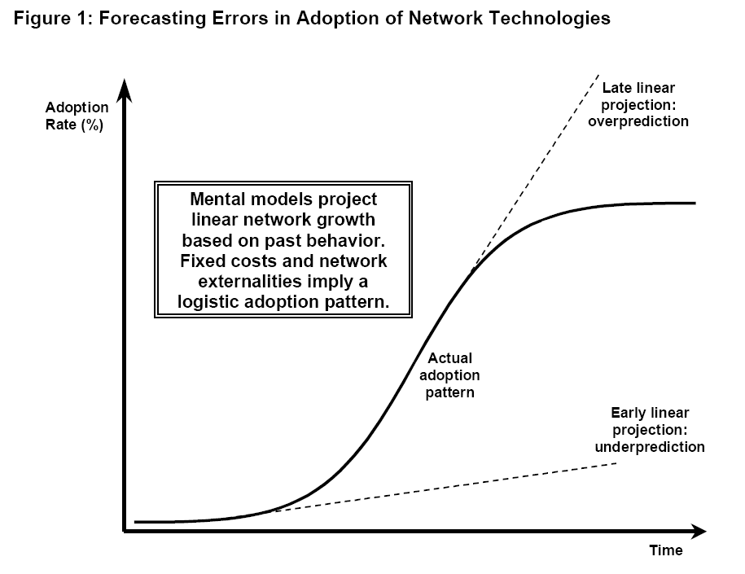
Figure 14 - Forecasting Errors in Adoption of Network Technologies201
As the adoption curve of a network good is a logistic, applying a linear approximation leads to under prediction in the early phases of development, when the uptake of the network is slowed down by the lack of consumption, and over prediction in the later exponential growth phase, as it does not take into account the inevitable slowdown as the network approaches saturation.
Observer’s biases and cognitive limitations are not the only possible cause of incorrect forecasts. Network systems can be, in some circumstances, inherently unpredictable. Networks, as many other dynamic non-linear systems, can be highly sensitive to initial conditions. High sensitivity means that the system, starting from two different but very close, up to the point of being undistinguishable, initial states can evolve in very different ways. As it is impossible to measure with absolute precision the state of a system, the long-term behaviour of systems that are highly sensitive to initial conditions can be unpredictable. When a N-to-N network is in proximity of its critical mass (see Networks Have a Bootstrapping Problem), accidental factors and small random fluctuations, that cannot be forecast or measured, might push the system either toward success or extinction. A similar problem arises when there are two or more competing networks (see Network Evolution is Path Dependent). If the networks have similar market shares (or, more precisely, similar extrinsic value), it might be impossible to predict which network will eventually prevail. The system constituted by all the competing networks is very sensitive to initial conditions as small random fluctuations in the networks relative market shares get quickly amplified, with the more popular network growing faster than the others.
Whatever their cause, forecasting errors regarding the adoption of network technologies are a cause of serious concern, as they lead to poor investment decisions. Resources are allocated by markets or private investors on the base of the expected future stream of revenue of different investment options. If the future prospects of network goods are initially under predicted this leads to underinvestment. This is particularly problematic for budding networks as, not only it slows down their adoption, but it might also prove lethal. Networks, by their very nature, have a bootstrapping problem that can be overcome only by an initial investment. Underinvestment in the initial stage compounds this problem and make it harder for the network to reach the critical mass of users that it needs to survive. At a later stage, irrational optimism leads to overinvestment and consequent investors’ losses as we have seen in the recent Internet boom and bust cycle that came to an abrupt end on March 2000202.
In the previous sections, we have examined some of the surprising aspects of network goods economic behaviour and noticed how, under some conditions, they might lead to economically inefficient outcomes. Given the growing importance that network goods have in our economy this is a critical and widely debated issue. In this section we analyze in more detail the origin of these inefficiencies and examine some of the possible solutions.
As we have seen, the key feature of network goods, from an economic point of view, is that a significant part of their utility does not derive by their intrinsic characteristics but rather from the fact that the elements that compose them can be recombined, by communication or other means, to create valuable composite goods and services. We have therefore distinguished between intrinsic and extrinsic utility and seen how extrinsic utility grows with the size of the network in different kinds of network topologies.
Utility, however, is only a part of the picture. What economic agents are really concerned about is surplus, that is to say the gain that they can make by engaging in a given economic transaction. Clearly, for a transaction to take place at all, we need to have at least two agents: one that produces a good and another who consumes it. Consequently, we have two forms of surplus: producer surplus and consumer surplus. Producer surplus is the difference between the market price of a good and the cost of producing it. Consumer surplus is the difference between the utility that the good has for a consumer, or in other terms the maximum price that the consumer would be willing to pay for it, and the good market price. If producers and consumers are rational, they will act in a way that maximises their respective surpluses.

Figure 15 - Supply and Demand Curves and Equilibrium Price in a Competitive Market203
If they operate in the context of a perfectly competitive free market, producers will vary their production and consumers will adjust their demand till the market reaches an equilibrium price. Consider what happens if, as shown in the previous diagram, the price is set too high, at P1, so that the quantity supplied Qs is higher than the quantity demanded Qd. To get rid of the surplus production, producers will have to reduce the price till it reaches P, where supply meets demand. Similarly, if the price were too low and therefore supply were less than demand, producers would find it advantageous to increase production till the price reaches the equilibrium price. At this price neither producers or consumers can do anything that will increase their surplus. If a producer were to produce an additional unit of the good, it would have to sell it under cost, if a consumer were to buy an additional unit of good it would have to pay more than its worth. The total surplus created is given by the area delimited by the supply and demand curves on the left of the equilibrium price. Consumers get the part that is over the price line, producers the part below. Given the social and technical constrains that determine the supply and demand curves, this is as good as it gets. The market has automatically settled in a comfortable Pareto optimal204 state, a condition where it is impossible to improve someone’s lot without making someone else worse off. Total social surplus is maximised and we say that the outcome is economically efficient.
Back now to our network goods. In a competitive market, network goods should behave just as virtuously as any other good. Regrettably, a problem arises when the extrinsic utility created by the network is not captured, the technical term is ‘internalized’, by the agents that take the decisions that affect the production or consumption of the good:
The difference between a network effect and a network externality lies in whether the impact of an additional user on other users is somehow internalized. Since the synchronization effect205 is almost always assumed to be positive in this literature, the social utility from another network user will always be greater than the private utility. If network effects are not internalized, the equilibrium network size may be smaller than is efficient. For example, if the network of telephone users were not owned, it would likely be smaller than optimal since no agent would capture the benefits that an additional member of the network would impose on other members. (Alternatively, if the network effects were negative, a congestion externality might mean that networks tend to be larger than optimal.) 206
Consider another example: the educational market. Getting an education, even a basic one, is very expensive. As for any other good, rational agents will acquire an education only if they can expect to gain more than they spend on it. Having an education, however, is an advantage not only for the educated person but also for the society at large. Educated people bring in new ideas, contribute to a more informed public opinion and in general make for a more productive society207. As not all these positive spillovers can be fully captured from the same people who have to decide if to get an education or not208, they will underinvest in education so reducing global social welfare. This is the basic reason why in most countries getting a basic education is a legal obligation. As the educational market, left to its own devices, would not provide a level of education that is socially optimal, the government steps in making education cheaper, by providing it at a subsided price, and by making truancy more expensive by imposing legal sanctions209.
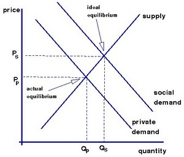
Figure 16 - Supply and Demand with Positive Externalities 210
We can see in the diagram how network externalities (in this case positive ones, but symmetrical considerations apply to the case of negative externalities) affect the market equilibrium. If customers cannot internalize the network effects, their demand curve will be lower than it would otherwise be leading to lower production and consumption. We can see how this reduces the area delimited by the supply and demand curves on the left of the equilibrium price that, as we have mentioned before, corresponds to the social surplus generated by the good.
The obvious solution to this problem is to extend, wherever possible, private ownership so that it can capture, or “internalize”, the network externalities. This is the normal case for networks that have a “physical” component, such as the telephone network. In the case of networks that have no physical incarnation, such for example a software standard for information exchange, a system of intellectual property rights can be adopted:
Where networks are owned, this (network) effect is internalized and under certain conditions the profit maximizing network size will also be socially optimal.
… networks are likely to be too small if network effects are not internalized. Intellectual property laws are one means by which such network effects can be internalized, since ownership is an ideal method of internalization. 211
And the advantages don’t stop here. Networks whose network effects are fully internalized should not only be able to reach their optimal size and be therefore socially efficient but should also enjoy a competitive advantage with respect to networks that do no enjoy the benefits of private ownership:
The possibility that networks can compete with each other suggests a further consideration regarding intellectual property law. Where one standard is owned and another is not, we can have less confidence that an unowned but superior standard will be able to prevail against an owned standard, since the owner of a standard can appropriate the benefits of internalizing any network effects. Although we do not have any evidence that inferior standards have prevailed against superior standards, this may be in large part because most standards are supported by companies who have some form of ownership such as patent, copyright, or business positioning. The greatest chance for some form of third-degree path dependence … to arise would be if an unowned standard with dispersed adherents were to engage in competition with a standard that had well defined ownership. Further research in this area is needed before any firm conclusions can be drawn, however. 212
Problem solved then? Not quite. In fact, the empirical evidence seems to point in a different direction. Let us have a quick look at the history of two of the most disruptive network technologies of the last twenty years: the World Wide Web and e-mail.
When the World Wide Web was introduced in 1991, the idea of an Internet-wide document publishing system was not completely new. In particular, there was already a system known as Gopher213, designed by the University of Minnesota, that offered functionality very similar to the Web. The system enjoyed support from a number of important companies, including IBM that had made available Gopher compatible software, and had already gained a modest but growing user base. What it is more, some users seemed to prefer it to the WWW. In the recollection of the inventor of the Web, Sir Tim Berners-Lee:
… instead of using hypertext and links, it (Gopher) presented users with menus, taking them eventually to documents normally in plain text. I had found that some people when they saw the Web, thought hypertext was confusing or worried that somehow they would get lost in hyperspace when following a link. Of course, this could happen in gopher space too, but computer users were familiar with menus so the program didn’t seem as foreign. 214
Something, however, was to change radically the balance of power in Web favour:
In was just about this time, spring 1993, that the University of Minnesota decided it would ask for a license fee from certain classes of users who wanted to use gopher … The browser, and the act of browsing, would be free, and the server software would remain free to nonprofit and educational institutions. But any other users, notably companies, would have to pay to use gopher server software. This was an act of treason in the academic community and the Internet community. Even if the university never charged anyone a dime, the fact that the school had announced it was reserving the right to charge people for the use of the gophers protocols meant it had crossed the line. To use the technology was too risky. Industry dropped gopher like a hot potato. Developers knew they couldn’t do anything that could possibly be said to be related to the gopher protocol without asking all their lawyers first about negotiating rights. Even if a company wrote its own gopher client or server, the university could later sue for infringement of some intellectual property right. 215
Instructed by the Gopher example, Tim Berners-Lee hurried into getting CERN, that owned the WWW intellectual rights, to release the Web specification and software in the public domain. The consequence was that the Web quickly overcame Gopher as the most popular Internet document publishing system and the gap between the two kept increasing steadily till Gopher was completely swept aside. Though the University of Minnesota eventually realised its mistake and released Gopher under a GPL license, the damage was done and Gopher is now just a footnote in the history of the Internet.
A similar lesson can be derived from the history of e-mail. When Internet e-mail became generally available, there were already a number of proprietary e-mail systems offered by Wang, Digital, IBM and other commercial companies. All these systems were quickly swept aside by the, supposedly weaker, “unowned standard with dispersed adherents”.
Something is clearly wrong here. Rather than directing the goose of technology to lay the correct number of golden eggs, intellectual property seems to be killing it instead. This is particularly surprising given that the whole idea behind the intellectual property (IP) system is precisely to foster innovation. To acquire a patent, inventors need to release for public inspection the inner workings of their inventions, providing inspiration and conceptual building blocks for further advancement. In exchange of this disclosure, authors and inventors get a time-limited monopoly on the commercial exploitation of their work. The legal protection of intellectual property provides an essential incentive for innovation and, consequently, it has been seen, since ancient times, as one of the major engines of economical development. The history of IP protection in Europe dates back to at least Renaissance Italy, the Republic of Venice started issuing patents in 1474, an international IP system has been in place for well over a century216 and the principle is considered so important to be enshrined in some constitutions, such as the one of the U.S.A. that assigns Congress the duty217:
To promote the Progress of Science and useful Arts, by securing for limited Times to Authors and Inventors the exclusive Right to their respective Writings and Discoveries
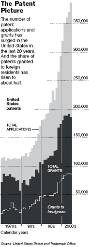
Figure 17 – Growth in U.S.A. Patents218
The importance of IP has also steadily increased with time. As we can see in the diagram, the number of patents applications in the U.S.A., as well as that of foreign patents, has been growing exponentially in recent decades and so has the income from intellectual-property:
… ideas and innovations have become the most important resource, replacing land, energy and raw materials. As much as three-quarters of the value of publicly traded companies in America comes from intangible assets, up from around 40% in the early 1980s. “The economic product of the United States”, says Alan Greenspan, the chairman of America's Federal Reserve, has become “predominantly conceptual” ... In America alone, technology licensing revenue accounts for an estimated $45 billion annually; worldwide, the figure is around $100 billion and growing fast. 219
The extension of the IP system has been fuelled by an increasingly technological and knowledge-driven economy; economic globalization, as the creation of a common framework for international commerce spearheaded by the World Trade Organisation has also lead to a parallel extension of the intellectual property rights system prevalent in the developed world to developing and ex-communist countries220; and by increasing pressure on academic institutions to become financially self-sustaining by marketing the results of their research.
The remarkable growth of the IP system has not been without its critics. The IP system has been accused of stifling innovation rather than unleashing it either because it has been applied beyond reason 221 222 or because it has lead to an extreme fragmentation of exclusion rights (in this case, intellectual property rights) to the point where the reuse of patented inventions becomes uneconomical 223 and of being a vehicle of economic exploitation that advantages the first world, that is the net beneficiary of the international IP system, to the detriment of the developing nations224.
It is not possible to do full justice to these criticism here, but there is one point that we need to examine to understand why IP protection and networks do not mix easily. The problem is that the private appropriation of intellectual property increases adoption costs:
By increasing direct acquisition cost, these are the costs to negotiate and acquire the right to use IP (licensing costs).
By increasing risk, as prospective users can find it very difficult to reliably estimate the full discounted cost of acquiring IP:
As the full extent of the IP claims might be unclear. This is apparent in the previous comments of Tim Berners-Lee regarding Gopher. Prospective adopters were uncertain if the claim of the University of Minnesota would apply just to a specific incarnation of the protocol, as in a specific set of Gopher tools, or to any possible implementation of it.
As the future cost of licensing cannot be readily forecast. This is especially important for products that are frequently upgraded like software. Anyone who has bought a commercial software library and invested a great deal of time and money to integrate it into his products just to discover that the follow-up version has gone up ten times in price will readily recognise the problem.
Even in the best of circumstances network goods have a ‘bootstrapping problem’ (see Networks Have a Bootstrapping Problem) as their value largely depends on how widely they are used and users are precisely what networks inevitably lack in their initial adoption phase. A high adoption cost is therefore a major and possibly lethal liability for network goods, as it might make it impossible for them to reach the “tipping point” where the value of the system is greater than its cost. This is indeed what seem to have happened to Gopher. The system was still in its infancy and therefore had modest extrinsic utility. The announcement of license charges made its prospective adoption cost much greater than its current value and this, coupled with the existence of a capable substitute in the form of the Web, was sufficient to seal its destiny.
If a free substitute is not available, proprietary networks can survive and reach critical mass. The problems, however, are not over. The IP system grants to the inventor a de jure monopoly and monopolies are a well-known source of economical inefficiency.
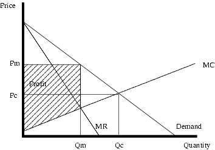
Figure 18 - Monopoly Pricing 225
The key difference between a monopolist producer and a producer in a competitive market is that a monopolist has the option of deciding at what price he will sell its goods. In order to optimise its profits, he will set the price to the point where the marginal cost (MC in the diagram) equals marginal revenue (MR in the diagram). If the demand for the good does not decline quickly when the price increases226, the price set by the monopolist will be higher than the one that the market would have reached if it had been competitive, at the intersection of the demand and marginal cost curves. The result is not only that the monopolist gains more but, more importantly, that total social welfare is diminished as the reduction in consumer surplus is greater than the increase in the producer surplus227.
Another source of inefficiency is that monopolies, in absence of credible alternatives, have little incentive to innovate. A startling example comes from the recent history of the Web. When, in 1995, Microsoft started developing Internet Explorer, its Web browser technology, it had to face strong competition by Netscape, that had made available the first industrial-strength Web browser in 1994. Eventually though, thanks to a major investment in Web technology and to the fact that Internet Explorer had become a standard component of the Windows operating system, Microsoft managed to get control of the Web browser market. In early 2002, shortly after the launch of its sixth version, the combined market penetration of all versions of Internet Explorer was over 85%228. As an increasing number of Web sites started to make use of the proprietary features of Internet Explorer, Microsoft’s control of the market grew even greater, eventually establishing a de facto monopoly. In 2002, after seven years of tumultuous development, Internet Explorer was not only by far the most popular but, arguably, the technically most advanced Web browser. After winning its battle with Netscape for the control of the Web browser market, however, the incentive for further improvements disappeared and, since 2002, Internet Explorer has not known any significant update. The appearance in late 2004 of realistic competition from the Firefox browser, seems to have awaken Microsoft from its complacency and a new release of Internet Explorer is now scheduled to appear sometime in 2006. It is hard to estimate the damage to social welfare caused by the freezing of client-side Web technology for a period of 5 years but, given the huge economic and social impact of the Web, it is likely to be substantial.
If monopolies are bad news even for normal goods, they have particularly nasty consequences when applied to network goods. Networks naturally tend to dislodge competitors and to completely fill their market niche (see One Function One Network). Private ownership of the intellectual property underlying a network therefore inevitably leads to one or a few commercial companies having full control of entire industry sectors. The profits and the commercial and political leverage that network monopolists obtain can therefore be momentous. It is not by chance if Microsoft and Intel, that jointly own the key intellectual property underlying one of the world largest networks, the personal computer, are also among the most valuable and influential commercial companies in the world.
In conclusion, private ownership of the intellectual property of networks, when it does not lead to network hara-kiri, reduces social welfare via monopolist pricing, lack of innovation and a disturbing concentration of economic power. If we remove IP from the picture, however, we are still left with our original problems: how are we going to provide the necessary incentive for inventors? And how can we make sure that networks reach their socially optimal size? Is IP, after all, a necessary evil? A mechanism to provide the necessary tradeoff between promoting inventiveness and overall economic efficiency?
To the extent that information is a public good, the efficient price for information as input is also zero. Pricing information at above this price retards new creation, as well as “consumption,” to less-than-efficient levels. The tradeoff therefore is between how much, at any given level of regulation-created exclusivity, new incentives to produce are created from the ability to charge higher prices on more uses of the information, relative to how much the cost of creating information is increased because of the expanded exclusivity. This is the basic economic tradeoff involved in designing systems of exclusivity, like copyrights and patents. 229
To find a solution, we need to look again at the differences between ordinary and network goods. Let us consider the non-network goods first. Imagine having just invented Viagra or written the first volume of the Harry Potter series. How could you profit from such a remarkable invention or literary work? The only possible answer is: by manufacturing copies of your work and selling them. And that is, naturally, where IP becomes indispensable. If there were not a system in place to give you legal protection against unauthorised copies of your invention, your profits would quickly evaporate and so would the incentive to produce similar inventions in the future.
Consider now a network good such as the Web. How could you profit from that? You could, as in the case of the non-network goods, try to profit from it directly by selling your proprietary Web software or, possibly, licences to use the Web protocols. Unfortunately, rather than making you wealthy, this approach might end up destroying your budding technology. If you somehow managed to overcome the network bootstrapping problem, things would look decidedly up for you, witness Bill Gates, but the outcome would be less than optimal for the rest of society that would have to shoulder the burden of your monopoly. There is, however, another and overall much more interesting option. Rather than profiting directly from the network intellectual property you might profit from it indirectly either by selling derived products or providing related services. This is possible because the real value of the network is not intrinsic, it does not reside in what it is, but rather in the novel combinations that it permits. So, it makes sense to remove any constrain to the network growth letting it reach its full potential, even if this means forfeiting any direct gain, and then profit from the large market for derived products and services that the network will generate. Naturally, as an inventor, you might not be able to personally capture more than a modest share of the extrinsic value created by your network. After all – apart from a knighthood, a directorship, a professorship, a number of prices, income from sales of a popular book and eternal fame – the inventor of the Web has not gained much from his remarkable achievement. But a tiny share of a very large cake is still bigger than 100% of nothing at all, as it would have been the case if the Web had gone down the Gopher way.
So, in the case of network goods, the solution to the problem of promoting innovation is quite different from the solution that is appropriate for non-network goods: open standards and indirect exploitation of the network extrinsic value vs. private ownership of the intellectual property and exploitation of the good intrinsic value.
If you look at the Web, you can see this mechanism in action, the network intellectual property is available as open standards that anyone can exploit at no charge, and on top of those standards an enormous online economy has developed. In the software industry, this approach is becoming increasingly popular and it is been codified under the name of “professional open source” business model. An increasing number of companies make available their software as open source, strive to build communities and “economical ecosystems” around their products and get their income by selling related services such as technical support, training, customisations and extensions230. Individual developers, even when they do not sell services, can also profit indirectly by open source, as participation to a successful open source project is a good way of signalling their superior technical skills to prospective employers 231.
Open standards also promote continuous innovation. On this point, it is interesting to briefly compare the evolution of two software networks: desktop PC operating systems and Java applications servers. The desktop PC market is dominated by the proprietary Microsoft’s Windows OS. Thought both cheaper options such as the Linux operating system and more user-friendly options such as the Apple Mac OS X have been available for a number of years, the massive extrinsic utility produced by the rich ecosystem that has developed around the Windows OS, combined with the proprietary nature of Windows that make its cloning impossible, has made Microsoft’s position almost unassailable. As a consequence, the pace of innovation that the vast majority of desktop users can benefit from, is dictated and limited by the commercial and technical policies of Microsoft. The Java applications server market is on the contrary, based upon open standards232. Though many major commercial software companies – such as IBM, BEA, Sun and HP – operate in this market this is not in itself a barrier for new entrants as demonstrated by the case of JBoss233, a cash-poor but technically innovative application server distributed according to an open source business model, that in a few years has gained a very significant market share. JBoss, and other small application server providers, have introduced many significant technical innovations that have been incorporated in the latest version of the Java application servers standard. The greatest openness of the Java application server market to innovation and competition is not due to the lack of network effects, that are strong, but rather on the fact that the advantages brought by these effects are shared among all the market players giving them a competitive edge with respect to providers of alternative less popular technologies, but without stifling internal competition.
In our previous analysis, we have examined some of the global properties of economic networks. We have seen how network effects influence the utility of networks and how this in turn affects the development rate of networks and their chances of survival when in competition with other networks and their economical efficiency. In this section, we will examine how network effects operated inside networks affecting their internal structure.
A network can be represented as a graph: a set of nodes (or vertices) connected by edges (or links). Now imagine starting with a set of unconnected nodes. How would you grow a network out of it? A simple way would be to pick up two nodes at random and connect them with an edge and repeat this process till we get a single connected graph. A network built this way is, unsurprisingly, known as a random network. If now we plot the distribution of the number of edges per vertex we get a binomial distribution (and eventually, if we keep adding edges, a normal distribution).
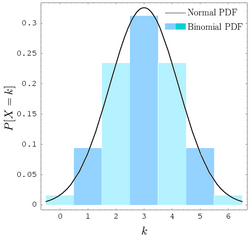
Figure 19 - Binomial and Normal Distribution234
This is what we would expect. Given that we have added edges randomly there is no special reason why a node should have many more edges than any other. The number of edges per vertex should tend to cluster closely around an average value.
Random networks are “egalitarian”, in the sense that edges are fairly distributed across nodes. Many real world networks, like the Wold Wide Web, however, are far from egalitarian resembling more a “hub and spoke” system where a few key sites (e.g. Google, Yahoo, MSN) gathers millions of links while the vast majority of Web sites languish in relative obscurity.
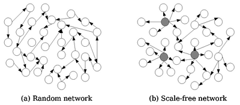
Figure 20 - Random and Scale-Free (Power-Law) Networks. 235
We can make this observation more precise by mapping the WWW into a graph, by considering every Web page as a node and a link from one page to another as an edge, and then plotting the resulting distribution of links. What we get is as far from the average-centred binomial distribution as one can possibly imagine, it is a highly skewed distribution known as a power-law distribution236.
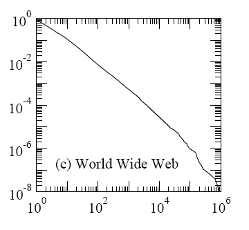
Figure 21 - Cumulative Vertex Degree Distribution for the WWW 237
The horizontal axis of the diagram is the vertex degree k, that is the number of links that point to a given WWW page. The vertical axis is the fraction of vertices that have degree greater than or equal to k. Both axes are logarithmic, making the power law distribution appear as a straight line238.
This distribution is known as a power-law distribution239 as its general formula is:
y = p xe
Where the exponent e and the constant of proportionality p are constants. In the case of the relationship between the fraction of Web pages with a certain number of inbound links and the number of links, e ≈ -2.
We can see from the diagram how rare popular sites really are, with only about 1% (10-2) of all Web pages being referred to by 100 (102) or more other pages and as little as one Web page every one hundred millions (10-8) gathering 1 million links (106).
This phenomenon is not unique to the WWW240:
… power-law degree distributions have been observed in a host of other networks, including notably other citation networks, the World Wide Web, the Internet, metabolic networks telephone call graphs, and the network of human sexual contacts241.
The normal experience of social software is failure. If you go into Yahoo groups and you map out the subscriptions, it is, unsurprisingly, a power law. There's a small number of highly populated groups, a moderate number of moderately populated groups, and this long, flat tail of failure. And the failure is inevitably more than 50% of the total mailing lists in any category.242
The power law distribution can be explained if we assume that links are not added randomly to the network nodes but rather in proportion to the number of links that the nodes already have. This way, nodes ‘rich’ in links become increasingly richer with time while the less fortunate ones grow less quickly and therefore become, comparatively, poorer. When applied to network evolution this mechanism is known as preferential attachment, a term coined by Barabási and Albert243, or as the Matthew effect, from the biblical edict: “For to every one that hath shall be given but from him that hath not, that also which he seemeth to have shall be taken away” (Matthew 25:29) 244.
Thought the preferential attachment model broadly explains the power-law distribution of Web links, it fails to account for some of its subtler features. First of all, the model predicts that there should be a strong correlation between the age of a node and its degree (the number of links). Nodes that join the network early have a head start and, given preferential attachment, their advantage should grow with time making older nodes permanently more well connected than younger ones. Empirical evidence, however, does not support this conclusion245. Secondly, the importance of preferential attachment does not appear to be the same for all types of Web sites as shown in the following diagram.
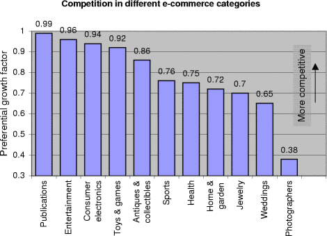
Figure 22 – Strength of Preferential Attachment for Different e-Commerce Categories246
How should the preferential attachment model be extended in order to address these limits? To answer this question, we need to take a step back and look more carefully at what factors motivate agents to add new links.
In general, rational agents will try to maximise the net gain that they derive from their actions, for example by acquiring a certain good. The user surplus, that is to say the net gain that an user derives from acquiring a certain good, is given by the difference between the good utility and cost:
S = U – C
Where S is the surplus, U is the utility and C is the cost.
We have also previously noticed that the utility of a good depends on both its intrinsic and extrinsic utilities so we have :
S = I*E-C
Where I is the intrinsic utility and E is the extrinsic utility.
How do these concepts map to a concrete network such as the Web? The intrinsic utility of a Web resource (be it a Web page or a complete Web site) depends on the quality and quantity of its informational contents (and by how well these match the informational needs of the user). The number of inbound links (links to the resource from other resources) affects the acquisition cost: the greater the number of inbound links the easier, and therefore cheaper, it is to find the resource in the first place (this applies also to resources located via search engines as those with a higher number of inbound links will, ceteris paribus, rank higher in the engine result list). The number of outbound links (links from the resource to other resources) determines the extrinsic value of the resource. A page that links to many other Web pages is more useful than one that does not. This is why search engines or Web directories are so valuable. If we use Google, it is not because of the intrinsic value of its minimalist home page but rather because it provides access to billions of other resources.
We can now point to the two key limits of the basic preferential attachment model:
It does not take in account the intrinsic utility of a Web resource.
It does not differentiate between inbound and outbound links therefore confusing two terms that play very different roles in determining user surplus (respectively, reducing cost and creating extrinsic value).
Bianconi and Barabási247 have captured the intrinsic utility aspect with an extension of the preferential attachment model where the likelihood of a node i to get an additional link is given by ηi ki where ki is the node degree and ηi is the node “fitness”, that is its intrinsic value. Pennock et al.248 have similarly expressed it as a combination of preferential and “uniform” attachment. Neither models, however, differentiate between inbound and outbound links.
The implications of power-law distributions in network are numerous and rather surprising as they mostly derive from two very peculiar, and somehow opposite, aspects of these distribution. On one side, being highly skewed, scale-free networks can be heavily influenced by what happens to just a few of their most connected vertices; and this is true also for very extensive networks such as the Internet, the Web or the network of social relationships. On the other side, power-law distributions have long ‘fat’ tails. What this means is that the cumulative weight of the less-endowed vertices can be very significant. In the following diagram we can see how the “tail”, shown in yellow, of a scale-free distribution can have an area comparable to its ‘head’.
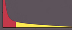
Figure 23 - Long Tails of Power Law Distributions 249
One of the critical aspects of network behaviour that is affected by the skewed nature of scale-free networks is their resistance to failures and attacks. Scale-free networks have been found to be very resilient to random failures but, at the same time, potentially very sensitive to malicious attacks:
In summary, we find that scale-free networks display a surprisingly high degree of tolerance against random failures, a property not shared by their exponential counterparts (random networks). This robustness is probably the basis of the error tolerance of many complex systems, ranging from cells to distributed communication systems. It also explains why, despite frequent router problems, we rarely experience global network outages or, despite the temporary unavailability of many web pages, our ability to surf and locate information on the web is unaffected. However, the error tolerance comes at the expense of attack survivability: the diameter of these networks increases rapidly and they break into many isolated fragments when the most connected nodes are targeted. Such decreased attack survivability is useful for drug design, but it is less encouraging for communication systems, such as the Internet or the WWW. 250
This is illustrated in the following diagram that shows how the average distance between two vertices in a scale-free network increases when vertices are removed. If the vertices are removed randomly, the network is essentially unaffected as almost every removed vertex will have just a few links. If, on the contrary, the vertices are removed starting with the most connected ones, as it might happen in the case of a well-planned attach, the result is a major loss of connectivity.

Figure 24 - Increase in Vertex-Vertex Distance when Vertices are Removed in a Scale-Free Network251
To make this more concrete, imagine the effect that it would have on the WWW if just a few of its key sites – say Google, Yahoo and eBay – were taken down by a cyber-terrorism attack. Though that would not stop the Web from working, it would certainly significantly reduce its usefulness for a majority of its users.
Similar considerations apply to other scale-free networks such as the webs of human sexuality and biological food chains. Sexually transmitted illnesses can spread very quickly if they affect the most sexually active individuals, as it might have been the case in the first phase of the AIDS infection. For the same reason, vaccination or behavioural changes on the part of the most sexually active individuals can be extremely effective in stopping an infection. Similarly, complex food chains can be seriously disrupted if even a limited number of key species are removed252.
We have mentioned that in addition of being skewed, scale-free network also feature long tails: a vast quantity of nodes of little individual importance but that, in aggregate, collect a significant portion of the total value of the network. Whenever economically efficient ways of exploiting these long tails exists, the consequences can be far reaching. This is already apparent in e-commerce where the idea of ‘Long Tail’ markets is attracting a lot of attention253. A frequently cited and well investigated example is that of online booksellers. The selection of titles offered by traditional brick-and-mortar bookshops is limited, compared with the total number of books in print:
Small bookshops and mall-based stores stock approximately 20.000 unique titles, large independent booksellers stock approximately 40.000 unique titles, Barnes and Noble and Borders superstores stock approximately 100.000 unique titles, and the Barnes and Noble superstore in New York City, reported to be the “World’s Largest Bookstore,” carries 250.000 unique titles on its shelves. 254
It might seem that 250.000, or even 40.000 titles, should be more than enough to satisfy the informational needs of just about everybody, especially given that books sales follow a power-law distribution with a handful of current best-sellers accounting for a large fraction of total sales. However, online booksellers like Amazon, that stores over two million titles, have learned that there is a lot of value to be found in the book market’s long tail. As the following table shows, Amazon makes almost half 50% of its sales from titles that are beyond the reach of any independent bookshop and around 30% from titles that cannot be stocked even in the biggest bookshop on the planet.
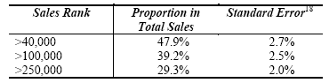
Table 4 - Proportion of Sales from Amazon's Online Bookshop 255
The ability of e-commerce to address long-tail markets is not just good news for resellers. Customers get their share too as the market becomes increasingly able to match their needs. Brynjolfsson, Erik et al. estimate that:
… the increased product variety of online bookstores enhanced consumer welfare by $731 million to $1.03 billion in the year 2000, which is between seven to ten times as large as the consumer welfare gain from increased competition and lower prices in this market. 256
As e-commerce moves from physical goods to electronic information such as music, video, e-books or software257 258, whose storage costs are already negligible and quickly decreasing, the effect should be even more significant. Visionaries like Chris Anderson are already envisaging a future where all content ever produced is automatically made commercially available online, skipping the usual filtering process provided by publishers and distributors, as “it's more expensive to evaluate than to release259”.
The success of “knowledge refineries” such as Google, eBay or Wikipedia similarly depends on their capacity of exploiting the long tails of the Web, niche retail markets and human knowledge distributions.
The nature of the WWW as a communication medium is fundamentally ambiguous. A Web site is, like a TV station or radio station, a one-to-many communication medium to which users ‘tune it’ using their browsers. At the same time though, by radically slashing broadcasting costs, the WWW has opened the doors of information publishing to small organizations and even individuals making world-wide many-to-many publishing a real possibility for the very first time.
The tension between the essentially broadcasting nature of the medium and its potential to foster “grassroots” many-to-many communication is at the base of what is possibly the longest running and fiercer debate about the Web: is the WWW eventually going to become a “World Wide TV” dominated by traditional broadcasters and inhabited by ever more passive viewers or is going to be the best ever incarnation of the ideals of free speech and the birthplace of new forms of democracy and public debate?
The short history of the Web has already seen a number of shifts in the equilibrium of power between these two tendencies. In its initial phase, the WWW was mostly populated by small scale not-for-profit sites. It then followed a phase were major e-publishers appeared on the scene, generating fears, in particular after the AOL-Time Warner merger260 in 2001, that they might take over the Web and revert it to a traditional one-to-many medium, just one more distribution channel for Hollywood blockbusters and lowest-denominator entertainment.
The battle is not over yet but it might turn out that the real winner will be an unexpected third party: knowledge refineries.
Before we can proceed further a few definitions are in order: the bulk of the information made available on the Web is provided by three kinds of publishers261:
Self-publishers. Web sites maintained by a single organization, company or individual (e.g. IBM, U.S. Democratic Party, personal blogs). The content of self-published Web sites is normally relatively limited and monothematic and mainly meant to promote the organization’s or individual’s products or ideas.
Professional e-publishers (e.g. MSN, Yahoo, Encyclopedia Britannica). These are specialized publishers and information brokers that collect, integrate and resell a variety of professionally authored and edited content.
Knowledge Refineries (e.g. Wikipedia, Slashdot, eBay, SourceForge, Google). Aggregation/participation sites that filter and aggregate content provided, implicitly or explicitly, by a great number of individuals or smaller publishers, typically on a voluntary base.
Self-publishing, especially when done by individuals or small organizations is a very democratic form of communication. This form of many-to-many communication, however, is not without limits:
Most small publishers simply do not have the resources to produce content compelling enough to attract viewers.
It does not scale well. The greatest the number of publishers the more expensive it becomes for potential viewers to locate interesting material.
To solve these problems what has progressively emerged is a many-to-a-few-to-many, or hub-and-spoke, model of communication where:
Many small publishers/authors make available their contents.
These contents are aggregated and possibly ‘refined’ by one or more centralized systems (knowledge refineries)
The general public accesses the result of the aggregation process through the interfaces made available by the knowledge refineries.
Search engines as Google, online-markets and auction sites such as eBay, online encyclopedias as Wikipedia, open source development sites such as SourceForge, news sites such as Slashdot are all well-known examples of knowledge refineries.
Just as the traditional e-publishers sites, knowledge refineries provide the public with massive quantities of content in an easily accessible format. The key difference is that knowledge refineries do not develop most of their content. What Joe Public gets from these sites is very much what he himself provided, just aggregated, refined and repackaged.
Knowledge refineries have two major advantages with respect to traditional professional e-publishers:
They can provide content at a much lower costs (as usually the bulk of the publishing costs are assumed by the small publishers rather than by the knowledge refinery itself)
They can aggregate a much greater quantity of content as they can access low-grade and, in some cases, ‘latent’ knowledge that is well beyond the reach of traditional publishers.
The success of this model of communication has been impressive. It is not by chance that two of the most financially valuable Internet companies, eBay and Google, are both knowledge refineries.
What we see happing on the Web is an example of a common pattern: both one-to-many and many-to-many networks tend to incorporate, or be superseded by, hub-and-spoke components or full networks in order to achieve scalability in content production and distribution.
There are three major phases, and correlated costs, involved in the production of information: creating the content, integrating it to produce a “higher-order” product and finally distributing it.
Many-to-many networks are very scalable in content creation but they are miserable at content integration and distribution. Think of the telephone. Millions of communications can take place simultaneously with an impressive quantity of information being created and exchanged. But now try to organise an evening out for a group of 10 friends. How would you use the telephone to do it? How many calls would you need to make to collect all ideas on where to go, discuss them with everybody involved and then inform them of the final decision? It is hardly surprising that someone thought of inventing the teleconference. For the same reasons, and much more effectively, the invention of e-mail was quickly followed by the electronic mailing list.
One-to-many (broadcasting) networks have the opposite problem, they are excellent at content distribution and they can handle small-scale content integration but they are very limited when it comes to content creation. Traditional broadcasting services such as TV or the radio have recognised the problem and, rather inefficiently, tried to overcome some of the limits inherent in their unidirectional communication model by trying to establish some kind of feedback channel by using the telephone, mail or more recently e-mail to allow the public to ask questions, provide short commentaries or request a song. But this is a far cry from being able to exploit the true content creation potential of the general public, and in particular of the one billion people that have Internet access, that, as Yochai Benkler reminds us, is huge compared with that of the professional content producers:
A billion people in advanced economies have between two and six billion spare hours among them, every day. In order to harness two to six billion hours, the entire workforce of almost 340,000 workers employed by the entire motion picture and recording industries in the United States put together, assuming each worker worked forty hour weeks without taking a single vacation, for between three and eight and a half years! 262
Hub-and-spoke networks, or hub-and-spoke components inside broadcasting or many-to-many networks, overcome these problems by providing:
Scalability in content production: as they are able to leverage content from an unlimited number of agents.
Added-value by providing large-scale integration of agents’ contributions.
Scalability in content distribution, as they distribute content using an effective broadcasting model.
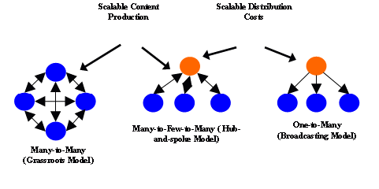
Figure 25 - Scalability of Different Network Models
Hub-and-spoke networks increase the degree by which network components can be profitably recombined. Compare barter and monetary economies. A barter economy is a many-to-many network where each good is exchanged directly with any other good. In theory, the opportunity for trade offered by barter are the same as those offered by monetary economies. In practice however, given that in order for two agents to barter they must have complementary needs, most of these opportunities are never realised263. This has lead to the almost universal replacement of barter with monetary economies, hub-and-spoke networks where a few standardised units of value (cash, gold, shells) provide universal convertibility and therefore efficient mediated exchange among any combination of goods.
For the same reason, reducing the cost of interconnection among network elements264, hub-and-spoke is the most common underlying topology of communication networks including those that, at the application level, appear to be many-to-many. Notable examples are the Internet (where network routers and, at a higher level, exchange points265 operate as hubs), the telephone (with their local and central switchboards), e-mail (where communication flows among mail server hubs266) and air traffic (whose organisation around hub airports is the prototypical example of hub-and-spoke network).
In Extrinsic Utility of Group-Forming Networks we have discussed and amended Reed’s Law on the utility of group-forming networks. Reed, however, prefers to express his law in a slightly different way, that we will examine in this section:
As networks grow, value shifts: Content (whose value is proportional to size) yields to Transactions (whose value is proportional to the square of size), and eventually Affiliation (whose value is exponential in size). 267
The key point that Reed makes here is not so much that the value of group-forming networks grows exponentially but rather that, as the number of user increases, the value that derives from group-forming grows faster than the value deriving from broadcasting or direct one-to-one communication leading to a shift in the relative importance of different network services:
there are really at least three categories of value that networks can provide: the linear value of services that are aimed at individual users, the "square" value from facilitating transactions, and exponential value from facilitating group affiliations. What's important is that the dominant value in a typical network tends to shift from one category to another as the scale of the network increases. .. We can see this scale-driven value shift in the history of the Internet. The earliest usage of the Internet was dominated by its role as a terminal network, allowing many terminals to selectively access a small number of costly timesharing hosts. As the Internet grew, much more of the usage and value of the Internet became focused on pairwise exchanges of email messages, files, etc. following Metcalfe's Law. And as the Internet started to take off in the early ' 90's, traffic started to be dominated by "newsgroups" (Internet discussion groups), user created mailing lists, special interest websites, etc., following the exponential GFN law. Though the previously dominant functions did not lose value or decline as the scale of the Internet grew, the value and usage of services that scaled by newly dominant scaling laws grew faster… What's important in a network changes as the network scale shifts. In a network dominated by linear connectivity value growth, "content is king." That is, in such networks, there is a small number of sources (publishers or makers) of content that every user selects from. The sources compete for users based on the value of their content (published stories, published images, standardized consumer goods). Where Metcalfe's Law dominates, transactions become central. The stuff that is traded in transactions (be it email or voice mail, money, securities, contracted services, or whatnot) are king. And where the GFN law dominates, the central role is filled by jointly constructed value (such as specialized newsgroups, joint responses to RFPs, gossip, etc.). 268
In the following figure, we can see how, as N increases, the advantage of networks that support group-forming, many-to-many communication and broadcasting (in green) greatly overcomes the value of networks that support only many-to-many communication and broadcasting (in yellow) and purely broadcasting networks (in red).
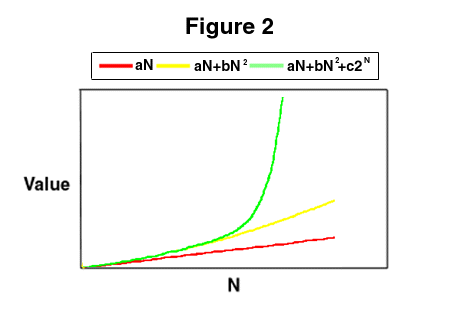
Figure 26 - Growth in the Value of Different Networks 269
As a consequence, as N increases, the key component of the network value changes, from the quality of the contents to the number of users to the facilitation of group-forming.
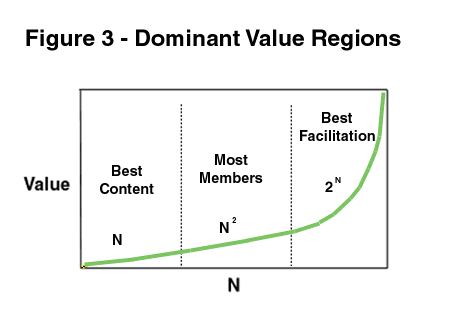
Figure 27 - Dominant Value Regions 270
Even after applying the corrections to the “laws of network value” discussed in Principles of Network Utility this conclusion still holds.
Empirical confirmation of the shift in importance from broadcasting to many-to-many communication has been found by Andrew Odlyzko in a number of networks, both old and recent, including the postal service, the phone and the Internet:
The predominance of point-to-point communications spending is not new. That has been the historical pattern for ages. For example, in the early 19th century, almost all the revenues of the U.S. postal system came from letters. Yet about as many newspapers as letters were being delivered … it was often thought (even by Alexander Graham Bell) that one of the principal uses of the telephone would be in broadcasting. Several substantial experiments in delivering content over the phone were attempted, including the Telefon Hirmondó in Budapest that lasted from 1893 past the end of World War I, and the Telephone Herald in Newark, New Jersey, which folded soon after its start in 1911. In the end, though, the phone emerged as the prototypical example of point-to-point communication. …Today, Web traffic dominates the Internet in volume, with about 20 times as many bytes as email … Yet email has been and continues to be the real “killer app” of the Internet. ... Ask people whether they would rather give up email or the phone, and the responses will typically be split. However, when a similar choice is offered between the Web and email, there is no contest. This is true for both individuals and large organizations. Intranets are all the rage, but it is email that makes enterprises run. 271
The value of a broadcast network is usually regarded as proportional to the number of users in it. On the other hand, a point-to-point communication network is often said, by Metcalfe’s Law, to have value proportional to the square of the number of member. This then leads to the conclusion that eventually, once a single network like the Internet reaches a large enough size, point-to-point communications will provide much higher value than broadcast. There are some problems with this argument … However, the general thrust of the argument and the conclusion are valid. Certainly all the historical evidence cited throughout this work supports the conclusion that connectivity (or point-to-point communication) is what matters the most. 272
Empirical evidence of the shift from many-to-many communication to group-forming is thinner on the ground as, before the Internet, there weren’t many examples of networks able to support all three kinds of communication models. The growing importance of social knowledge applications, that clearly fall in the “recombination camp”, provide, however, a strong indication of where the future of the Internet is heading.
• Adamic, Lada A. & Huberman, Bernardo A. & Barabási, A. & Albert, R. & Jeong, H. & Bianconi, G. Power-Law Distribution of the World Wide Web, Science (2000) 287: 2115a, http://www.sciencemag.org/cgi/content/full/287/5461/2115a
• Aigrain, Philippe. The Individual and the Collective in Open Information Communities,16th BLED Electronic Commerce Conference, 9-11 June 2003. http://opensource.mit.edu/papers/aigrain3.pdf
• Aigrain, Philippe. Cause commune: L'information entre bien commun et propriété, Fayard (2 février 2005), ISBN:2213623058, http://www.causecommune.org/
• Albert, R. & Jeong, H. & Barabási, A.-L. Error and attack tolerance in complex networks Nature 406 , 378 (2000), http://www.nd.edu/~networks/Publication%20Categories/03%20Journal%20Articles/Physics/ErrorAttack_Nature%20406%20,%20378%20(2000).pdf
• Alexander, Christopher & Ishikawa, Sara & Silverstein, Murray. A Pattern Language: Towns, Buildings, Construction (Center for Environmental Structure Series). Oxford University Press (1977). ISBN:0195019199
• Alexander, Christopher. The Timeless Way of Building. Oxford University Press (1979). ISBN:0195024028
• Anderson, Chris, The Long Tail, Wired, Oct. 2004, http://www.wired.com/wired/archive/12.10/tail.html and http://www.changethis.com/pdf/10.01.LongTail.pdf
• Arthur, W. Brian Competing Technologies, Increasing Returns and Lock-in by Historical Events, Economic Journal, 99, 106-131, 1989, http://www.santafe.edu/arthur/Papers/Pdf_files/EJ.pdf
• Arthur, W. Brian, Increasing returns and the new world of business, Harvard Business Review: July-August, 1996 pagg.100-109, http://www.santafe.edu/arthur/Papers/Pdf_files/HBR.pdf
• Barabási, A.-L. & Albert, R., Emergence of scaling in random networks, Science 286, 509–512 (1999), http://www.nd.edu/~networks/Publication%20Categories/03%20Journal%20Articles/Physics/EmergenceRandom_Science%20286,%20509-512%20(1999).pdf
• Bellomi, Francesco & Bonato, Roberto, Network Analysis for Wikipedia, Proceedings of "Wikimania 2005 - The First International Wikimedia Conference", Frankfurt, Germany, 4-8 August, 2005.
• Benkler, Yochai. Coase’s Penguin: Linux and the Nature of the Firm, Yale Law Journal, December 2002. http://www.yale.edu/yalelj/112/BenklerWEB.pdf
• Benkler, Yochai, Common Wisdom: Peer Production of Educational Materials, 2005, http://www.lulu.com/browse/book_view.php?fCID=162436 (free registration required).
• Berners-Lee, T. & Fielding, R. & Masinter, L. Uniform Resource Identifiers, Request for Comments 2396, IETF . http://www.ietf.org/rfc/rfc2396.txt
• Berners-Lee, Tim. Weaving the Web: The Original Design and Ultimate Destiny of the World Wide Web. Collins (07 November, 2000). ISBN:006251587X
• Bianconi, G. & Barabási, A.-L., Competition and multiscaling in evolving networks, Europhys. Lett. 54, 436–442 (2001). http://arxiv.org/abs/cond-mat/0011029
• Brown, Andrew. If this suite's a success, why is it so buggy?, The Guardian, December 8, 2005, http://technology.guardian.co.uk/weekly/story/0,16376,1660763,00.html
• Brynjolfsson, Erik, & Smith, Michael D. & Hu, Yu (Jeffrey), Consumer Surplus in the Digital Economy: Estimating the Value of Increased Product Variety at Online Booksellers (June 2003). MIT Sloan Working Paper No. 4305-03. http://ssrn.com/abstract=400940.
• Campbell R. Harvey & Gray, Stephen. Portfolio Analysis and Diversification, http://www.duke.edu/~charvey/Classes/ba350_1997/diverse/diverse.htm
• Casson, Herbert N., The History of the Telephone, A. C. McClurg & Co., Chicago, 1910, http://www.telephonetribute.com/the_history_of_the_telephone.html
• Cerf, Vint. Letter to the Committee on Energy and Commerce of the U.S. House of Representatives, November 8, 2005, http://googleblog.blogspot.com/2005/11/vint-cerf-speaks-out-on-net-neutrality.html
• Chklovski, Timothy & Gil, Yolanda. Towards Managing Knowledge Collection from Volunteer Contributors, Proceedings of 2005 AAAI Spring Symposium on Knowledge Collection from Volunteer Contributors (KCVC05) (2005), http://www.isi.edu/~timc/papers/managing-volunteer-contribs-kcvc05-chklovski-gil.pdf
• Chklovski, Timothy & Gil, Yolanda. Towards Managing Knowledge Collection from Volunteer Contributors, Proceedings of 2005 AAAI Spring Symposium on Knowledge Collection from Volunteer Contributors (KCVC05) (2005), http://www.isi.edu/~timc/papers/managing-volunteer-contribs-kcvc05-chklovski-gil.pdf
• Coase, R. H. The Nature of the Firm. Economica, New Series, Vol. 4, No. 16. (Nov., 1937), pages 386-405. http://links.jstor.org/sici?sici=0013-0427%28193711%292%3A4%3A16%3C386%3ATNOTF%3E2.0.CO%3B2-B
• DiBona, Chris & Ockman, Sam & Stone, Mark eds. Open Sources: Voices from the Open Source Revolution. Sebastopol: O'Reilly, 1999.
• Dorigo, Marco & Stützle, Thomas. Ant Colony Optimization (Bradford Books). The MIT Press (01 July, 2004). ISBN:0262042193.
• Downs, A. 1967, Inside Bureaucracy, Little Brown & Co., Boston.
• Economides, Nicholas Dictionary of Terms in Network Economics, http://www.stern.nyu.edu/networks/dictionary.html
• Economides, Nicholas Dictionary of Terms in Network Economics, http://www.stern.nyu.edu/networks/dictionary.html
• Economides, Nicholas, The Economics of Networks, International Journal of Industrial Organization, October 1996, http://raven.stern.nyu.edu/networks/top.html.
• Eillis, C. A. & Gibbs, S. J. & Rein, G. L. (1991), Groupware Some issues and experiences. Communications of the ACM, 34, 1, 38-58, http://portal.acm.org/citation.cfm?coll=GUIDE&dl=GUIDE&id=99987
• Emigh, William & Herring, Susan C. (2004). Collaborative Authoring on the Web: A Genre Analysis of Online Encyclopedias. Paper presented at the 39th Hawaii International Conference on System Sciences. « Collaboration Systems and Technology Track », Hawai. http://ella.slis.indiana.edu/~herring/wiki.pdf
• Eurekster.com. How Eurekster Works, http://home.eurekster.com/howitworks.htm
• Fairtlough, Gerard. The Three Ways of Getting Things Done. Hierarchy, Heterarchy and Responsible Autonomy in Organisations, 4 September 2005, ISBN: 0-9550-0810-7
• Foster, Richard & Kaplan, Sarah. Creative Destruction: Why Companies that are Built to Last Underperform the Market – and How to Successfully Transform Them, Currency, New York (2001).
• Franklin, Stan, Coordination without Communication, http://www.msci.memphis.edu/~franklin/coord.html
• Gamma, Erich & Helm, Richard & Johnson, Ralph & Vlissides, John. Design Patterns. Addison-Wesley Professional (15 January, 1995). ISBN:0201633612
• Gelernter, David. Generative communication in Linda. ACM Transactions on Programming Languages and Systems, Volume 7, Issue 1 (January 1985), pages 80-112, ISSN:0164-0925
• Giles, Jim. Internet encyclopaedias go head to head, Jimmy Wales' Wikipedia comes close to Britannica in terms of the accuracy of its science entries, a Nature investigation finds. Nature, 14 December 2005, http://www.nature.com/news/2005/051212/full/438900a.html.
• Grassé, Pierre-Paul (1959). La reconstruction du nid et les coordinations interindividuelles chez bellicositermes natalensis et cubitermes sp. La théorie de la stigmergie: essai d'interprétation du comportement des termites constructeurs. Insectes Sociaux, 6, 41-81.
• Hanson, Robin. Shall We Vote on Values, But Bet on Beliefs?, September 2003 (First Version September 2000), http://hanson.gmu.edu/futarchy.pdf.
• Hardt, Michael & Negri, Antonio. Empire. Harvard University Press (July, 2001). ISBN:0674006712
• Hargadon, Andrew. How Breakthroughs Happen: The Surprising Truth About How Companies Innovate ISBN:1578519047, Harvard Business School Press (05 June, 2003)
• Hayek, Freidrich. The Use of Knowledge in Society, American Economic Review, XXXV, No. 4; September, 1945, 519-30, http://www.virtualschool.edu/mon/Economics/HayekUseOfKnowledge.html
• Heller, Michael A., Eisenberg, Rebecca S., Can Patents Deter Innovation? The Anticommons in Biomedical Research Science 1998 280: 698-701, http://www.sciencemag.org/cgi/content/full/280/5364/698?ijkey=7Ed3XPDdxC8a2&keytype=ref&siteid=sci
• Heylighen, Francis. (1999), Collective Intelligence and its Implementation on the Web: algorithms to develop a collective mental map, Computational and Mathematical Organization Theory 5(3), 253-280, http://pespmc1.vub.ac.be/Papers/CollectiveWebIntelligence.pdf.
• Heylighen, Francis. (2004), Conceptions of a Global Brain: an historical review, to appear in Technological Forecasting and Social Change, http://pespmc1.vub.ac.be/Papers/GBconceptions.pdf
• Isenberg, David S., The Rise of the Stupid Network, Computer Telephony, August 1997, pg 16-26, http://www.isen.com/stupid.html
• Jaffe, Adam B. & Lerner, Josh, Innovation and Its Discontents: How Our Broken Patent System is Endangering Innovation and Progress, and What to Do About It. Princeton University Press (27 September, 2004). ISBN:069111725X
• Kanellos, Michael. Interview with Bill Gates: Restricting IP rights is tantamount to communism, CNET News.com,January 06, 2005, http://insight.zdnet.co.uk/software/windows/0,39020478,39183197,00.htm
• Kraus, Joe. The long tail of software. Millions of Markets of Dozens, March 09, 2005, http://bnoopy.typepad.com/bnoopy/2005/03/the_long_tail_o.html
• Krowne, Aaron & Bazaz, Anil. Authority Models for Collaborative Authoring. HICSS 2004 Proceedings, January, 2004. http://br.endernet.org/%7Eakrowne/my_papers/authority_models/authority_models.pdf
• Krowne, Aaron, “The FUD-based Encyclopedia”, Free Software Magazine n. 2, March 2005, http://www.freesoftwaremagazine.com/free_issues/issue_02/fud_based_encyclopedia/
• Liebowitz, S. J. & Margolis, S. E. 1995. Path dependence, lock-in and history, Journal of Law, Economics, and Organization 11: 205-226, http://www.utdallas.edu/~liebowit/paths.html
• Liebowitz, S. J. & Margolis, S. E. Path Dependence, The New Palgraves Dictionary of Economics and the Law, MacMillan, 1998, http://www.utdallas.edu/~liebowit/palgrave/palpd.html
• Liebowitz, S. J. & Margolis, Stephen E., Network Externalities (Effects), http://wwwpub.utdallas.edu/~liebowit/palgrave/network.html
• Lih, Andrew. Wikipedia as Participatory Journalism: Reliable Sources? Paper presented at the 5th International Symposium on Online Journalism, April 16 - 17, 2004, Austin, Texas, United States. http://staff.washington.edu/clifford/teaching/readingfiles/utaustin-2004-wikipedia-rc2.pdf
• M. Pearce, Joshua, Using the Internet to reduce market risk for alternative energy sources: The case of large–scale solar photovoltaic production, First Monday, August 2005, http://www.firstmonday.org/issues/issue10_8/pearce/
• Marx, Karl. A Contribution to the Critique of Political Economy, 1859.
• Marx, Karl. Capital.
• McHenry, Robert. The Faith-Based Encyclopedia, Tech Central Station, November 15, 2004, http://www.techcentralstation.com/111504A.html
• McLeod, Kembrew, Freedom of Expression (©) : Overzealous Copyright Bozos and Other Enemies of Creativity. Doubleday (15 February, 2005). ISBN:0385513259, http://kembrew.com/documents/mcleod-freedomofexpression3.pdf
• Metcalfe, Robert. Metcalfe's Law: A network becomes more valuable as it reaches more users. Infoworld, Oct. 2, 1995.
• Moglen, Eben. The dotCommunist Manifesto, January 2003, http://emoglen.law.columbia.edu/publications/dcm.html
• Nelson, Richard R. & Winter, Sidney G. An Evolutionary Theory of Economic Change (Cambridge, MA: Belknap Press,1982).
• Newman, M. E. J., The structure and function of complex networks, March 2003, http://aps.arxiv.org/PS_cache/cond-mat/pdf/0303/0303516.pdf.
• Nichols, David M. & Twidale, Michael B. The Usability of Open Source Software, First Monday, volume 8, number 1 (January 2003), http://firstmonday.org/issues/issue8_1/nichols/index.html
• O'Brien, Timothy L. Are U.S. Innovators Losing Their Competitive Edge?, New York Times, 13th of November 2005, http://www.nytimes.com/2005/11/13/business/yourmoney/13invent.html
• Odlyzko, Andrew & Tilly, Benjamin. A refutation of Metcalfe's Law and a better estimate for the utility of networks and network interconnections, http://www.dtc.umn.edu/~odlyzko/doc/metcalfe.pdf
• Odlyzko, Andrew M. Content is not king, AT&T Labs Working Paper (2001), http://www.dtc.umn.edu/~odlyzko/doc/history.communications2.pdf
• Odlyzko, Andrew M. The History of Communications and its Implications for the Internet, AT&T Labs Working Paper (2000), http://www.dtc.umn.edu/~odlyzko/doc/history.communications0.pdf
• Page, L. & Brin, S. & Motwani, R. & Winograd, T. The PageRank citation algorithm: bringing order to the Web. 7th World Wide Web Conference, 1998.
• Panait,Liviu. Ant Forage Model in the Mason multi-agent simulation library, http://cs.gmu.edu/~eclab/projects/mason/
• Pennock, David & Flake, Gary & Lawrence, Steve & Glover, Eric & Giles, C. Lee, Winners don't take all: Characterizing the competition for links on the web. Proceedings of the National Academy of Sciences, 99(8): 5207-5211, April 2002, http://modelingtheweb.com/
• Perry, John and Zalta, Edward N, Why Philosophy Needs a Dynamic Encyclopedia, November 1997, http://plato.stanford.edu/pubs/why.html
• Raymond. Eric S. The Cathedral and the Bazaar, First Monday, Vol.3 No.3 - March 2nd. 1998, http://firstmonday.dk/issues/issue3_3/raymond/
• Reed, David P. Reed's Law: That Sneaky Exponential - Beyond Metcalfe's Law to the Power of Community Building, Context Magazine, Spring 1999, http://www.contextmag.com/setFrameRedirect.asp?src=/archives/199903/DigitalStrategy.asp
• Reed, David P. Weapon of Math Destruction, Context Magazine, Spring 1999, http://www.contextmag.com/setFrameRedirect.asp?src=/archives/199903/DigitalStrategy.asp
• Reed, David P., Reed's 3rd Law: a scaling law for network value, http://www.reed.com/reeds3rd.htm
• Rheingold, Howard. Smart Mobs: The Next Social Revolution. Perseus Books Group (15 October, 2002). ISBN:0738206083
• Rohlfs, Jeffrey, A Theory of Interdependent Demand for a Communications Service, The Bell Journal of Economics and Management Science, Vol. 5, No. 1. (Spring, 1974), pages 16-37, http://links.jstor.org/sici?sici=0005-8556%28197421%295%3A1%3C16%3AATOIDF%3E2.0.CO%3B2-I
• Romer, Paul. Economic Growth, The Concise Encyclopedia of Economics, David R. Henderson, ed. Liberty Fund (Forthcoming 2007.), http://www.stanford.edu/~promer/EconomicGrowth.pdf
• Saltzer, J. H. & Reed, D. P. & Clark, D. D. End-to-end arguments in system design, ACM Transactions on Computer Systems, Volume 2 , Issue 4 (November 1984), Pages: 277 - 288, ISSN:0734-2071, http://portal.acm.org/citation.cfm?id=357402
• Sanger, Larry, The Early History of Nupedia and Wikipedia: A Memoir Part 1 and Part 2, Slashdot (April 18-19, 2005), http://features.slashdot.org/article.pl?sid=05/04/18/164213&tid=95&tid=149&tid=9 and http://features.slashdot.org/article.pl?sid=05/04/19/1746205&tid=95
• Sanger, Larry, Why Wikipedia Must Jettison Its Anti-Elitism, Kuro5hin (December 31, 2004), http://www.kuro5hin.org/story/2004/12/30/142458/25
• Sawhney, Mohanbir S. & Drelichman, Mauricio & Wolcott, Robert C., Seeing Ahead by Looking Back: Lessons from Network Evolution and Implications for the Internet, 2004, http://www.mohansawhney.com/registered/content/Academic%20Articles/Seeing%20Ahead%20by%20%20Looking%20Back.pdf (access requires free registration).
• Schofield, Jack, Why VHS was better than Betamax, The Guardian, January 25, 2003, http://technology.guardian.co.uk/online/comment/story/0,12449,881780,00.html.
• Searls, Doc & Weinberger, David. World of Ends, What the Internet Is and How to Stop Mistaking It for Something Else, http://www.worldofends.com/
• Servan-Schreiber, Emile & Wolfers, Justin & Pennock, David & Galebach, Brian 2004. Prediction Markets: Does Money Matter?, Electronic Markets, 14(3), 243-251.
• Shirky, Clay, Power Laws, Weblogs and Inequality, February 2003, http://shirky.com/writings/powerlaw_weblog.html
• Shirky, Clay. A Group Is Its Own Worst Enemy, April 2003, http://shirky.com/writings/group_enemy.html
• Shirky, Clay. In Praise of Evolvable Systems, (First appeared in the ACM's net_worker, 1996), http://www.shirky.com/writings/evolve.html
• Solé, Ricard V. & Mª Montoya, José, Complexity and Fragility in Ecological Networks, Proceedings of the Royal Society of London B 268, 2039-2045 (2001), http://complex.upf.es/~ricard/FRAGIL.pdf
• Surowiecki, James. The Wisdom of Crowds: Why the Many Are Smarter Than the Few and How Collective Wisdom Shapes Business, Economies, Societies and Nations. Doubleday (25 May, 2004). ISBN:0385503865
• Terdiman, Daniel. Adam Curry gets podbusted, December 2, 2005, News.Com, http://news.com.com/2061-10802_3-5980758.html?tag=nl
• The Economist, A market for ideas, 20th of October 2005, http://www.economist.com/surveys/displaystory.cfm?story_id=5014990
• The Economist, Fruit that falls far from the tree. Might poor countries gain when their best and brightest leave?, Nov 3rd 2005, http://www.economist.com/displaystory.cfm?story_id=5108231
• Turnbull, Shann, Design Criteria for a Global Brain, (July 5, 2001). Presented to The First Global Brain Workshop (Gbrain O) Vrije Universiteit Brusse, Brussels, Belgium, Thursday, July 5, 2001 http://ssrn.com/abstract=283715.
• Valloppillil, Vinod. Open Source Software: A (New?) Development Methodology, Microsoft internal report annotated by Eric S. Raymond, August 11, 1998, http://www.catb.org/~esr/halloween/halloween1.html.
• Viégas, F. B. & Wattenberg, M., & Dave, K. Studying cooperation and conflict between authors with history flow visualizations, CHI 2004, 575-582.
• Weber, Steven, The Political Economy of Open Source (Berkeley Roundtable on the Int’l Econ., Working Paper No. 140, 2000), http://brie.berkeley.edu/~briewww/publications/wp140.pdf
• Wolfers, Justin & Zitzewitz, Eric. Prediction Markets in Theory and Practice, Forthcoming in The New Palgrave Dictionary of Economics, 2nd ed. http://bpp.wharton.upenn.edu/jwolfers/Papers/PredictionMarkets(Palgrave).pdf
3 As of January 2006, see Wikipedia:Wikipedia,
4 As of June 2005, see Alexa:wikipedia.org and Alexa:britannica.com
5 As of October 2005, see http://meta.wikimedia.org/wiki/Complete_list_of_language_Wikipedias_available
6 Benkler, Yochai. Coase’s Penguin: Linux and the Nature of the Firm, Yale Law Journal, December 2002. http://www.yale.edu/yalelj/112/BenklerWEB.pdf
7 Shirky, Clay. A Group Is Its Own Worst Enemy, April 2003, http://shirky.com/writings/group_enemy.html
8 Rheingold, Howard. Smart Mobs: The Next Social Revolution. Perseus Books Group (15 October, 2002). ISBN:0738206083
9 Hardt, Michael & Negri, Antonio. Empire. Harvard University Press (July, 2001). ISBN:0674006712
10 Surowiecki, James. The Wisdom of Crowds: Why the Many Are Smarter Than the Few and How Collective Wisdom Shapes Business, Economies, Societies and Nations. Doubleday (25 May, 2004). ISBN:0385503865
11 Heylighen, Francis. (2004), Conceptions of a Global Brain: an historical review, to appear in Technological Forecasting and Social Change, http://pespmc1.vub.ac.be/Papers/GBconceptions.pdf
12 Economides, Nicholas Dictionary of Terms in Network Economics, http://www.stern.nyu.edu/networks/dictionary.html
13 © T. Chalkley
14 Marx, Karl. A Contribution to the Critique of Political Economy, 1859. par.5
15 The Economist, A market for ideas, 20th of October 2005, http://www.economist.com/surveys/displaystory.cfm?story_id=5014990
16 Data from Alexa.com, after clustering closely related sites such as multiple Google or Microsoft sites. Verified on the 10th of December, 2005.
18 Marx, Karl. Capital, Volume I, Chapter 10, Section 1.
19 Kanellos, Michael. Interview with Bill Gates: Restricting IP rights is tantamount to communism, CNET News.com,January 06, 2005, http://insight.zdnet.co.uk/software/windows/0,39020478,39183197,00.htm
20 Moglen, Eben. The dotCommunist Manifesto, January 2003, http://emoglen.law.columbia.edu/publications/dcm.html
22 Alexander, Christopher. The Timeless Way of Building. Oxford University Press (1979). ISBN:0195024028
23 Alexander, Christopher & Ishikawa, Sara & Silverstein, Murray. A Pattern Language: Towns, Buildings, Construction (Center for Environmental Structure Series). Oxford University Press (1977). ISBN:0195019199
24 Gamma, Erich & Helm, Richard & Johnson, Ralph & Vlissides, John. Design Patterns. Addison-Wesley Professional (15 January, 1995). ISBN:0201633612
25 The Portland Pattern Repository, http://c2.com/cgi/wiki?PortlandPatternRepository
29 From the point of view of an unprivileged user (the situation is different for the Wiki’s administrators) a Wiki is essentially a set of two functions. The first is a retrieval function that, given the title of a page and a version number, will return the content of the specified version of the page. The other is a publishing function that, given the title of a page and a text, will append a new version with the given text to the existing list of versions of the page with the given title. These functions are referentially transparent, that is to say that, given the same parameters, they always produce the same result. Referential transparency is also a key feature of one of the latest breeds of programming languages: the purely functional programming languages. In these languages, existing values cannot be modified, though new values can be created on the base of the existing ones. Wikis offers some of the same advantages of functional programming languages: simplicity and resilience to concurrent modifications.
30 Eillis, C. A. & Gibbs, S. J. & Rein, G. L. (1991), Groupware Some issues and experiences. Communications of the ACM, 34, 1, 38-58, http://portal.acm.org/citation.cfm?coll=GUIDE&dl=GUIDE&id=99987
31 Wikipedia:Wiki. One of the main attractions of the Wikis is that they allow users to edit a page using just a standard Web browser. Non Web-based cooperative editing systems, however, predate the Wiki by a number of years, see for example the GROVE system described in Eillis et al.
33 As the page that contains the “official” aims of Wikipedia is, just as any other page, editable by anybody, the exact wording might vary. There is no doubt though that the creation of an encyclopaedia, in the traditional sense of the term but with unprecedented breath and depth, has always been the central theme of Wikipedia.
35 Emigh, William & Herring, Susan C. (2004). Collaborative Authoring on the Web: A Genre Analysis of Online Encyclopedias. Paper presented at the 39th Hawaii International Conference on System Sciences. « Collaboration Systems and Technology Track », Hawai. http://ella.slis.indiana.edu/~herring/wiki.pdf
36 This applies only to the specifically encyclopaedic part of Wikipedia, that is to say the entries. Wikipedia includes also debating facilities, mostly in the form of Talk pages of which there is one per entry, that are used to discuss the contents and development of the corresponding article. Unsurprisingly, the language adopted in these discussion areas is informal, colloquial and very subjective.
38 It seems unlikely that more than a few of the international versions of Wikipedia will ever reach the status of universal encyclopedias. The value of the smaller versions will rather be in providing a focus for the preservation of minority languages and cultures that are currently under-represented on the Web. This is even more evident in the related Wiktionary project, a Wiki-based open content dictionary where, among the top ten dictionaries by size, we find minority languages such as Galician and the artificial language Ido (last checked on the 28th of November 2005). The minor editions of Wikipedia are one more example of how the Internet can strengthen minority groups and customs. For an even more peculiar case, see The Economist, Made for each other, Modern technology and Indian marriage: a match made in heaven. Oct 20th 2005,
http://www.economist.com/business/displayStory.cfm?story_id=5069006
39 Wikipedia:Size_comparisons. Checked on the 25th of September 2005.
40 Some specialised encyclopedias such as the Stanford Encyclopedia of Philosophy (SEP) or the Routledge Encyclopedia of Philosophy have a different structure, with a modest number of very long articles. The SEP, still incomplete at the time of writing, has around 700 articles with an average length of about 10.000 words. The Routledge, a traditional commercial encyclopedia also available in printed form, has about 2.000 articles of a similar length. Checked on the 26th of September 2005.
41 McHenry, Robert. The Faith-Based Encyclopedia, Tech Central Station, November 15, 2004, http://www.techcentralstation.com/111504A.html
42 McHenry has more to say on this but his arguments are, overall, so inconsistent and biased that it would be tedious and pointless to try to examine them in detail. For a detailed, point by point, reply to McHenry paper see Krowne.
43 Krowne, Aaron, “The FUD-based Encyclopedia”, Free Software Magazine n. 2, March 2005, http://www.freesoftwaremagazine.com/free_issues/issue_02/fud_based_encyclopedia/
44 Sanger, Larry, The Early History of Nupedia and Wikipedia: A Memoir Part 1 and Part 2, Slashdot (April 18-19, 2005), http://features.slashdot.org/article.pl?sid=05/04/18/164213&tid=95&tid=149&tid=9 and http://features.slashdot.org/article.pl?sid=05/04/19/1746205&tid=95
45 Sanger, Larry, Why Wikipedia Must Jettison Its Anti-Elitism, Kuro5hin (December 31, 2004), http://www.kuro5hin.org/story/2004/12/30/142458/25
46 Wikipedia:Why_Wikipedia_is_not_so_great, checked on the 28th of October 2005.
47 Wikipedia has also put in place other procedures to defend its contents. The English Wikipedia has an Arbitration Committee that has the power of black-listing the worst offenders excluding them from further editing. Automatic mechanisms also exist to detect and stop the most common patterns of misconduct. So, for example, in order to stop ‘editing wars’ where authors keep reversing a page to their favourite version, so removing all successive edits, there is a "three reverts rule", whereby those users who revert articles more than three times in a 24 hour period are blocked for 24 hours.
48 Viégas, F. B. & Wattenberg, M., & Dave, K. Studying cooperation and conflict between authors with history flow visualizations, CHI 2004, 575-582.
49 Seigenthaler, John Sr. A false Wikipedia 'biography', 29th of November 2005, USA Today, http://www.usatoday.com/news/opinion/editorials/2005-11-29-wikipedia-edit_x.htm
53 Terdiman, Daniel. Adam Curry gets podbusted, December 2, 2005, News.Com, http://news.com.com/2061-10802_3-5980758.html?tag=nl
54 Lih, Andrew. Wikipedia as Participatory Journalism: Reliable Sources? Paper presented at the 5th International Symposium on Online Journalism, April 16 - 17, 2004, Austin, Texas, United States. http://staff.washington.edu/clifford/teaching/readingfiles/utaustin-2004-wikipedia-rc2.pdf
55 Giles, Jim. Internet encyclopaedias go head to head, Jimmy Wales' Wikipedia comes close to Britannica in terms of the accuracy of its science entries, a Nature investigation finds. Nature, 14 December 2005, http://www.nature.com/news/2005/051212/full/438900a.html.
56 Bellomi, Francesco & Bonato, Roberto, Network Analysis for Wikipedia, Proceedings of "Wikimania 2005 - The First International Wikimedia Conference", Frankfurt, Germany, 4-8 August, 2005.
57 Bellomi and Bonato have applied Google-like algorithms to Wikipedia to identify the most authoritative articles.
58 One caveat is in order. Wikipedia is heavily interlinked, with each entry typically referring to many other entries. In July 2005, Wikipedia had 491M words and 30.5M internal links, that is to say one internal link every 16 words! It is not clear what weight Google gives to links that originate from the same Web site as the linked resource. If they do influence the total ranking then Wikipedia entries might be seen as authoritative simply because other Wikipedia entries suggest so.
61 Perry, John and Zalta, Edward N, Why Philosophy Needs a Dynamic Encyclopedia, November 1997, http://plato.stanford.edu/pubs/why.html
62 Alexa.com:Enclopedia Section, 2nd of October 2005.
63 Wikipedia:Awareness statistics. Note that the graph scale is logarithmic and therefore exponential growth appears as a straight line.
64 Sanger, Larry, The Early History of Nupedia and Wikipedia: A Memoir Part 1 and Part 2, Slashdot (April 18-19, 2005), http://features.slashdot.org/article.pl?sid=05/04/18/164213&tid=95&tid=149&tid=9 and http://features.slashdot.org/article.pl?sid=05/04/19/1746205&tid=95
65 Aigrain, Philippe (2003). The Individual and the Collective in Open Information Communities,16th BLED Electronic Commerce Conference, 9-11 June 2003. http://opensource.mit.edu/papers/aigrain3.pdf
71 Krowne, Aaron & Bazaz, Anil. Authority Models for Collaborative Authoring. HICSS 2004 Proceedings, January, 2004. http://br.endernet.org/%7Eakrowne/my_papers/authority_models/authority_models.pdf
72 At the end of 2005, Wikipedia has approximately 700 administrators, around 0.2% of the total number of registered users, see Wikipedia:Wikipedia:List_of_administrators.
74 Shirky, Clay. A Group Is Its Own Worst Enemy, April 2003, http://shirky.com/writings/group_enemy.html
75 Chklovski, Timothy & Gil, Yolanda. Towards Managing Knowledge Collection from Volunteer Contributors, Proceedings of 2005 AAAI Spring Symposium on Knowledge Collection from Volunteer Contributors (KCVC05) (2005), http://www.isi.edu/~timc/papers/managing-volunteer-contribs-kcvc05-chklovski-gil.pdf
79 Sanger, Larry, The Early History of Nupedia and Wikipedia: A Memoir Part 1 and Part 2, Slashdot (April 18-19, 2005), http://features.slashdot.org/article.pl?sid=05/04/18/164213&tid=95&tid=149&tid=9 and http://features.slashdot.org/article.pl?sid=05/04/19/1746205&tid=95
82 Shirky, Clay. In Praise of Evolvable Systems, (First appeared in the ACM's net_worker, 1996), http://www.shirky.com/writings/evolve.html
83 Economides, Nicholas, The Economics of Networks, International Journal of Industrial Organization, October 1996, http://raven.stern.nyu.edu/networks/top.html, page 10.
84 M. Pearce, Joshua, Using the Internet to reduce market risk for alternative energy sources: The case of large–scale solar photovoltaic production, First Monday, August 2005, http://www.firstmonday.org/issues/issue10_8/pearce/
85 Berners-Lee, T. & Fielding, R. & Masinter, L. Uniform Resource Identifiers, Request for Comments 2396, IETF . http://www.ietf.org/rfc/rfc2396.txt
87 Saltzer, J. H. & Reed, D. P. & Clark, D. D. End-to-end arguments in system design, ACM Transactions on Computer Systems, Volume 2 , Issue 4 (November 1984), Pages: 277 - 288, ISSN:0734-2071, http://portal.acm.org/citation.cfm?id=357402
88 Isenberg, David S., The Rise of the Stupid Network, Computer Telephony, August 1997, pg 16-26, http://www.isen.com/stupid.html
89 Searls, Doc & Weinberger, David. World of Ends, What the Internet Is and How to Stop Mistaking It for Something Else, http://www.worldofends.com/
90 Cerf, Vint. Letter to the Committee on Energy and Commerce of the U.S. House of Representatives, November 8, 2005, http://googleblog.blogspot.com/2005/11/vint-cerf-speaks-out-on-net-neutrality.html
92 Franklin, Stan, Coordination without Communication, http://www.msci.memphis.edu/~franklin/coord.html
93 Heylighen, Francis. (1999), Collective Intelligence and its Implementation on the Web: algorithms to develop a collective mental map, Computational and Mathematical Organization Theory 5(3), 253-280, http://pespmc1.vub.ac.be/Papers/CollectiveWebIntelligence.pdf, pages 6-7.
94 Grassé, Pierre-Paul (1959). La reconstruction du nid et les coordinations interindividuelles chez bellicositermes natalensis et cubitermes sp. La théorie de la stigmergie: essai d'interprétation du comportement des termites constructeurs. Insectes Sociaux, 6, 41-81.
95 Panait,Liviu. Ant Forage Model in the Mason multi-agent simulation library, http://cs.gmu.edu/~eclab/projects/mason/
96 Dorigo, Marco & Stützle, Thomas. Ant Colony Optimization (Bradford Books). The MIT Press (01 July, 2004). ISBN:0262042193.
97 ACOs can be seen, though it is a long shot, as a form of genetic algorithm where the ‘crossover’ function, used to determine the new individuals’ genome, has access to the whole population genetic pool and it depends on the fitness of the population genes, rather than on the fitness of individuals, as it is the case in biological systems and in most genetic algorithms. The equivalence between ACOs and genetic algorithms can be established as follows:
Each node in the graph being explored, is equivalent to one gene.
The edges of a node correspond to the possible codes for the gene (alleles).
A path is a sequence of edges and it is equivalent to an individual's genome.
The length of a path is the fitness of the corresponding individual.
The “pheromones” or other information created by the ants and associated with a node is used to calculate the fitness of the gene’s alleles.
The travel of an ant along a path corresponds to the birth of a new individual.
98 Gelernter, David. Generative communication in Linda. ACM Transactions on Programming Languages and Systems, Volume 7, Issue 1 (January 1985), pages 80-112, ISSN:0164-0925
99 Eurekster.com. How Eurekster Works, http://home.eurekster.com/howitworks.htm
100 Valloppillil, Vinod. Open Source Software: A (New?) Development Methodology, Microsoft internal report annotated by Eric S. Raymond, August 11, 1998, http://www.catb.org/~esr/halloween/halloween1.html.
102 Valloppillil, Vinod.
104 Raymond. Eric S. The Cathedral and the Bazaar, First Monday, Vol.3 No.3 - March 2nd. 1998, http://firstmonday.dk/issues/issue3_3/raymond/
105 Aigrain, Philippe. Cause commune: L'information entre bien commun et propriété, Fayard (2 février 2005), ISBN:2213623058, http://www.causecommune.org/, page 112.
108 Turnbull, Shann, Design Criteria for a Global Brain, (July 5, 2001). Presented to The First Global Brain Workshop (Gbrain O) Vrije Universiteit Brusse, Brussels, Belgium, Thursday, July 5, 2001 http://ssrn.com/abstract=283715, pages 8-9.
109 Downs, A. 1967, Inside Bureaucracy, Little Brown & Co., Boston.
110 Hayek, Freidrich. The Use of Knowledge in Society, American Economic Review, XXXV, No. 4; September, 1945, 519-30, http://www.virtualschool.edu/mon/Economics/HayekUseOfKnowledge.html
111 Coase, R. H. The Nature of the Firm. Economica, New Series, Vol. 4, No. 16. (Nov., 1937), pages 386-405. http://links.jstor.org/sici?sici=0013-0427%28193711%292%3A4%3A16%3C386%3ATNOTF%3E2.0.CO%3B2-B
114 Even in the case of, apparently simple, commodities like coal, a lengthy and complex process of standardisation has been necessary to eliminate local variability and allow the creation of viable commodities markets. See Benkler, note 79.
115 Benkler, Yochai Coase’s Penguin: Linux and the Nature of the Firm Yale Law Journal, December 2002. http://www.yale.edu/yalelj/112/BenklerWEB.pdf
119 Fairtlough, Gerard. The Three Ways of Getting Things Done. Hierarchy, Heterarchy and Responsible Autonomy in Organisations, 4 September 2005, ISBN: 0-9550-0810-7
120 Benkler, page 45.
123 Weber, Steven, The Political Economy of Open Source (Berkeley Roundtable on the Int’l Econ., Working Paper No. 140, 2000), http://brie.berkeley.edu/~briewww/publications/wp140.pdf, page 15.
124 Nichols, David M. & Twidale, Michael B. The Usability of Open Source Software, First Monday, volume 8, number 1 (January 2003), http://firstmonday.org/issues/issue8_1/nichols/index.html
125 Brown, Andrew. If this suite's a success, why is it so buggy?, The Guardian, December 8, 2005, http://technology.guardian.co.uk/weekly/story/0,16376,1660763,00.html
126 Benkler, page 9.
127 Both Yahoo’s and Google’s human-edited Web directories account for only about 1% of the total traffic on their respective home sites. Data from http://www.alexa.com, correct as of 10th of March 2005.
128 Page, L. & Brin, S. & Motwani, R. & Winograd, T. The PageRank citation algorithm: bringing order to the Web. 7th World Wide Web Conference, 1998.
129 "Out of Mediocrity, Excellence" is one of the mottos of Wikipedia, coined by Jimmy Wales, its founder and current leader.
130 Data accurate as of 26th of December, 2005.
131 Benkler, Yochai Coase’s Penguin: Linux and the Nature of the Firm Yale Law Journal, December 2002. http://www.yale.edu/yalelj/112/BenklerWEB.pdf, page 11.
133 DiBona, Chris & Ockman, Sam & Stone, Mark eds. Open Sources: Voices from the Open Source Revolution. Sebastopol: O'Reilly, 1999, page 108.
134 Weber, Steven, The Political Economy of Open Source (Berkeley Roundtable on the Int’l Econ., Working Paper No. 140, 2000), http://brie.berkeley.edu/~briewww/publications/wp140.pdf
136 Weber, Steven, The Political Economy of Open Source (Berkeley Roundtable on the Int’l Econ., Working Paper No. 140, 2000), http://brie.berkeley.edu/~briewww/publications/wp140.pdf, page 17.
137 Turnbull, Shann, Design Criteria for a Global Brain, (July 5, 2001). Presented to The First Global Brain Workshop (Gbrain O) Vrije Universiteit Brussel, Belgium, Thursday, July 5, 2001 http://ssrn.com/abstract=283715, page 10.
138 Redundancy in Web Dictionary of Cybernetics and Systems (originally from Klaus Krippendorff's "A Dictionary of Cybernetics", unpublished report, Feb. 2, 1986), http://pespmc1.vub.ac.be/ASC/REDUNDANCY.html
139 Weber, Steven, The Political Economy of Open Source (Berkeley Roundtable on the Int’l Econ., Working Paper No. 140, 2000), http://brie.berkeley.edu/~briewww/publications/wp140.pdf, page 16.
140 Raymond. Eric S. The Cathedral and the Bazaar, First Monday, Vol.3 No.3 - March 2nd . 1998, http://firstmonday.dk/issues/issue3_3/raymond/
141 Chklovski, Timothy & Gil, Yolanda. Towards Managing Knowledge Collection from Volunteer Contributors, Proceedings of 2005 AAAI Spring Symposium on Knowledge Collection from Volunteer Contributors (KCVC05) (2005), http://www.isi.edu/~timc/papers/managing-volunteer-contribs-kcvc05-chklovski-gil.pdf, page 4.
143 Heylighen, Francis. (1999), Collective Intelligence and its Implementation on the Web: algorithms to develop a collective mental map, Computational and Mathematical Organization Theory 5(3), 253-280, http://pespmc1.vub.ac.be/Papers/CollectiveWebIntelligence.pdf, section 3.1.
145 For examples of current information markets see the Iowa Electronic Market, Ideosphere and Intrade, A full list can be found at Wikipedia:Prediction_market.
146 Wolfers, Justin & Zitzewitz, Eric. Prediction Markets in Theory and Practice, Forthcoming in The New Palgrave Dictionary of Economics, 2nd ed. http://bpp.wharton.upenn.edu/jwolfers/Papers/PredictionMarkets(Palgrave).pdf
147 For a more formal demonstration see Wolfers & Zitzewitz, page 3.
148 Hanson, Robin. Shall We Vote on Values, But Bet on Beliefs?, September 2003 (First Version September 2000), http://hanson.gmu.edu/futarchy.pdf, page 7.
149 Hanson, page 8.
150 Wolfers & Zitzewitz, Table 1, page 13.
151 Hanson, pages 10-11.
152 Hanson, page 26.
153 Servan-Schreiber, Emile & Wolfers, Justin & Pennock, David & Galebach, Brian 2004. Prediction Markets: Does Money Matter?, Electronic Markets, 14(3), 243-251.
154 For a more detailed discussion of this and other limitations of information markets see Hanson, pages 15-25 (Design Issues section).
155 Sawhney, Mohanbir S. & Drelichman, Mauricio & Wolcott, Robert C., Seeing Ahead by Looking Back: Lessons from Network Evolution and Implications for the Internet, 2004, http://www.mohansawhney.com/registered/content/Academic%20Articles/Seeing%20Ahead%20by%20%20Looking%20Back.pdf
156 Liebowitz, S. J. & Margolis, Stephen E., Network Externalities (Effects), http://wwwpub.utdallas.edu/~liebowit/palgrave/network.html
157 Liebowitz & Margolis draw a similar distinction, though they use the terms autarky and synchronization value rather than intrinsic and extrinsic utility. The concepts of intrinsic and extrinsic value have also a long and distinguished history in philosophy, see Stanford Philosophy Encyclopedia: Intrinsic vs. Extrinsic Value and Stanford Philosophy Encyclopedia: Intrinsic vs. Extrinsic Properties.
158 Economides, Nicholas Dictionary of Terms in Network Economics, http://www.stern.nyu.edu/networks/dictionary.html
160 Nelson, Richard R. & Winter, Sidney G. An Evolutionary Theory of Economic Change (Cambridge, MA: Belknap Press,1982), page 130
161 Hargadon, Andrew. How Breakthroughs Happen: The Surprising Truth About How Companies Innovate ISBN:1578519047, Harvard Business School Press (05 June, 2003)
162 Romer, Paul. Economic Growth, The Concise Encyclopedia of Economics, David R. Henderson, ed. Liberty Fund (Forthcoming 2007.), http://www.stanford.edu/~promer/EconomicGrowth.pdf
164 Note that this is not the same thing as increasing marginal costs. Lottery tickets, cars and Prada’s bags also compete for physical resources required for their production (paper, metals and plastic, leather, etc.) but these are not the same resources that limit their utility (the lottery price, the parking space or exclusivity). Costs determine the supply curve, extrinsic utility affects the demand curve.
165 For a justification of the use of a logarithmic function see next section.
166 Note that in all the formulas in this section we might substitute the number of broadcasters with the quantity of broadcasted content.
168 Metcalfe, Robert. Metcalfe's Law: A network becomes more valuable as it reaches more users. Infoworld, Oct. 2, 1995.
169 Odlyzko, Andrew & Tilly, Benjamin, A refutation of Metcalfe's Law and a better estimate for the utility of networks and network interconnections, http://www.dtc.umn.edu/~odlyzko/doc/metcalfe.pdf
170 This is consistent with current practices in economic modelling where utility is commonly expressed as the natural logarithm of wealth Utility = loge (wealth).
171 Reed, David P. Weapon of Math Destruction, Context Magazine, Spring 1999, http://www.contextmag.com/setFrameRedirect.asp?src=/archives/199903/DigitalStrategy.asp
172 Reed, David P. Reed's Law: That Sneaky Exponential - Beyond Metcalfe's Law to the Power of Community Building, Context Magazine, Spring 1999, http://www.contextmag.com/setFrameRedirect.asp?src=/archives/199903/DigitalStrategy.asp
173 Hani Asfour, Interactions Volume 9, Issue 4 (July 2002) pages 19-21, ACM Press, New York, NY, USA.
174 Campbell R. Harvey & Gray, Stephen. Portfolio Analysis and Diversification, http://www.duke.edu/~charvey/Classes/ba350_1997/diverse/diverse.htm
175 Rohlfs, Jeffrey, A Theory of Interdependent Demand for a Communications Service, The Bell Journal of Economics and Management Science, Vol. 5, No. 1. (Spring, 1974), pages 16-37, http://links.jstor.org/sici?sici=0005-8556%28197421%295%3A1%3C16%3AATOIDF%3E2.0.CO%3B2-I
176 Odlyzko, Andrew & Tilly, Benjamin. A refutation of Metcalfe's Law and a better estimate for the utility of networks and network interconnections, http://www.dtc.umn.edu/~odlyzko/doc/metcalfe.pdf
177 Odlyzko & Tilly.
178 Odlyzko & Tilly. Pages 5-6.
180 The way Arthur presents it, it would then be a case of the drunk man fallacy from the joke about the drunk that was looking for his lost car keys under a lamp pole, not because that was where he had lost them but because “the light is better here”.
181 Arthur, W. Brian, Increasing returns and the new world of business, Harvard Business Review: July-August, 1996 pagg.100-109, http://www.santafe.edu/arthur/Papers/Pdf_files/HBR.pdf
185 Arthur, W. Brian Competing Technologies, Increasing Returns and Lock-in by Historical Events, Economic Journal, 99, 106-131, 1989, http://www.santafe.edu/arthur/Papers/Pdf_files/EJ.pdf
186 Arthur, W. Brian, page 8.
188 Arthur, W. Brian, page 16.
189 Liebowitz, S. J. & Margolis, S. E. 1995. Path dependence, lock-in and history, Journal of Law, Economics, and Organization 11: 205-226, http://www.utdallas.edu/~liebowit/paths.html
190 Liebowitz, S. J. & Margolis, S. E. Path Dependence, The New Palgraves Dictionary of Economics and the Law, MacMillan, 1998, http://www.utdallas.edu/~liebowit/palgrave/palpd.html
191 Schofield, Jack, Why VHS was better than Betamax, The Guardian, January 25, 2003, http://technology.guardian.co.uk/online/comment/story/0,12449,881780,00.html.
192 It is known that IBM contacted first Digital Research, the software company that produced CP/M, but failed to get an agreement and moved to Microsoft instead. Various versions of the events have been circulated, none of them implying that the preference for Microsoft was motivated on technical grounds, see Wikipedia:QDOS.
193 Sawhney, Mohanbir S. & Drelichman, Mauricio & Wolcott, Robert C., Seeing Ahead by Looking Back: Lessons from Network Evolution and Implications for the Internet, 2004, http://www.mohansawhney.com/registered/content/Academic%20Articles/Seeing%20Ahead%20by%20%20Looking%20Back.pdf (access requires free registration), page 9.
194 Note that this seems to be a misquote, see Wikipedia: Thomas_J._Watson for the history of how the quote appeared on the Internet and for an example of a similar quote from another source.
195 Sawhney et al., page 10.
196 Casson, Herbert N., The History of the Telephone, A. C. McClurg & Co., Chicago, 1910, http://www.telephonetribute.com/the_history_of_the_telephone.html
197 Casson.
198 Sawhney el al., page 11.
200 Foster, Richard & Kaplan, Sarah, Creative Destruction: Why Companies that are Built to Last Underperform the Market – and How to Successfully Transform Them, Currency, New York (2001), pp. 55-58.
201 Sawhney el al. page 50.
205 The “synchronization effect” corresponds to the extrinsic utility of the network.
206 Liebowitz, S. J. & Margolis, Stephen E., Network Externalities (Effects), http://wwwpub.utdallas.edu/~liebowit/palgrave/network.html
207 The Economist, Fruit that falls far from the tree. Might poor countries gain when their best and brightest leave?, Nov 3rd 2005, http://www.economist.com/displaystory.cfm?story_id=5108231
208 In the case of primary and secondary education, and partially of higher education, those who have to make the choice are typically the parents or guardians of the prospective students rather than the student themselves. This further reduces the expected advantage of investing in education.
211 Liebowitz & Margolis.
212 Liebowitz & Margolis.
214 Berners-Lee, Tim. Weaving the Web: The Original Design and Ultimate Destiny of the World Wide Web. Collins (07 November, 2000). ISBN:006251587X, page 72.
215 Berners-Lee, pages 72-73.
217 The U.S.A. Constitution, Article 1, Section 8, Clause 8, http://www.house.gov/Constitution/Constitution.html
218 O'Brien, Timothy L., Are U.S. Innovators Losing Their Competitive Edge?, New York Times, 13th of November 2005, http://www.nytimes.com/2005/11/13/business/yourmoney/13invent.html
219 The Economist, A market for ideas, 20th of October 2005, http://www.economist.com/surveys/displaystory.cfm?story_id=5014990
221 McLeod, Kembrew, Freedom of Expression (©) : Overzealous Copyright Bozos and Other Enemies of Creativity. Doubleday (15 February, 2005). ISBN:0385513259, http://kembrew.com/documents/mcleod-freedomofexpression3.pdf
222 Jaffe, Adam B. & Lerner, Josh, Innovation and Its Discontents: How Our Broken Patent System is Endangering Innovation and Progress, and What to Do About It. Princeton University Press (27 September, 2004). ISBN:069111725X
223 Heller, Michael A., Eisenberg, Rebecca S., Can Patents Deter Innovation? The Anticommons in Biomedical Research Science 1998 280: 698-701, http://www.sciencemag.org/cgi/content/full/280/5364/698?ijkey=7Ed3XPDdxC8a2&keytype=ref&siteid=sci
224 Concerns over the impact of IP on developing nations has lead, among many other initiatives, to the definition of special licenses that allow free commercial and non-commercial exploitation of IP in developing countries while maintaining traditional IP rights in developed nations (see the Creative Commons Development Nations License). A related problem is the underinvestment in technologies to address the specific need of the third world, e.g. drugs to fight tropical diseases or low cost water-filtering or computing. Some notable initiatives in this area are the research and development program to fight malaria, sponsored by the Bill & Melinda Gates Foundation; the Drugs for Neglected Diseases Initiative; MIT Media Lab’s One Laptop Per Child initiative; and design centres for appropriate and environmental technology such as Design that Matters.
226 In more precise terms, if the price elasticity of demand is less than one.
227 Technically, this is known as a dead-weight loss, see Wikipedia:Deadweight loss.
228 Browser statistics from http://www.w3schools.com/browsers/browsers_stats.asp. See also Wikipedia:Usage share of web browsers.
229 Benkler, Yochai, Common Wisdom: Peer Production of Educational Materials, 2005, http://www.lulu.com/browse/book_view.php?fCID=162436
230 Some commercial software packages are also been migrated to an open source model. A particularly interesting case is when an informal online community is responsible for this to happen, as in the case of Blender, a computer graphic package with a wide user community that has been released in the public domain after a successful funding campaign had managed to collect €100,000 to buy the intellectual rights from the previous owner. See Wikipedia:Blender and the Blender Web site at http://blender.org/.
231 Lee, Samuel & Moisa, Nina & Weiss, Marco. Open Source as a Signalling Device - An Economic Analysis, (2003) http://opensource.mit.edu/papers/leemoisaweiss.pdf
232 Java™ Platform, Enterprise Edition Specification, http://java.sun.com/j2ee/5.0/
233 JBoss Inc: Facts at a Glance, http://www.jboss.com/company/index
235 Image from Wikipedia:Scale-free network. Hubs are shown in black.
236 The size of Web sites, measured by the number of pages, also follows a similar power-law distribution. For an analysis, see A. Huberman, Bernardo. The Laws of the Web: Patterns in the Ecology of Information. The MIT Press (01 October, 2001). ISBN:0262083035, chapter 3.
237 Newman, M. E. J., The structure and function of complex networks, March 2003, http://aps.arxiv.org/PS_cache/cond-mat/pdf/0303/0303516.pdf, page 14
238 If we apply the logarithmic function to both sides of the power-law formula, we get:
log(y) = e log(x) + log(p)
In a log-log graph the horizontal axis is log(x) and the vertical axis is log(y), so the power law function is rendered as v = e h + c, with e and c constants, that is the formula for a straight line.
239 Networks with power-law distributions of links are referred to as scale-free. Formally, scale-free refers to functions, of which power laws are the only example, that remains unchanged to within a multiplicative factor under a rescaling of the independent variable x so that f(a x) = b f(x). Scale-free distributions are self-similar, the distribution for a certain range of values of the independent variable looks like the whole distribution. One interesting implication of this fact is that, if you can measure the distribution for a certain range of values, you can extrapolate this to get the whole distribution.
240 But it is not universal either. Other important networks have different distributions, e.g. exponential or combinations of exponential and power law distributions. Most of these other distributions are also very skewed with a few nodes getting most of the network edges.
241 Newman, page 13.
242 Shirky, Clay, Power Laws, Weblogs and Inequality, February 2003, http://shirky.com/writings/powerlaw_weblog.html
243 Barabási, A.-L. & Albert, R., Emergence of scaling in random networks, Science 286, 509–512 (1999), http://www.nd.edu/~networks/Publication%20Categories/03%20Journal%20Articles/Physics/EmergenceRandom_Science%20286,%20509-512%20(1999).pdf
244 Newman, page 30.
245 Adamic, Lada A. & Huberman, Bernardo A. & Barabási, A. & Albert, R. & Jeong, H. & Bianconi, G. Power-Law Distribution of the World Wide Web, Science (2000) 287: 2115a, http://www.sciencemag.org/cgi/content/full/287/5461/2115a
246 Pennock, David & Flake, Gary & Lawrence, Steve & Glover, Eric & Giles, C. Lee, Winners don't take all: Characterizing the competition for links on the web. Proceedings of the National Academy of Sciences, 99(8): 5207-5211, April 2002, http://modelingtheweb.com/
247 Bianconi, G. & Barabási, A.-L., Competition and multiscaling in evolving networks, Europhys. Lett. 54, 436–442 (2001). http://arxiv.org/abs/cond-mat/0011029
248 Pennock et al.
250 Albert, R. & Jeong, H. & Barabási, A.-L. Error and attack tolerance in complex networks Nature 406 , 378 (2000), http://www.nd.edu/~networks/Publication%20Categories/03%20Journal%20Articles/Physics/ErrorAttack_Nature%20406%20,%20378%20(2000).pdf
251 Newman, page 15. Two graphs are displayed: removal of random vertices (in blue) and in decreasing degree order (in red).
252 Solé, Ricard V. & Mª Montoya, José, Complexity and Fragility in Ecological Networks, Proceedings of the Royal Society of London B 268, 2039-2045 (2001), http://complex.upf.es/~ricard/FRAGIL.pdf
253 Anderson, Chris, The Long Tail, Wired, Oct. 2004, http://www.wired.com/wired/archive/12.10/tail.html and http://www.changethis.com/pdf/10.01.LongTail.pdf
254 Brynjolfsson, Erik, & Smith, Michael D. & Hu, Yu (Jeffrey), Consumer Surplus in the Digital Economy: Estimating the Value of Increased Product Variety at Online Booksellers (June 2003). MIT Sloan Working Paper No. 4305-03. http://ssrn.com/abstract=400940, page 18
255 Brynjolfsson, Erik et al, page 18.
256 Brynjolfsson, Erik et al., page 2.
257 Kraus, Joe. The long tail of software. Millions of Markets of Dozens, March 09, 2005, http://bnoopy.typepad.com/bnoopy/2005/03/the_long_tail_o.html
258 The distribution of software usage might also be scale-free with a few basic applications (email, Web browsing, word processing) apparently stealing the show but really being followed by a very long tail of increasingly specific and largely under-serviced functionality. Easy-to-use universally customisable applications would be needed to address the “long tail of software”. The search for this veritable Holy Grail of software design seems now to be moving on the Web with a number of attempts at providing environments for the quick development of custom applications (for example: Ning and JotSpot). See Kraus, Joe.
259 Anderson, Chris, The Long Tail, http://www.changethis.com/pdf/10.01.LongTail.pdf page 16.
261 These are just analytical distinctions and concrete WWW publishers often share characteristics of all these types. So, for example, Amazon is not just a commercial one-to-many site promoting its own products but it is also an extremely efficient knowledge refinery that leads the way in e-commerce for its skill in eliciting and exploiting knowledge on consumption patterns and user preferences to make the customer experience more satisfying and engaging and maximize its profits.
262 Benkler, Yochai, Common Wisdom: Peer Production of Educational Materials, 2005, http://www.lulu.com/browse/book_view.php?fCID=162436 (free registration required).
263 An agent that desires to exchange good A with good B in a barter economy has to find another agent that desires to exchange good B with good A. If every agent holds an average of n goods, the probability of an agent holding one out of a total of N goods is 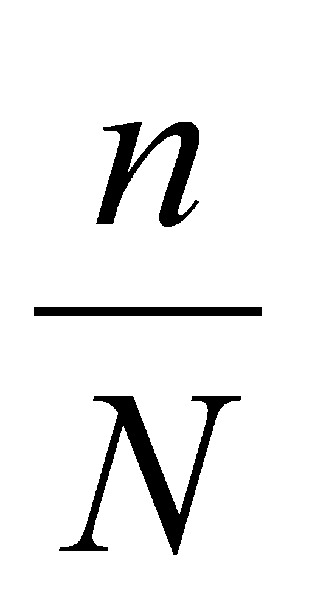. If similarly, each agent desires to acquire v goods, then the probability of an agent desiring a certain good out of a total of N goods is 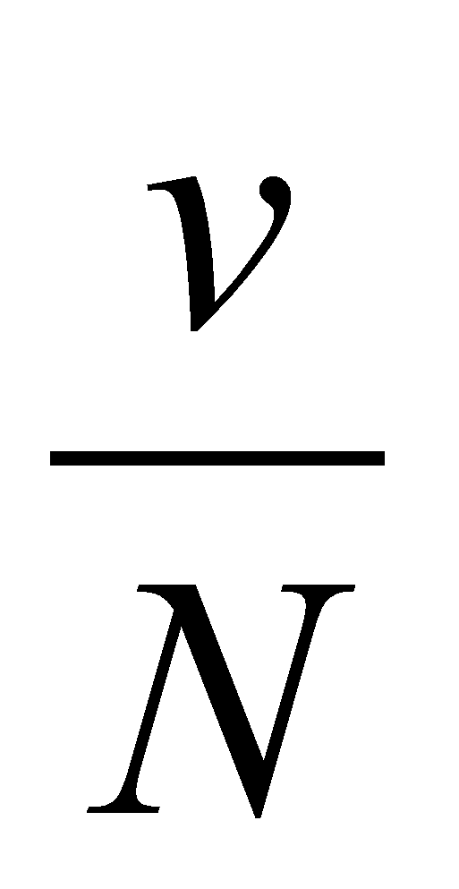. The probability of finding an agent that desires to exchange good B with good A is then 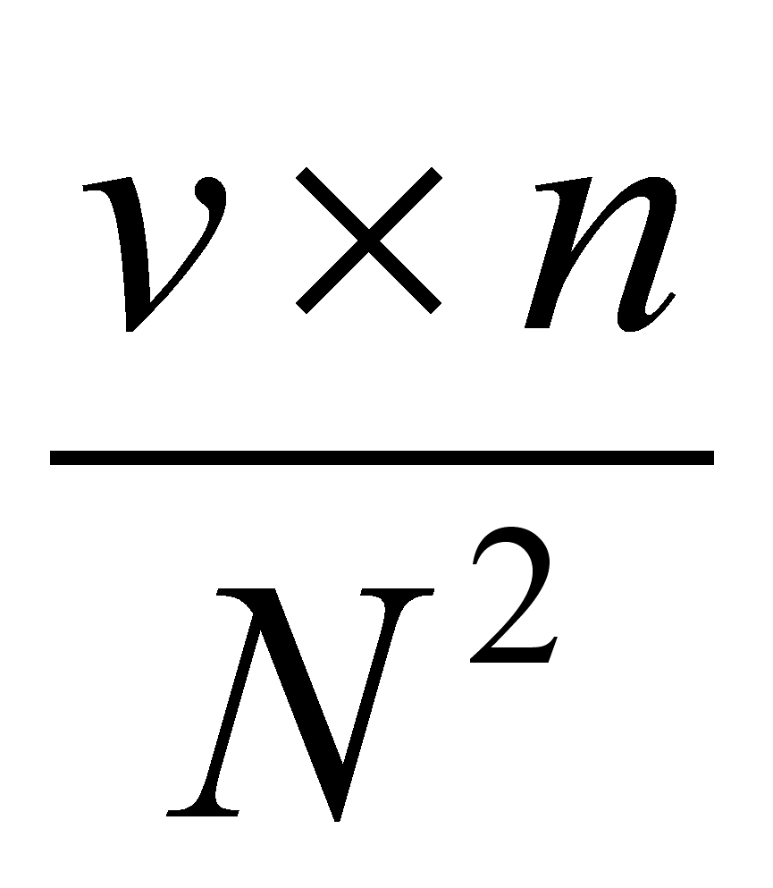. Under the reasonable assumption that the transaction cost c, that is to say the overhead costs involved in performing the barter, is proportional to the reciprocal of the probability of finding an agent willing to exchange, we have 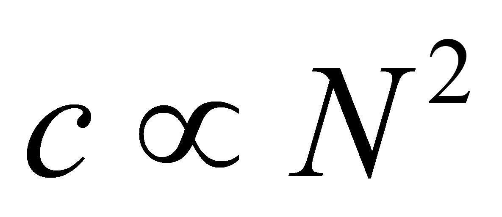. In a complex economy, where N is large, transaction costs would be prohibitive, in the sense that the transaction cost would be higher than the consumer surplus that the agent can derive from the exchange. In a monetary economy, an agent needs only to find someone that desires good A and then someone that offers good B. The probability of this combination of events is 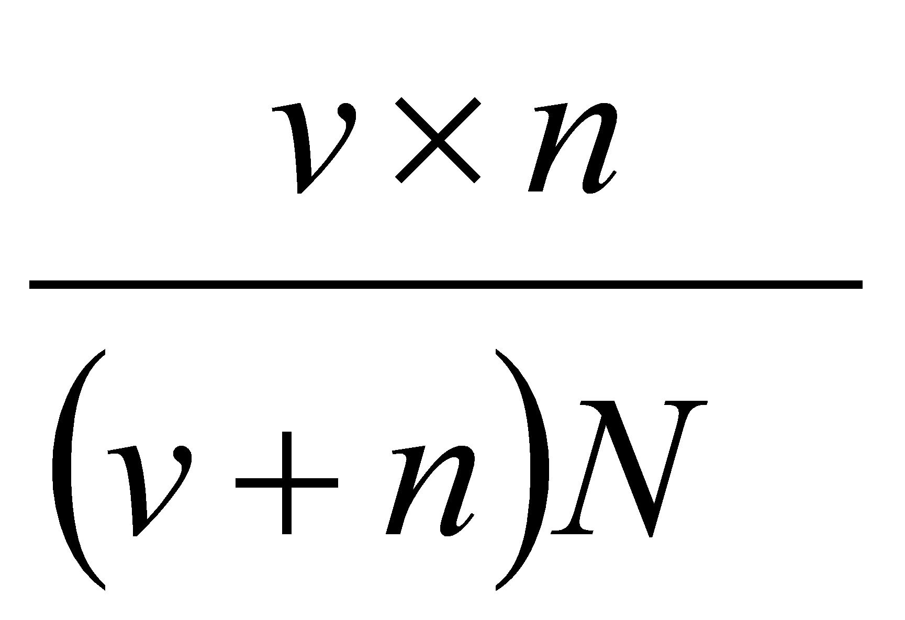and therefore 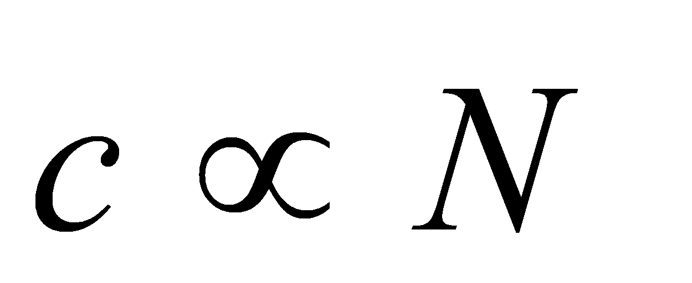.
264 Similarly to the barter vs. monetary economy example the reduction in connection cost is dramatic, from quadratic, in the case of a many-to-many topology, down to just linear in the number of nodes for the hub-and-spoke solution. If N nodes are interconnected directly that requires N (N-1) interconnections and correspondingly quadratic costs. If they interconnect through a hub only N connections are needed.
267 Reed, David P., Reed's 3rd Law: a scaling law for network value, http://www.reed.com/reeds3rd.htm
268 Reed, David P. Reed's Law: That Sneaky Exponential - Beyond Metcalfe's Law to the Power of Community Building, Context Magazine, Spring 1999, http://www.contextmag.com/setFrameRedirect.asp?src=/archives/199903/DigitalStrategy.asp
269 Image from Reed.
270 Image from Reed.
271 Odlyzko, Andrew M. The History of Communications and its Implications for the Internet, AT&T Labs Working Paper (2000), http://www.dtc.umn.edu/~odlyzko/doc/history.communications0.pdf
272 Odlyzko, Andrew M. Content is not king, AT&T Labs Working Paper (2001), http://www.dtc.umn.edu/~odlyzko/doc/history.communications2.pdf
{kind=link}
{kind=link}